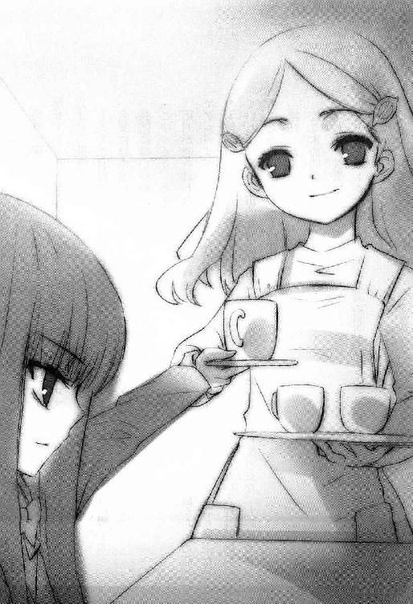

| [谷川流] 涼宮ハルヒ09 | |
| 谷川流 | |
| (2015) | |
|
涼宮ハルヒの分裂
谷川 流
|
桜の花咲く季節を迎え、涼宮ハルヒ率いるＳＯＳ団の面々が無事に進級を果たしたのは慶賀に堪えないと言えなくもない。だが爽やかなはずのこの時期になんで俺はこんな面子に囲まれてるんだろうな。顔なじみの一人はいいとして、以前に遭遇した誘拐少女と敵意丸出しの未来野郎、そして正体不明の謎女。そいつらが突きつけてきた無理難題は、まあようするに俺をのっきぴならない状況に追い込むものだったのさ。大人気シリーズ第９弾！
●谷川 流
兵庫県在住。２００３年、第８回スニーカー大賞〈大賞〉を『涼宮ハルヒの憂鬱』で受賞し、デビューを果たす。また、電撃文庫より『学校を出よう！』『電撃!!イージス５』『絶望系閉じられた世界』『ボクのセカイをまもるヒト』の著作がある。趣味はバイクと麻雀。人生明鏡止水中。今一番欲しい物は一粒で一日に必要な栄養素を完全に摂取できる錠剤と小さな幸せを感じとることができる心のあり方。
プロローグ
季節の移り変わりを何をもって実感するかは人それぞれだと思うが、この半年間の俺の場合、家で飼ってる三毛猫シャミセンの動向が最も解りやすかった。
シャミセンが夜中に俺の寝ているベッドに潜り込まなくなったことで、俺はこの地域に四季のうちで最高評価を与えてもいい数ヶ月がやってきたことを知り、だが猫以上に季節に敏感なのは環境変動への対応に感心するほど正確に準じる植物たちだろうとも思いつつ、あちらこちらで満開となった桜たちが、まるで全員が事前に打ち合わせでもしていたようなスケジュール通りの散り様をそろそろ見せてくれそうな四月上旬の空はクレヨンで塗り固めたように青く、太陽は続く夏への準備運動のつもりか、やたら明るい日差しを地表へと降り注がせていたものの山から吹き下ろしてくる風はいまだほんのりと冷たくて、俺の現在位置がそれなりの標高にあることを教えてくれている。
やることもないのでひたすら上空を仰いでいた俺の口から、言っても言わなくてもどうでもいいような単語がこぼれ落ちたのは、やはりヒマだったから以外の理由はなかろう。
「春だな......」
なので、別に誰かにリアクションして欲しかったわけでもないのだが、そういう空気をちゃんと読んでいながらも意識的に無理矢理かぶせてくる臨時隣人が、
「疑いようもなく春ですね。そして学生にとっては新しい一年の始まりです。カレンダーの上でも、年度的にも。そして僕の心情においてもね」
むやみに爽やかな語り口調、まあ春と秋には似合っていると思ってやってもいいか。夏なら暑苦しいだけだし、冬にだって囁き声を聞き取れるほど至近距離にいたい人物ナンバーワンは朝比奈さんくらいだからな。
俺が早くも上の空へと移行しつつ聞き流しモードに入りつつあるのを感じたのかどうか、
「高校生になって二度目の春を迎えたわけですが、私的意見を申し添えますと、これが『やっと』と言うべきか、それとも『もう』と言うべきか、少々判断に迷うところがありますね」
迷うことなんかあるものか。英語ならどちらもｙｅｔだ。過ぎ去った時間にあったことをいちいち全部覚えてなどいないから、振り返ったらたいていのもんは早く終わったように思えるし、これからあるようなことは知りようがないから早くも遅くもなく、いまやってることは内容によって、主に楽しいか否かで早かったり遅かったりを自分なりに感じていればいいのさ。少しは時計の身にもなってみろ。あいつらは文句も言わずに同じ秒数を同じだけカチコチいわせてんだぜ。たまに消した覚えもないのにアラームがオフになってて壁に投げつけたくはなるが。月曜の朝には特にな。
「まさにその通りですね。時計の針は我々に客観とは何かを教えてくれる数少ないものの一つです。ですが時間を主観的にしか感じ取ることのできない人間にとって、それは指針の一つでしかないものでもあるんです。より重要なのは、その一定の時間内に自分が何を考え、どう実行したかなんですよ」
「やれやれ」
俺はゆるやかに形を変えようとしている雲の観測作業を中断し、隣へと首をひねった。
相変わらずな微笑がそこにあり、その持ち主である古泉一樹の存在を表していたが、まあ飛行機雲と比べることもなく眺めていて目の肥やしにも毒にもならない日常の風景に過ぎず、そんなものを眺めていても何ら得るものはないと考えた俺は、顔を正面に向けることを実行した。
ただ、
「俺の私的意見を申し添えておくとだな」
中庭の光景を存分に網膜へ投射しつつ、耳を傾けている気配のある古泉に、
「やっぱり、やっと来たかって感じがするぜ」
そこら中に群れている新入生たちの真新しい制服を目で追いながら、俺は脳裏に録画された懐かしい映像が眼窩で再生されるのを感じていた。
そしてこう思うのだ。
一年前の二年生たちは、一年前の俺たちをこういう感覚で見ていたのかね──なーんてことをさ。
俺がこの高校に入学したのは学区割りという制度の仕業だが、そこから涼宮ハルヒという未確認移動物体と出会っちまったと認識するヒマもそうそうに、電波で素っ頓狂な自己紹介を聞かされて、何だこいつはと思っているうちにあれよあれよとハルヒ時空に引きずり込まれ、あげくにＳＯＳ団と称する謎組織の一員に加えられた結果、とうとう本物の宇宙人未来人超能力者的存在と邂逅まで果たし、それだけならまだしもそれぞれが持ち寄ってくる宇宙人未来人超能力者的イベントに強制参加させられたかと思えば、一方でハルヒが突然思いつく道楽にも付き合わされまくるという、いやまったくもう、この一年間で俺の経験値は天井知らずだ。半端な中ボスなら片手で倒せるんじゃないかと思えるくらいさ。
「習慣ってのはたいしたもんだな」
登校時のしつこいまでに長い坂道にもすっかり慣れちまい、慣れるにしたがって起床時間が遅れていって、今やギリギリまでベッドと同一化を図っている俺だったが、学校に慣れ親しむという意味では、俺だけでなくハルヒだって滝を上り終えた鯉が竜になったくらいの変化を遂げていた。
現時点のハルヒを写真にとって、ちょうど一年前のハルヒに見せてやりたい。お前は来年、こういうふうになるんだぜ、と予言めいた声色とともに。
ま、仮にできたとしても、やっぱり俺はしないんだろうが。
「僕も同意見ですよ」
古泉は目を半分閉じるように細め、わずかに唇の端を上げて腕と脚を組んだ。
「ああ、習慣に関してです。地球上の至る所で生活していることからも解りますが、もともと人間は順応性に富んだ生物です。大概の環境に適応できてしまうんですからね。しかしそれも良し悪しだなと最近思うのですよ。一つの状態に慣れきっていると、不意に起こる突発的な事態の発生について行きにくくなる、とね」
何の話だ。ハルヒのことなら、突発的でないほうが少ないだろ。
「ええ、それはそうなんですが......」
古泉にしては珍しく言葉を濁す様子である。何か言いたいことがあれば尋ねてもいないのに喋り出すこいつのことだ、ここで追及してまた小難しい話を聞かされてはたまらない。
何か言いたげな古泉の視線を振り切るように俺は無言で首を振り、ヤツとは反対側へ視線を転じた。
「............」
無言というなら御神体レベルに無言の輩となっている小柄なセーラー服姿が、微風にそよそよと髪を揺るがせていた。
いわずと知れた長門有希、ＳＯＳ団の誇る神秘なる宇宙的秘密兵器──ってより、今は文芸部部長というほうが場に相応しい肩書きだろう。俺と古泉同様、長門も学習机と椅子をこの中庭に運び込み、ただし俺たちから数メートル離れた位置で黙々と読書をしている。なんか哲学者と画家と音楽家が環になっているとかいうようなタイトルのその本は、例によってコンクリートブロックみたいに分厚い。
俺は中庭から部室棟を見上げた。先程部室へと駆けていったハルヒと、そのハルヒに引っ張っていかれた朝比奈さんはまだ戻ってこない。このまま今日一日戻ってこなくともいいくらいだし、そのほうが誰にとっても幸せだろうが、そうもいかんだろう。
さて。
状況説明が遅れたな。端的に言おう。新学年、新学期が始まって数日が経過した今はその放課後だ。この日、俺たちは中庭に机と椅子を持ち出してきて、片隅にスペースを作っている。同様のことを他の二、三年生もやっており、ただし全員ってわけではない。
人混みの中にはコンピュータ研究部の連中の姿も見える。長テーブルにパソコン数台を陳列し、ディスプレイで何やらＣＧ的なシロモノを映しているようだ。いつぞやの宇宙艦隊ＳＬＧではなく、妙にパステルチックなデザインの、どうやら占いソフトじみたもののようだな、あれは。日和ったかコンピ研部長。もっとも三年に無事進級したらしい部長氏がいるのは確認できたものの、今でも部長職に留まっているのかまでは知らん。どうでもいいっちゃあ、いいが、後で長門に訊いておくか。
他の場所に目を移すと、そこかしこに得体の知れないグループがひしめきあっているのが見て取れる。中には聞いたこともなかったけったいな同好会やら研究会の名があって、そんな発見をして俺はますますどうでもよくなる。もともとこんな行事に俺たちが付き合っている由縁など、まったくないはずなのだ。
曲がりなりにも理由があるのは、実は長門だけである。
俺はもう一度、瀬戸物のように無口な読書好き娘を見やった。
全体的に離れた位置でポツンと席に着いている長門の机の前には、『文芸部』と墨痕鮮やかな明朝体で書かれた半紙がセロテープでとめてある。気まぐれな春風に半紙がそよりと揺れるたび、長門の美容院とは無縁そうなショートヘアも同じようにゆらゆらとし、本人は外界から隔絶されることを望んでいるような静けさで、本のページから目を上げようとはしなかった。
もうお解りだろう。
文化系クラブ──特に弱小な部──による仮入部受付兼部活説明会。
現在、この中庭でおこなわれているのはそのような式典であった。運動部系はそれぞれ体育館やら運動場で受付やってるし、さほど勧誘活動をせずとも勝手に部員が集まりそうな吹奏楽部や美術部も各自自前の教室で網を張っている。ここにいるのは、宣伝しない限り存在や活動内容がもう一つ不鮮明な研究部以下同好会以上が主だった。
おっと、言うまでもないかと思ったため言い忘れていたが、ＳＯＳ団の人員やその関係者はめでたく全員が普通に進級を遂げている。俺とハルヒと長門と古泉は二年生になり、朝比奈さんは三年生になった。一年分の思い出が染みついた一年五組の教室とはおさらばすることに若干の郷愁はなしとは言えなかったが、何、二年生になってもこれといった違いはなく、ちなみに俺はまたもやハルヒと教室を同じくすることになって、始業式の新二年生初顔合わせの時、クラスの俺の背後席に鎮座していたのは紛うことなき涼宮ハルヒの傲岸不遜な中にも複雑さを交えた得意のカモノハシを擬態したかのような口だった。
「何よ、これ」
と、ハルヒは新クラスメイト達を舐めるように睥睨してそうのたもうた。
「一年の時とほとんど顔ぶれ変化なし状態じゃないの。もっと大胆にシャッフルされんのかと思ってたのに」
喜んでいるのか不平を露わにしているのかどっちかにしろと言いたかったが、この時ばかりはなんとなくハルヒに同意したかったね。なぜなら俺とハルヒは二年五組に編入され、谷口と国木田もなぜかいて、おまけに担任は生徒思いで知られる岡部教諭だったのである。ちょこちょこと見覚えはあるが名前の知らないヤツも交じっていたが、構成要素のほとんどは旧一年五組を引き継いでいた。何でも、この時期に早くも理系重視を決め込んだ連中をまとめるとちょうど一クラス分だったらしく、八組がそいつらの受け皿となった代わりに、それまでの八組は解体され、他の七クラスに細切れにして放り込まれたらしい。あと、極少数が一見無意味な感じにこっちからあっちあっちからこっちへと移動されてるな。担任岡部が律儀に生徒全員自己紹介をさせたのは、そのマイノリティたちへの配慮だったかもしれない。
もちろん俺はクラス分けにささやかな疑念を覚え、疑惑の徒となって、事態の裏側あたりで暗躍を遂げそうな人物に質問をぶつけてみた。「お前らの計らいか？」
結果的に得られた答えのうち、
「ちがう」と長門は単調な声で告げた後、「たまたま」とまでダメを押してくれ、
「何も仕組んでなどいませんよ。学校当局の意向でしょう。少なくとも『機関』はこの件にはノータッチを決め込んでいます」と苦笑混じりに断言したのは古泉だった。「偶然でしょうね」
どうやら本当の話らしい。
偶然を必然に変えてしまう女の名を一人ばかり知っていたが、俺がつべこべ言うこともない。
そういや朝比奈さんと鶴屋さんもまたクラスメイトになったのかね？そうだったとしたら、そっちは鶴屋家が何かしてくれてそうだが、それもまたツッコムことでないさ。教室や学級は違えど、どうせ放課後になりゃあ全員が集う場所は同じなんだしな。
俺が気にしているのは──そして気にするべきなのは、もっと違うところにあった。ひょっとしたらいま俺が目にしている新入生の中にあるのかもしれない。
宇宙人の知り合いならできた。未来人の先輩も得た。この一年で最も会話した男が超能力者だったことも認めなくてはならん。
だが。
あの日、あの時、東中出身者以外の五組の生徒を唖然とさせたハルヒの自己紹介、その語りぐさとなった文言の中にあって、まだ登場していない肩書きがあるのを忘れるわけにはいかなかった。
異世界人。
うむ。そんなものが居て欲しくなどないが、欠けているように思うのもそいつらだ。でもって、俺たちは滞りなく進級し、一年生の座が空いている............。
「やれやれ」
俺は肩凝りをほぐすように首を動かし、新一年生の監視任務を始めた。
有望そうなのを発見したらすぐさま確保──それが団長殿の命令だったからな。ところでハルヒの言う有望なやつとは、いったいどんな解りやすい姿かたちをしてんだろうね。
ついでに言っておこう。二年五組の初授業開催時の自己紹介で、涼宮ハルヒは一年前と同じ語句を繰り返したりはしなかった。代わりに、清々しいほどの良く通る声で、
「ＳＯＳ団団長、涼宮ハルヒ。以上！」
ふてぶてしさを思わす笑顔とともに俺の後ろ髪を大いに振るわせ、それだけ言って着席した。
それで充分だろう、と言わんばかりに。
そしてまあ、すべてのクラスメイトにとって、それは充分なことだったのさ。涼宮ハルヒとＳＯＳ団の名を知らない人間は、もうそこにはいなかったからだ。
いるとすれば──。
俺は前年度まで三年生のものだったスクールカラーがサイドに入った上履きを履き、中庭を闊歩する脚の数々を見るともなしに見ながら考える。
こいつらの中にしかないだろう。
葉桜の時期に差し掛かっているソメイヨシノのかたわら、俺と古泉、ちょっと離れて長門、の三人が無為なるひとときを過ごしていると、蝟集する生徒たちをかき分けることもなく、まるでエジプトを脱出するモーゼのようにこちらへと向かってくる人影が目についた。
見覚えのあるツラの男子で、俺がここで無為なことをするハメになっている遠因とも言うべき人物だ。さっそうとブレザーの裾を翻し、時折舞う桜の花びらの中を歩いてくる姿は、すっかり板についた似非権力フェイスだ。俺まで三文芝居の書き割り舞台上にいる気分になるぜ。
「ご無沙汰だったな」
生徒会長は俺たちの前で立ち止まると、渋い声でそう言った。
あいにくだがこっちはそんなにご無沙汰じゃない。始業式の全校朝礼で長々と訓示を述べていた顔をそうそう忘れたりはしないさ。
「それは何より」
シナリオのト書きに書いてあったような動作でズレてもない眼鏡をくいっと直し、信者の集まりに不満を抱いている教主のような面持ちで、
「団長はどこかね。一つか二つ、あるいはそれ以上のクレームをつけてやろうとわざわざ足を運んでやったのに、キミたちの首領の姿が見えないが」
さあ、どこにいるんでしょうね。俺はあいつの秘書でもマネージャーでもなんでもないんで、せわしない同級生の居場所など分単位で把握してなどいねーんですよ。
「致し方ないな。それではキミに問う。キミたちはここで何をしているのかね」
黙っていたら古泉が答えるかと待っていたのだが、なぜかＳＯＳ団きっての優男は春ボケしたかのように微笑をくれているだけだったので、
「見て解りませんかね」
投げやりに返答した俺を、会長閣下は鉄火面じみた表情で見下ろし、
「無論、一目で解るとも。ここがどこで、キミたちが何者かを思えば、考えるまでもなく出てくる答えだ。尋ねたのは、わたしの予想を超えた計画を企てているのではないかとわずかながら想定していたためだ。そうか、ないのか。ならば、わたしが次に言うべきセリフもすでに解っているな」
それこそこちらの想定していたものと一字一句相違ないだろうからな。むしろハルヒがいる時に来てくれたら話がスムーズだったのに......。
って、待てよ。どうしてまた会長はハルヒもいないのに慇懃無礼ポーズを崩さないんだ？現生徒会長は古泉によって強引にでっち上げられた『機関』の傀儡政権じゃなかったのか。
それともあれか。周囲の目をはばかったポーズなのか。しかし俺たちのいる一角は中庭の外れだから、聞き耳でも立てない限り会話を聞き取られる心配などなさそうだし、数メートル横に席をしつらえている長門の耳には届くだろうが、長門に聞かれて困る話なんてＣＩＡかＮＯＲＡＤの上層部しか知らないような情報ぐらいだ。
そんなつもりもないのに俺とにらみ合う形となっていた会長殿下は、ふっと唇を歪めると、真横に視線を逸らして渋い声で、
「ここはもういい。文化系は一通り見て回った。喜緑くん、キミは先にグラウンドへ行っていてくれたまえ。私もすぐに行く」
「はい」
その短いセリフを聞いて、俺は初めてそこにいた人物を認識し、思わずゲッとか言いそうになったのをすんでに飲み込み、解りきっていた言葉を吐き出していた。
「......喜緑さん？」
「はい」
律儀に彼女は応答し、上品にお辞儀をした。
声を聞くまでまったく目に入らなかった。その事実に俺は驚愕を隠せない。まるで会長の影に同化していたのが発声と同時に実体化したかのような、それほど突然出現した印象を受ける。
ＳＯＳ団依頼人第一号にしてコンピ研部長の元彼女、今は生徒会書記職にある喜緑江美里さんは、絵画に描かれた貴婦人のように微笑み、ペコリと一礼する。あっけにとられたまま、つられて俺も頭を下げた。
......ははあ、会長の気障ったらしいポーズの原因はこれか。喜緑さんには本性を隠しているってことなのか。そんな必要ないと思うんだが。
それにしても、会長と書記がワンセットのようにして登場するのは、いったいどこから来た風習なんだろうな。少しは会計や副会長にもスポットを当ててやれよ。
「お望みとあらば、そうしよう」と会長はまた眼鏡を押さえる。「ただ、ウチの会計が何か言いたそうにしていたのは、そちらの文芸部部長についてだったがな」
それについては俺も古泉の伝で小耳に挟んでいた。前年度、まだ春休み前にあった生徒会主導による各クラブの予算分配会議に関しての一件だ。部員一名とは言え文芸部はれっきとしたクラブなので、その代表者もまたその会合に出席していた。それは誰かというと、当然ハルヒではなく長門有希である。ハルヒは最後まで代わりに出るか、長門についていくか、ともかくその場に行きたそうにしていたが、文芸部室を違法占拠している当の首謀者がそんなところに出向いても場をいたずらに攪拌するのみであり、最悪、乱闘になりかねない。
むくれつつも俺と古泉の諫言を受け入れ、ハルヒは敵国に人質を送り出す戦国武将のような面持ちで音もなく歩き去る長門の後ろ姿を見送った。
そしてまあ、一時間ほどして戻ってきた長門は、部員が最低人数しかいない休眠も同然の部活としては破格の部費をぶんどってきたのである。
いったいどんな手品を使ったのか、何が起こったのかは誰も解らなかったという噂だった。なんでも長門は、会議室のテーブルに静かに着席していただけで一言一句たりとも発せず、ただ生徒会会計の目をじっと見つめるのみだったそうだ。毎年のように紛糾し長時間化するのが恒例の予算分配会議は、例外的に穏便に進行し何一つ荒れることなく終了したと聞いている。
会長は自分の手柄を誇るように、
「もっとも、会議とは名ばかりで、ほとんどは私と喜緑くんが作製した予算案に従ったものになったのだがな。にしてもだ。予想はしていたが、文芸部だけがイレギュラーだった。ああ、別に今さらとやかくは言わん。予算に応じた活動をしてくれたら私も文句はない。していなければ文句をつける。もう終わったことだ」
会長の口上をこじんまりと聞いていた喜緑さんが不意に、
「それでは会長、わたしはこれで」
「ご苦労、喜緑くん」
喜緑さんは最後にまた俺たちに一礼し、新芽のような笑みを投げかけてからグラウンド方面へ姿を消した。かすかに百合のような芳香を残して。
この間、長門と喜緑さんの間に視線の応酬は一瞬たりともなかった。さすがは似たもの同士、言語に頼らない会話方法を習得済なのかもしれない。長門が本からまったく顔を上げなかったせいもあるかな。
「本題といきたいところなんだが」
会長はするりと眼鏡を外し、指先でぶらぶらさせながら、
「あの女がいないのに話を進めても仕方がない。いつ戻ってくる？」
まもなくでしょうよ。朝比奈さんの衣装チェンジにそう時間がかかるとは思えない。
「いいだろう。待たせてもらうことにしよう」
それにしてもこの会長、やけに様になっている。まるで三年前から会長をやっていたような風情だぜ。
「我ながらな。生徒会の仕事など、面倒なだけだと思っていたんだが......」
会長はニヤリとし、やっと正体の片鱗を鉄面皮から覗かせた。
「やってみるとこれが存外面白い。教師どもや執行部の連中相手に会長を演じているとだ、」
パシンと片手で頬を叩き、
「どっちが本当の俺だったか時々忘れそうになる。別人格になりきるってのも悪くはないな」
「ペルソナを被り続けるのは結構ですが」
ここでやっと、古泉が重たげに口を開いた。
「顔にはめた仮面に本体を乗っ取られないでくださいよ。ミイラ捕りがミイラになったり、猫被りが猫になったりするとは往々にしてよくありますから」
「迷宮に取り残された盗掘者はミイラになどならん。ただ屍をさらすだけだ。そして猫の寿命は人間より短い」
会長は猛禽類的な笑みを見せ、眼鏡のレンズを袖で拭って再び鼻の上に戻した。
「心配するな、古泉。俺は上手くやるさ。ただし──」
眼鏡を掛け終えた会長は、本人でもどっちが地だか解らないというのも納得の完璧な生徒会会長へと変化し、
「あの脳内花畑女の首紐をつけておくのは、キミたちの役目だ」
会長が視線を向けるその先、部室棟の出入り口から姿を現したのは、春の到来を確信して喜び浮かれる森の動物のごとき我が団長と、春の妖精が暖かな日差しとともに具現化したようなＳＯＳ団専属メイドのお姿だった。
ハルヒは片手に段ボール箱、もう片手に朝比奈さんを抱えて笑顔満面だったが、会長の姿を発見するや、解りやすいな、きりりと眉を吊り上げた。
「ちょっとちょっと！」
大股でずかずか歩くハルヒに腕をつかまれているため、朝比奈さんがあわあわとするのもかまわず、
「はっはーん、やっぱりね。思った通りだわ。あたしがいない時を狙って来たわけね。でもおあいにく様。あたしたちは生徒会にイチャモンつけられるようなことを何一つしてないんだからね！」
いやぁ......それはどうかな。お前はいったい中庭で何をおっ始めるつもりなんだ。
「あ......会長さん」
コマドリのように目をパチクリさせる朝比奈さんがメイド衣装なのは別にいい。それは空き地にネコジャラシが生えているくらい見慣れたいつもの光景だからな。
「おいハルヒ、お前」と俺。「なんて格好してやがる」
さすがにそれは俺も初めて見るぞ。いつのまに用意してたんだ？
しかして、ハルヒは傲然と胸を張り、
「文句あんの？ チャイナドレスのどこに問題があるっていうのよ」
言葉の通り、ハルヒはスリットから伸びる脚も目映い、ラメ入りで昇り龍の刺繍がデカデカと施されたスカーレットレッドのロングドレスを身につけていた。おまけにノースリーブ。
登場と同時に雄叫びを上げるもんだから、すでに中庭にいた生徒どもの視線を独り占め状態だった。同じようにメイド朝比奈さんも衆人環視のハメに陥り、恥ずかしそうにもじもじしている姿は、できれば俺の目用に寡占化しておきたいところだ。独占禁止法など知ったことか。
「そりゃパーティ会場にいたら問題もなかろうが、ここは学校で、しかも大勢の新入生の前だぞ。少しは場をわきまえろよ」
常識論で諭しにかかる俺に対し、
「わきまえてるじゃない。だからこれにしたのよ。本当はバニーガールでいいかなって思ったんだけどさ、またうるさそうだしと思ってチャイナドレスにしたこのあたしの配慮をありがたく受け取ることね！」
そう言ってハルヒは挑戦的に指を会長につきつけようとして、両手がふさがっていることに気づいたらしい。朝比奈さんを解放し、段ボールを俺の机にどすんと置いて手を払い、改めて指差しポーズ、
「ありがたく受け取ることね！」
言い直しやがった。
だが、会長もさるもので、
「そのような配慮は配慮と言わん。当然、学校の風紀を預かる生徒会長としては毅然として受け取るわけにはいかない。ところで五十歩百歩という言葉に聞き覚えはないかね。あるいは似たり寄ったりでもよいが」
「それが何よ？ ドングリの背比べって言いたいの？」
「いや。私としては未来への希望に満ちあふれて我が校に来た若人にいらぬ混乱を与えたくないだけだ。中でもいたいけな男子生徒の劣情を催すようなものは許し難い」
「劣情って何？ 片腹痛いわ。いい？ 制服だって体操着だって催すヤツはどうしたって催すのよ。あんた、あたしたちに素っ裸で授業受けさせる気？」
ヘリクツにもほどがある。果たして会長も、
「話にならん」と吐き捨てる。
「いいじゃないの。生徒の自主性を重んじてもらいたいわね。放課後くらい、あたしたちが着たい服は自分で選ぶわ。これで登下校するって言ってるんじゃないんだし、いいわよねえ？ね、みくるちゃん」
「え、あ、はい。これで下校するのは、そのぅ」
朝比奈さんは小さくプルプルと首を横に振り、ハルヒのチャイナさん姿をまぶしそうに見て、どこか羨むようにほうっと息を吐いた。着たいのだろうか？
まあ、朝比奈さんとそろってバニーガール化し校門でビラをまいていた去年に比べたらムカデなみの進歩と言ってもいいだろう。肌の露出範囲が格段に狭いからな。しかしながら、新入生を相手にした行事で新二年生と三年生がコスプレしてんのはどうかと思うぜ。しかも何の意味もなさそうとあってはなおさらだ。
「意味ならあるわよ、ちゃんと。ほら、今だってすっごい目立ってるでしょ？」
だから目立つことにそもそもの意味がないと言ってるんだ。
ハルヒはまじまじと俺を見つめ、俺がクジラの浮上気配を感じ取ったオキアミの心境になっていると、ぴょんと跳ねるように黙々と読書中の長門の背後へと回った。
「キョン、あんた忘れてんじゃない？ あたしたちは何しにここに来ているんだっけ？二秒で思い出しなさい」
えーと。
「はい終わり」
ハルヒは俺にコンマ五秒の時間しか与えず宣言し、顔の前で指を振り、その手を冷凍処理されたかのように不動の長門の肩に置いた。
「あたしたちはね、有希の手伝いに来てんのよ。決してＳＯＳ団の新入団員勧誘のためじゃないわよ。そのへん、ちゃんと解ってなさいよね！」
と、会長に向けて言った。言及された長門本人はパラリとページを捲るのみ。
「ふむ」
ここでたじろいだりしないのが現会長の特性だ。眼鏡のツルを人差し指で触れてから、
「涼宮くん、つまりキミは文芸部に籍を置いていないにもかかわらず、文芸部の部員集めを買って出ているということかね」
解りやすく要約してくれて助かる。
「そうよ」
ハルヒはますます胸を反らし、今度は俺と古泉のいる机を指し示した。
「ほら、二人とも机を並べて座ってるだけで何もしてないでしょ。ＳＯＳ団なんて書いた紙も貼ってないし、春眠が暁を覚えないせいでキョンはいつもよりアホ面だし」
最後の文章は余計だろうよ。
「ほう」
会長は顎を引いて眼鏡を意味なく光らせつつ、
「では涼宮くん。キミが持ってきたその箱に入っているプラカードと思しき物は何かね」
「プラカードよ」
ハルヒは段ボールから突き出ていた棒の柄を握りしめ、思い切りよく取り出した。
白いペンキを塗られた木の棒の先に、これまた白く彩色されたベニヤ板が二枚張り合わされていて、そこにはハルヒの手によって『文芸部』と書いてあった。手頃な木の切り出し組み立てペンキ塗り他の雑用が俺に回ってきていたのは言うまでもない。
「ほらほら、文芸部でしょ。みくるちゃんにこれ持って立っててもらうの。放っておいたら有希は積極的で的確なアピールなんかしないからね」
これは本当だ。クラブ紹介の時間は一年生の時間割に組み込まれていて、先日それはおこなわれたらしい。らしい、というのはそこにＳＯＳ団の介入する余地はなく、呼ばれる理屈もないため、召集されたのは文芸部部長、長門だけだ。講堂に集められた新入生の面々が体育座りする前の壇上、そこで長門は割り当ての時間をめいっぱい消費し、世界各地の主要都市の気温を読み上げるような淡々としたニュース口調で『大脳生理学的見地から読み取る言語の不完全性と対話者間における意思伝達』というテーマの論文を発表し、文芸部のぶの字もでなかったのはもちろん、それ以前に序説が終わったあたりで一年生の半分は睡魔にのっとられていたとかなんとか。その催眠術じみた説法の最中、文芸部に入ろうと思っていた人間がいたとしても確実に忌避したくなるような倦怠感が講堂を支配したという。長門有希恐るべし。
だが長門はいっこうに気にしなかった。今日も放置しておけば部室にこもって読書を続けているだけだったろう。放っておかなかったのがハルヒである。
新入部員募集イベントなんておいしい出来事を、ハルヒのツムジ付近に生えている見えざるセンサーが無視してのけるはずはない。
だが待てよ。繰り返すがＳＯＳ団は正式には未認可であり、今なお秘密結社も同然の学内非合法組織である。公に団員募集などできるわけはない。以前のハルヒなら堂々としてたかもしれんが、今年度からは生徒会長の目が生き生きと光っている。では、どうやったらこの日を楽しく遊べるだろう。
こうしてハルヒの頭上でレジスターが高らかに鳴り響き、俺たちは急遽文芸部ボランティアとなって春宵一刻値千金な花冷えの候、今日というこの日を中庭にてぼんやり過ごしている。
──と、いうのが表向きの話であるわけで、当たり前だが裏もある。
それは生徒会長にも容易に計算できる事態であったらしく、
「そのプラカード、裏面も見せてもらおうか」
「いいわよ」
ハルヒはニンマリと笑って、手首を返した。『文芸部』の裏側は──もちろんリバーシブルでも『文芸部』だ。ＳＯＳ団なんて書いてあろうはずもない。
「準備万端というわけか。まあよかろう。キミの言いぶんは一応だが論理に叶っているところがないでもない」
会長は眼鏡のブリッジを押さえつつ、
「妥協は性分にあわんが、下手に騒ぎを起こされるよりは格段にマシといえる。他の部の迷惑にならんよう、大人しく黙って日没までそこに突っ立っていてくれたまえ。私は視察でいそがしいのでな。強引な勧誘、入部の強制は厳禁だ」
それは運動部に言うべきだな。しがない県立高校だ、どこも有望な部員不足に困っている。
「もっともだ。そうさせていただこう。最後に尋ねたい。文芸部の部員を募るのはいい。それで、部員が集まったらどうするのかね。場所を明け渡すのか？」
「あんたの知ったことじゃないわ」
上級生にタメ口以上なのは二年になっても変わらずのハルヒだった。ふん、とばかりに横向いたハルヒに、
「ふむ。それだけだ。では、またな」
会長猊下はハルヒのチャイナドレスと朝比奈さんのメイド服をフィルムに焼き付けんばかりの眼光でしばらく眺め、やがて悠然と喜緑さんの後を追った。
何しに来たんだ。ハルヒに向かってするなと何度も言うのは、逆に「やれ」と言っているようなもんなんだぜ。ほらハルヒのヤツ、すでに上機嫌のあまり爆笑しそうな顔になってるじゃないか。
「うまくいったわね。ちょろいちょろい。ちょろろんよ」
会長が見えなくなるのを待っていたハルヒは、持っていたプラカードをがつんと地面に突き刺し、板に張ってあったベニヤをばりばりと引っぺがした。この工作に一枚噛んでいる俺は驚かない。あわれな『文芸部』の文字は単なる木屑と化し、その二重となっていた板の奥から出てきた文字は疑いようもなく──。
ＳＯＳ団。
去年の五月──あれは何日だったけな──に結成された『世界を大いに盛り上げるための涼宮ハルヒの団』は、まだしばらく名称を変更することなく健勝の運びになるようだ。
ハルヒの持参した段ボールの中身は手製のプラカードだけではなかった。
プラカードを朝比奈さんに押しつけたハルヒは、中華風ロングドレスの裾をはためかせながら、奇術師のアシスタントであるかのように次々と物品を取り出していく。
まずは液晶モニタ、次いでＤＶＤ再生機、各種コードやらケーブルやらアダプター類、そして最後に購買で入手したまっさらの大学ノートと筆記用具。
「さあ、設置設置」
と、ハルヒは俺をせっついた。
「これ、ちゃんと映るようにしなさい」
中庭にはコンセントなどないが、電源の確保交渉はハルヒが事前におこなっていた。ここで逆らっても無為の上に無益を重ねるだけだ。俺は言われるままにケーブルを携え、コンピ研ブースへと赴いた。
「すみませんが、電気貸してくれますかね」
「いいとも」
応じてくれたのは部長氏だった。どうやら今でも部長職に留まっているらしく、胸元の入館証みたいな手製のスタッフバッジにそう書いてある。
「まだ下の者が心許なくてね」と部長氏はなぜか自慢げに、「一学期いっぱいは部長をしていることにしたんだ。いや一応部長候補は考えてある。これからじっくりと育て上げ──」
長くなりそうならまた今度にして欲しいね。この分だと、他の部員はとっとと引退してくれたらいいのにと思ってるかもしれんな。
「あぁ、実はねえ」
部長氏はやや声をひそめ、手の甲で口元を隠して早口言葉のように、
「長門さんに兼部してもらって、そのついでに部長もして欲しいところなんだ。僕の見た中で世界最強にコンピュータと相性のいい逸材だよ。どんな不具合もバグもシステムエラーまで長門さんがスイッチを入れるだけで魔法のように消え失せるんだ。たまに来たときにいじってもらうだけなんだが毎回が驚きの連続さ。彼女専用の自作パソコンがあるんだけど、瞬く間にメーカー真っ青なオリジナル新型ＯＳの開発に成功してしまった。ところがいくらソースを見ても全く未知のコードで彼女以外の誰にも扱えない。これが試したすべてのハードのソフトを完璧に動作させる驚異のコンパチスペックで、いったいどういう仕組みなのかと──」
そんな長々と俺に言われても、それが長門だとしか言いようがないな。個人的な依頼なら本人に直接懇願してやってくれ。きっと教えてくれると思うぞ。ただし地球人には何ら理解できないような気がするが。
俺はケーブルの先端をプラプラと振る。正しく察してくれた三年生にしてまだ現役の部長氏は、快く延長コードのソケットを貸してくれた。ハルヒによるコンピ研ＳＯＳ団第二支部化は着実に進行しているようで何よりだ。どこかで歯止めをかけないと、地球の全大陸が砂漠化するより先に人類総ＳＯＳ団員化が成し遂げられるかもしれん。いくらなんでもホモ・サピエンスはそこまで馬鹿になってないと信じたい。
ソケットにプラグを突き刺し、巻いていたケーブルを伸ばしながら戻ってきた俺を、ハルヒはフリスビーを取ってきた犬を迎える主人の顔で出迎えた。
ニコヤカなのはいいことさ。とりわけ古泉にとっては──と思って目をやってみたところ、自称エスパー少年はそれほど嬉しそうにもしていなかった。机に肘をついて指を組み、口元を隠すように顎を載っけているその反応、何の思惑があってのことだ？さり気なく横目で長門を見ているような様子も気にかかる。
なんだ？ ＳＯＳ団所属の連中は順番に情緒が不安定になるという法則でもあるのか？今度は古泉の番か？勘弁しろよ。長門や朝比奈さんはともかく、お前だけは自分を見失ったりしないと確信してたのに。
古泉は俺の不審に気づいたか、ゆっくり視線をこちらに向けると目を細くした。安心させるように微笑んだようでもあるが、どこか作り物めいた気配を感じる。
理数コースの九組にいたこいつは、そのままゴンドラに運ばれるようにクラスメイトまるごと二年九組になったはずだから、気にくわないヤツが紛れ込んだこともなかろう。
ハルヒはいつものように元気だし、古泉が気に病む事態になっているとも思いがたい。『機関』とやらの上司にバイト代の減額でも申し渡されたのだろうか。だったら何よりじゃないか。お前がヒマなのは俺がヒマである以上に喜ばしいことだと思うんでね。
それか新学期早々、新一年生の女子たちから下駄箱にラブリーな封筒を投げ込まれて困惑しているんだとしたら、俺の同情する余地はシャミセンの抜け毛ほどに無用のものとなるぜ。なにしろ古泉は黙って立っていたら問答無用で異性の目を引きそうなツラをハルヒと並んでしていやがるからな。
「キョン、さあ早くこのテレビを映るようにしなさい」
ミス・チャイナ選手権最優秀賞受賞者みたいなハルヒがプラカードを振り回しながら笑顔で命令、唯々諾々と従う俺を手伝いに、古泉も腰を上げてやってきた。そのままＤＶＤ再生機と液晶モニタを繋ぐコードをあれこれいじくり回している最中、古泉は一見普通の微笑を浮かべる一方で、だがしかし、俺に奇妙な印象を与え続けていた。
何でまた、俺にちらちらと微妙な視線を送ってくるのだ。残念ながら俺は長門と朝比奈さんのアイコンタクトを受け付けても男に見つめられて意図を理解するだけのスキルはないぜ。
ＡＶ機器を何とか正しく配線し終え、俺が投げやりな終了報告をすると、ハルヒは魚群を発見した漁師のようによしよしとばかりにうなずいて、
「さってと」
箱を漁ってディスクを一枚取り出した。嫌々のように口をあけた中古のプレイヤーに放り込み、自分ちの呼び鈴を押すような気安さでプレイボタンに人差し指をあてがう。
途端、液晶モニタに胡乱な映像が浮かび上がり、どっかで聞いたような音楽がスピーカーから雨漏りのように染み出した。
朝比奈さんがビクっと、
「あー......」
切なげな吐息を漏らし、おずおずと画面からは目を逸らす。そのいたいけな仕草にたちまち男気を喚起された俺は、
「ハルヒ、あんまりボリュームを上げんな。会長が聞きつけてまた戻ってくるぞ」
「かまやしないわ。あたしはあんな奴ちっとも気にしてないから」
してやれ。
「なんならここで公開討論をしてもいいくらいよ」
それはするな。
「もうっ、うるさいわねバカキョン」
ハルヒは目と口を逆正三角形にするという器用な表情を作り、
「あんたと古泉くんはここで待っててくれたらいいわ。あとはあたしとみくるちゃんで何とかするから」
朝比奈さんの腰に手を回し、ぐっと引き寄せつつ、ニマァと笑う。
「ひゃぁ」と朝比奈さんはへっぴり腰。
ハルヒはメイド姿の新三年生に頬ずりしながら俺をギロリと睨んだ。
「いい？ 面白そうなのが寄ってきたら確保して名前とクラスをメモってからリリースしなさい。それからウチは映研じゃないから、そっち志望者は追い払っといて。いいわね！」
一方的に申しつけると、ハルヒは朝比奈さんを強引すぎるエスコートでもって引きずりつつ、中庭周遊の旅に出た。
「やれやれ」
俺は肩をすくめてＳＯＳ団プラカードを地から抜き放ち、椅子の後ろに隠してから、モニタが解像度の限りを無駄に尽くして映しているシロモノを眺めた。
すなわち、『長門ユキの逆襲 Episode 00予告編』なる、電力と機材とデジタルデータを無駄に消費しているとしか思えない短編映像を。
新学年新学期の前には春休みなる長くもない休暇期間があったわけだが、当然の振る舞いとしてハルヒが新年度の訪れをただ座して待っているわけはなかった。
たぶん、球技大会と阪中の犬事件が終わったあたりから着々と計画を練っていたのだろう。夏や冬と比べて課題の少ない春休みこそ、まったり過ごすにうってつけの期間だというのに、ＳＯＳ団団員はほぼ毎日のように召喚されて、ハルヒが思いつきのように指差す先の場所へとトマホークミサイルのように巡航することになったのである。
いろいろ行ったぞ。アンティークショップ巡りやらフリーマーケットの下見やら、その帰り道に阪中家を訪問してルソーのご機嫌をうかがったり、それから鶴屋家の広大な庭で開催された大花見大会に招待されたり、ああ、あれは楽しかったな。鶴屋さんが指をパチンと鳴らしただけで母屋から山のような宴会料理が続々運び込まれてきた時にはたまげたが。
とにかくハルヒは呼ばれたところには必ず行き、呼ばれていないところへも乗り込んで、初春の大気を力いっぱい吸いながら俺たちを東奔西走させた。なぜ途中で息切れしないのか不思議でならない。
その中で、とりわけハルヒが熱意を注いだのは去年の文化祭で上映した『朝比奈ミクルの冒険 Episode 00』の続編だ。サブタイと思ってたほうが本タイトルだったことにも驚き打たれたが、来年度の文化祭に向けての活動を二年になる前から本当に準備しようなどと気の早いことを企むとは思わなかったよ。
こうして再びメガホンを取ったハルヒは新調した腕章を装着すると、部室の片隅に眠っていたビデオカメラを俺に押しつけるや否や、おもむろに朝比奈さんを剥き始めた。俺と古泉、即座に回れ右。
タイトルロールを飾っている人物こそ長門ユキだが、主人公は引き続き朝比奈ミクルが務めるらしく（主人公は古泉イツキじゃなかったっけ？）、ところでミクルの正体は未来から来た戦うウェイトレスなのであるから、朝比奈さんがまたしてもあのセクハラな衣装を身にまとうのはハルヒ監督的には最早必然の流れだ。これまた制服姿に鍔広トンガリ帽子と黒マントを装着した長門は星マーク付き差し棒を持たされ、古泉はレフ板を持たされた。
なんとも都合のいいことに、春なら桜が咲いているから前回の続きにすんなり入れるってわけだ。一年の間に二回も咲かされた川沿いの桜たちには同情を禁じ得ない。
しかしなぜ「予告編」なのか、春休みなのに俺たちを部室に集合させたハルヒはこう切り出した。
「あんた、予告編に騙されたことってある？」
何の詐欺行為だ、と問い返す俺にハルヒは、
「映画の予告編よ。よくテレビとか劇場で別の映画の直前とかに流れてるでしょ？それ観てさ、うわっ面白そうって思ったりするじゃない。で、その面白そうな映画をワクワクしながら観に行ったら、これが全然スカみたいな映画なのよ。たとえばね、」
たとえなくてもいいのだが、ハルヒは俺でも知ってる昔の洋画のタイトルを口にして、
「これなんか予告見る限りではメチャメチャ楽しそうで笑えそうな映画だったのよ。実際、コマーシャルだけで、あたし、何度か笑っちゃったもん。だからね、封切りと同時に小躍りしながら観に行ったわ」
と、ハルヒはオーバーアクション気味に首を振り、
「もうまったく面白くなかったわ。なんでならね、その映画の中で面白かったシーンを全部抜き出して繋いだのが、まさにその予告編だったわけ。面白いところだけを、もう映画が始まる前から知ってて、おまけに面白いシーンがそれだけしかなかったのよ。どう思う？」
俺に言われてもな。その手のクレームは配給会社に電話でもしてやってくれ。きっと予告編担当部門とかがあって、そこの社員が優秀なんだろう。
「いくら宣伝のためとは言え、良いところを全部出して編集するのはどうかと思ったわ。だからね、キョン！」
ハルヒは例のキラキラ輝く天の川銀河を閉じこめたような瞳で、
「先に予告編だけ作ってて、本編はそれから考えるのよ！予告用のショートムービーならいくらでも面白くできるわ。だってオチとかいらないし、見せ場だけ用意すればいいんだからね。と、いうわけよ」
そういうわけなので、本編も存在しないのにその予告編を作ることになったのである。ハルヒも二作目をどんな話にするか考えていなかったのだ。しかし、その映像を新入団員勧誘のエサの一つにするつもりでいた。でも肝心の本編がない。どうしよう。うーん。そうだ、じゃあ予告編を撮ろう！
なんちゅう直球な思考回路だ。まだ『朝比奈ミクルの冒険 Episode 00』をＤＶＤに焼き増しして売りさばく野望を捨てていないとみえる。前作のダイジェスト版でも編集して流せばいいのに、チラッとでも見せたら損だと思っているようだ。あるいは観たければ入団せよと言うつもりか。あんなん通して観ても頭痛がするだけだぞ。朝比奈さんのＰＶとしては百二十点だが......。
俺は野外にわざわざ持ってきたモニタをチラ見しながら、もとの椅子に尻を戻した。
画面がしぶしぶのように上映しているのは、パロディと言えば聞こえがいいが、要するに色んなところからパクってきたシーンのオンパレードだ。
蛍光灯みたいなボンヤリ光る棒を構えたイツキに、ユキが脈絡もなく「わたしはあなたの母」とか言い出したり、いきなりユキが眼鏡をかけている状態では一般人だが外すとやにわにコスチュームチェンジして空を飛んだり、黒い棺桶をゴトゴトと引きずって荒野を歩いていたり、いよいよネタ切れに陥ったかシャミセンとミクルの人格が唐突に入れ替わって朝比奈さんはずっと「にや、にゃあ」を連呼するばかりであったり、そのシャミセンの声はハルヒのアテレコで、もちろん口の動きがセリフと全然合っていなかったり、というか、シャミセンは口を開いてさえいなかったり──などなど、一見みどころがありそうで実はまったくストーリーになっていないシーンのドミノ倒し、次々様々に舞台も演者も変わるのに、やたらとテンポが悪いのはカット割りがノーセンスなせいだ。とどめに特撮シーンはわざとかというくらいにショボく、気まぐれに挿入される音楽はもうはっきり騒音の域に達していた。
出演する必要もないのに、和服を着た鶴屋さんが日本家屋庭先の桜並木をバックに気前よく「のわっはっはっはっ」と笑い、なぜかついてきていた俺の妹とシャミセンが戯れているところに至っては単なるホームビデオレベルだ。ことのついでとばかりに花見の時に意味なくカメラを回していただけだからな。バカ映画の風上にもおけないこの単なるゴミ映像集、見直すまでもなく確実に一作目より悪化している。ウェイトレスルックの朝比奈さんが飛んだり跳ねたりするあたりは、さすがに朝比奈みくるプロモーションとしては成功していたが、だいたいこれが映画の予告編であると何人が気づくであろう。ラストに入るハルヒのナレーション、「長門ユキの逆襲、今秋文化祭にて一斉公開堂々上映予定！」という雄叫びを除けば。
一つ訊いていいか？ 前作で宇宙の彼方に飛ばされたユキはどうやって、また地球に戻ってきたのだ？
「それはこれから考えるわよ。新たな敵もね！」とハルヒ超監督はのたもうた。
つまるところ、まだ考えていないのだ。見切り発車を超越し、これではほとんど詐欺フィルムである。こんなもん観て興味をもってやってくる新一年生など、こちらから願い下げだ。
ハルヒのチャイナ姿や朝比奈さんのメイドに目を眩ませられる凡人どもにもな。
かくして、中庭をうろつく一年生たちも中坊を脱して義務教育を離れた身分になっているのは制度上の問題のみではないらしく、俺と古泉が雁首並べて冴えない表情をしている机を遠巻きにするだけで、寄ってこようとはしない。
キミたちの判断は沈没船からいち早く脱出しようとするネズミのごとき賢明さだ。健康的でまともな高校生活がどれほど幸せなことなのか、ここに溢れている若人どもは知るまい。だが俺は知っているので忠告するにいささかのやぶさかも感じないんである。この年頃の一年の差はアゲハチョウの幼虫の四齢から五齢くらいの違いがある。たとえ遊び半分でも、地雷原疑惑のある草原を歩いてはいけないのさ。人間、分別が肝心だ。
俺はハルヒ企画による駄映像のボリュームを落とし、また横を向いた。
「............」
長門が省電力中のノートパソコンのようにスタンバイしている机にも他に人影はない。ハルヒに代わって喜ぶべきかどうか迷うところだが、創作的な文芸活動に興味のある一年生は未だ登場せずか。
文芸部が昨年度にやった唯一の活動、古泉の操作で会長がたくらみ、まんまとノセられたハルヒが指揮をふるって俺たちに作成させたあの会誌は、うっかりほぼすべてを無料配布してしまったせいで残部がゼロになっており、長門の着いている机に置かれている一冊がサンプルとして閲覧可能になっているのみだ。俺も含めて寄稿した連中には見本で一部ずつ配られていたが、せっかくもらった物を拠出する気になれなかったのは全員が等しく抱く心意気だったようで、誰も手放そうとはしなかった。谷口なんかあんだけブウブウ言ってたのにな。
よって新たに誰かが会誌を読もうとしたら、いつもは部室の長門文庫の中にあるそのサンプルを手に取るくらいしかない。
飽くなき探求心を手元の書物に向けている長門をぼんやりと眺めていると、
「............」
長門はゆっくり顔を上げ、無色透明な光をもつ瞳を俺に向けた。あまりにも自然な動きだったため、しばらく目が合っていることにも気づかなかった俺が我に返ったタイミングで、
「ねこ」
その微風のような声が、長門の唇からこぼれたものだと察するにも一秒ほどの時間がかかった。俺は長門の定規のように真っ直ぐな視線を受け止めつつ、
「猫が何だって？」
「どう」
「どう、とは？」
長門は少し考え込むようにしてから、ただし頭の位置をまったく変えず、
「どう？」
さっきのセリフがわずかに疑問形になっただけだが、了解した。
「シャミセンのことか」
小さめの頭がこくりと傾く。
「そう」
「元気でやってるよ。今んとこ、喋り出す気配はない」
「そう」
それだけ言って、長門はまた読書に戻る。
我が家の聞き分けのいい三毛猫を心配してくれていたのか。確かに得体の知れないナントカいう、ええと、もう一度言ってくれないと思い出せない名称を持つ共生体なるものの宿主になっちまってるシャミセンをそうしたのは長門だしな。
とりあえずアレ以降、我が家の飼い猫はエサの食い過ぎと運動不足で少し重めになった以外に変化はない。存分に猫的生活を謳歌すること、ハルヒが拾って俺に押しつけて以来そのままだ。
空煙り猫肥ゆる春、という時候の挨拶を思いついたがどうだろうか。俺も春休みには猫みたいにぐうたらしていたかったぜ。
「実に慌ただしい春休みでしたね」
古泉が慨嘆口調で呟いた。
視線を虚空に泳がせていたので、独り言かと思って俺が流していると、
「そう思いませんか？」
尋ねてから、こちらへ向き直った古泉の表情に浮かぶ笑みは、俺の目がどうかしたのか、どこか疲れて見えた。
古泉は前髪を緩慢に弾きつつ、
「どうもしていません。あなたの目は正常です。そうですね、僕はやや疲労気味です」
そりゃハルヒに付き合っていれば大抵の正常な人間なら疲れもするさ。
「一般的な意味ではありません。僕の正体と任務を覚えていますか？僕が何のためにここにいるのか、という根本的な理由です」
最初はハルヒの監視で、今では太鼓持ちだろ？
「失礼ですが、僕が超能力者であることをお忘れではないでしょうね。そして、僕の能力がいつ、どこで、誰が、どのような状態の時に発揮されるのか、ということもです」
散々聞かされたから覚えているさ。お前の正体告白を聞いたのは長門と朝比奈さんのそれの後だ。いわばＳＯＳ団団員中で最も新しい情報と言える。
「それはよかった。話が早くすみます」
古泉はわざとらしく安堵したような息を吐き、声をひそめて、
「実はここのところ睡眠不足が続いていましてね。深夜や明け方に目が覚める日常が続いています。否応なしにです。そのせいでどうも調子が回復しないのですよ」
夜眠れないなら昼学校で寝ろ。授業中の五分間の睡眠は通常の眠りの一時間に相当するという話だぜ。
「別に不眠症にかかっているわけではないのでね。それに、問題は僕の内にはないんです。もうお気づきのはずですよ。お互い、知らない仲ではないのですから、回りくどく韜晦するのは違う話題のときにしましょう」
古泉の細めた目に潜む眼光は珍しく真剣だった。いつもはお前の話しぶりのほうがよほど回りくどかろうに、少しは人のふり見て我が身を直す気分になったか。しょうがないな。知らない仲ではないというのは真実だ。長門や朝比奈さんと比べたら、もう一つ信用には足らんヤツだが。
「閉鎖空間と〈神人〉か」
古泉の超能力とやらが発揮されるのは大体そこだ。
「ご名答。ここのところ出現頻度が高まっているんです。春休み以降から、今日に至るまでね。正確には春休みの最終日からですが、おかげで僕のアルバイトはここ連続して時間を選ばず、二十四時間態勢シフトに入っているというわけです」
自嘲するような吐息を漏らし、
「慣れていたつもりだったんですよ。〈神人〉退治は僕たちの日常茶飯事でしたからね。義務だったとも言えます。しかし、この一年ですっかり鈍ってしまったようですね。昨年の涼宮さん、ＳＯＳ団結成後の彼女は、それ以前に比して飛躍的に精神を安定させていましたから。あなたが涼宮さんとあそこから戻ってきた以降は特にね」
発生頻度が減少してるってのは、そういえばクリスマス前に聞いたな。まだイブを迎える以前、俺が谷口の彼女できた自慢を聞いたあたりに。
その代わりに別のヤツが、もっととんでもないことをしたりしたが......。
「いや、ちょい待て」
俺は不条理な気分を味わいつつ、
「古泉、お前、さっきのハルヒを見なかったのか。この上なく上機嫌だったじゃねえか。物理的に地に足がついてないんじゃないかと思ったぜ。あいつの上靴には羽が生えてんじゃねえか？それにだ、あのトンチキな異空間と青い巨人は、あいつがストレスを抱えたり行き詰まってクサったら出るもんなんだろ。ハルヒがあんだけ走り回ってて退屈そうでもないのに、それじゃ理屈にあわねーぞ」
「確かに僕の目にも涼宮さんは元気いっぱいに見えますね。ヒマを持て余しているわけでもない。ここで一つ、春休みの最後の日に起きた出来事について思い出していただきたいのです」
今までずっとこ回想してたんだが。
「思い当たるフシがないと？ そんなはずはありませんね。だとしたら、まだ思い出すことは残っていることになります。しかもとびきり重要なことをね」
古泉は肩をすくめ、マヌケな回答者に最終ヒントを出す司会者のような口ぶりで、
「春休み最後の日です。涼宮さんの無意識レベルの変化が起こったのはその日からですよ。さて、何がありました？」
また無意識かよ。ハルヒの無意識と古泉の精神医学的ハッタリにはいつも悩まされるが......。
「フリーマーケットに行った日だろ。ハルヒが今度はフリマに参加したいと言い出して、その下見に電車にまで乗って隣の隣の市まで──」
「電車に乗る前ですよ。僕が指摘したいことは」
いちいちうるさいな。
俺は目を閉じ、まともや回想の海へと漕ぎ出でた。
ハルヒがバザールだかフリマがどうとか言い出したのは、春休みに入ってそうそう、映画第二弾予告編撮影準備中の部室のことだった。
朝比奈さんをウェイトレス姿に着替えさせ、長門に占い師兼魔法使い用帽子とマントを着用させてクランクインキャンペーンよろしくメイン二人を並ばせた前で、ハルヒは黄色いメガホン片手に立ちふさがりつつ、部室を自主的に追い出されていてようやく戻ってきた俺と古泉を振り仰いで言った。
「この部室、ちょっとモノが増えすぎたと思わない？探したんだけど、この前作った監督の腕章がどっかにいっちゃってたのよ。他の荷物に紛れてるだけかもしんないけど、そろそろ備品を整理する頃合いかしら」
いらんもんをカラスのようにどっかから拾ってくるのは主にお前だろうよ。長門は本だし、朝比奈さんは茶器から茶葉、古泉はロートルなゲーム各種だけで、かさばる物の大方はハルヒが持ち込んできたものに限定されている。
ハルヒはどっかりと団長専用椅子に腰を下ろし、
「あたしさ、イベント告知のチラシとか配ってたら絶対もらってくることにしてんのね。で、ちょっと前にこれもらったの忘れてたわけ」
机の中から紙切れを取り出す。
「フリーマーケットのお知らせよ。ちょっと遠いけど、特急に乗れば十五分くらいのところだわ。できれば今すぐ応募したかったのよね。でも今あたしたち色々いそがしいし、申し込みの審査にも時間かかるみたいだし」
俺たちがいそがしいのはハルヒがそうしたがっているだけだからなのだが。
ハルヒがひらひらさせているチラシを受け取り、俺は自分の椅子に座った。フリーマーケットね。この時期だから在庫一掃処分セールみたいなものか。
俺がハルヒに新たな出がけ先を入れ知恵したペーパーを睨んでいると、
「お茶です」
目の前のテーブルに、コトリと俺の湯飲みが置かれた。
素晴らしきかな朝比奈さん。映画用ウェイトレススタイルでもお茶くみを決して忘れないその慎ましやかな笑顔と優しさに俺は涙腺が緩みそうになる。メイドではなくウェイトレス姿で給仕されるのも新鮮でいい......って、本来こっちの仕事のほうが格好には合っているんだよな。普通、ウェイトレスは宇宙人と格闘したりはしない。
「うふ。この衣装も、その、外に出ないのなら可愛くていいんだけど」
朝比奈さんはスカートの裾を気にするように脚を合わせてから、嬉しそうに盆を抱き、また急須と湯飲みの元へパタパタと小走り、そのまま全員分のお茶を淹れて配って回った。全校の朝比奈ファン垂涎、彼女の小間使い姿を見ることができるのは世界広しといえども文芸部室だけである。ついでに、魔女ルックで読書にふける長門を目に納められるのもな。一応写真に撮っておきたい光景だ。
俺が目と喉の渇きを存分に癒す作業に没頭していたところ、
「ちょっとキョン！」
五秒でお茶を飲み終えたハルヒが、湯飲みを音高く机に置いて立ち上がった。本当にいそがしいヤツだ。
「今回は無理だけど、次はあたしたちも商品を持って参加するわよ。いまのうちに家の押し入れを漁って、高く売れそうな要らない物を用意しておきなさい。何かあるでしょ？もう使わないのに捨てられなくて死蔵されてるコレクションとか、もらったのはいいけど封も開けていない贈答品とか」
ガキの頃雑誌の懸賞で当たった、観たこともないアニメロボのプラモ一式とかでいいのか？大量に送ってくれたものの、組み立てるのが面倒でそのまま放りっぱになってる。
「そういうのでいいのよ」
ハルヒは俺の手からフリーペーパーをひったくるように取り戻し、丁寧にたたみつつ、
「プラモデル？ それだってあんたに作られるより上手な人の手に渡るのが幸せに思うわよ、きっと」
ガキ向けの難易度低いプラモより、コンピ研から戦利品としてせしめたノートパソコンを出品してはどうだい。高く売れるぜ。
「それは大切な備品よ。そろそろコンピ研を呼んでアップグレードさせなきゃね」
次にハルヒの矛先は、湯飲みを両手でもってふうふうと息を吹きかけている朝比奈さんに向いた。
「みくるちゃんとこにもいっぱいありそうね。着古した服とか無駄に集めた食器とか。しょっちゅう買い物行ってるみたいだし」
「あ、ええと」
朝比奈さんは麗しい目を見開いて、
「そ、そうですね。ついつい可愛くて買っちゃうんです。けど、着てみたら似合わなかったり、変な味だったり......。えと、どうして解るんですかぁ？」
「イチコロで解るわよ。だってみくるちゃん、店先を一緒に歩いているときキラキラした目で『今度これ買いに来よう』ってトランペットを欲しがる子供みたいな電波を出してるもの。よくお小遣いが保つわね」
ぎくっとする朝比奈さんだったが、ハルヒは早くも別人へと槍先の方向を変え、
「有希んちには本がたくさんありそうね。フリマで古本市を開いたらいいわ。この部室の本棚ももうギュウギュウ詰めだしさ。床だって、ほら。もう底が抜けそうよ」
「............」
長門はゆっくりと首をねじってハルヒを見、さらにねじって本棚を眺め、おまけに俺を一瞥して読書に戻った。
長門が自分の蔵書を手放すとは思えないし、それに長門の家には本がたくさんあるんじゃなくて、たくさんの本しかないと言うべきではないかと頭で単語の入れ替えを試みている俺に、
「キョン、そんときにはカートを持って有希のところまで取りに行くのよ。箱詰めの手伝いもね」
長門は再び首をひねって俺を注視し、俺はその目に浮かぶメッセージを幻視する感覚に襲われた。あれはいつだっけ。ああ、中河のバカからアホな電話があった頃合いだから冬休み中だな。部室の年末大掃除にて、長門は本棚に溢れる本の処分について完全ノーコメントを貫いていた。家の自室に置いてある本だって一冊たりとも失いたくないはずさ。
「そうですねえ」と古泉が湯飲み片手に、「せっかく持ってきても対戦相手がなかなか見つからないゲームばかりですしね。この際、僕のコレクションから外してもいいかもしれません」
苦笑いみたいな表情を俺に向けるのは遠慮してもらいたい。
ハルヒはせわしなく団長机に飛び乗るようにして座ると、
「そういうわけでみんな、春休み最終日の予定は空けておくのよ。フリマの下見に行くからね。ついでに面白そうな物があったら部費で買っちゃいましょ」
その部費がＳＯＳ団のものではなく、文芸部の割り当て分であるのは言うまでもない。
──てな感じで。
わざわざ学校がしばらく遊んでていいぞ、と門を閉ざしている休暇中だっていうのに、ハルヒ率いるＳＯＳ団は午前中いっぱいを惰眠で過ごす時間を与えられることはなく、あちらこちらをウロウロした春休みの最後の日も、すっかり集合場所として定着した駅前に向かう次第となった............。
「ようやくそこに辿り着いてくれましたか。もしやあなたの記憶から抹消されているのではないかと不安だったんですよ」
あの日のことを俺のメモリーから消去して誰が得するんだ。
「損得勘定では推し量れないことですが、できるものなら僕が消したかったですね」
おかしなことを言う。古泉に記憶操作されるいわれなどまったくない。だいたい、そんなことができるのなら、まずまっさきにハルヒの頭をどうにかしろよ。
「おっしゃるとおりです」
そんな悩ましげに言うな。だいたい、ハルヒのことで頭を悩ますなんて人生の無駄遣いだぜ。
「そうはいきません。涼宮さんの悩みは、僕の悩みでもありますからね」
古泉は小さく降参するように手を広げ、俺は回想に戻った。
フリーマーケット当日の朝、俺は目覚まし時計の雄叫びに従ってベッドを抜け出した。
後ろ髪引かれるとはまさにこのことだ。温かい寝床を後にして自分だけ起きるのもシャクだったが、心地よさそうに朝寝を貪るシャミセンの寝顔を見ていると毛布の中から引っ張り出すのが気の毒に思えてならず、俺は孤独に一人で階下へ降りていった。
台所を覗くと、
「あっ、キョンくん。おはよーう。ヒャミはーぁ？」
妹が焼いたパンを口に詰め込みながら訊いてきた。
俺は冷蔵庫を開けて麦茶のボトルを出し、コップについで一息で飲み干してから、
「寝てる」
「キョンくんのパンも焼く？ あ、目玉焼きあるよ。みずやの中ー」
「頼む」
と俺は言い残し、洗面台に行く。戻ってくると、妹は食パンをトースターに突っ込み、ハムエッグの載った皿を電子レンジに入れているところだった。特にかいがいしいというわけではなく、ただこの手の操作をするのが面白いと思っているだけである。
ちなみに明日付で小学六年生十一歳となる予定の妹の本日の予定は、ミヨキチの家にお呼ばれして夜まで帰ってこないというものになっていた。今もさっそく妹なりにおめかししたよそ行きの格好で、到底同い年同学年と思えない姿形をした友人が迎えに来るのを待っている。
ところでそのミヨキチだが、三日ほど前、道でバッタリ顔を合わせたときには驚いたね、少ししか目を離していなかったはずなのに、わずかの期間でますます美人ぶりな成長に磨きがかかって俺の妹と並んで歩いていたらこれがもう五人姉妹の長女と末っ子にしか見えない。いったい何を食わせたらここまで違う具合になるのであろう。
いや本当に、ミヨキチが妹だったら俺の部屋に勝手に来て無断で物を持っていったりしないだろうし、朝はもう少し上品な起こし方をしてくれるだろうし、触り倒されて逃げるシャミセンをドタドタと追いかけることもなさそうだし、なぜ俺はミヨキチの兄として生まれなかったのか考えれば考えるほど──
「自慢の彼女の話はけっこうです」
古泉は目の前に落ちてきた桜の花弁を摘み上げつつ、いやにキッパリと言った。
「吉村美代子さんを妹に持つ者は辛いかもしれません。違う方向から見ると、あなたの妹さんにも充分な素質があるという意見も出るでしょう。しかしながら、今は別人に関してもっと詳細をお伝えいただけますか？とりあえず、自宅を出てから集合場所に辿り着くまでの話をね」
あんまりな言いぐさだな。お前はミヨキチの実物を目の当たりにしていないから冷淡でいられるんだ。
まあいい。高校一年生春期休暇最後の日の俺的回顧録をそんなに聞きたいのなら、先を急いでやるさ。しかし古泉、そこにはお前も登場人物として出てくるんだぜ。何があったかなんて解ってるはずじゃないか。
「自分のことに興味はありませんね」
古泉は指先で花びらをもてあそびながら、
「僕の関心対象はそこにはない。強いて言うなら、あなたの目を通した自分の姿がどう映っているのか気になるくらいですが、やはり些末なことに過ぎません」
薄ピンクの花を弾いて捨てた。
「続きを」
いつものように、俺は自転車に乗って駅前に飛ばしたさ。
ＳＯＳ団集合ルールその一、最後に来た者が全員に奢るという縛りはいまだに生きていて、俺は俺以外の者に奢られたことはまだない。たまには饗応される側、特にハルヒにそうされたいという思惑が俺の脚を叱咤激励するのもいつものことだが、どういうわけか狙ったようにハルヒは俺のほんの少し前に到着するようで、あいつ、どっかに隠れて俺の様子を監視してるんじゃないだろうな。
というようなことを思いつつ、駅前線路沿いで駐輪場の空きスペースを探していた俺の背中に、声がかけられた。
「やぁ、キョン」
「うわ」
それは不意打ちに近かった。なんせすぐ背後から声がしたんだ。ぼんやりと自転車を押していた俺が、一瞬両の足裏を地面から飛び上がらせてしまったのも、無理はないだろう。
反射的に振り返り、声の主を見て取った俺は、思い出すより先に口を開いていた。
「なんだ、佐々木か」
「なんだとは、とんだご挨拶だ。ずいぶん久しぶりなのに」
佐々木も自転車のハンドルに手をかけて立っている。その顔には言葉と裏腹に、どこか柔らかい皮肉に包まれた微笑が浮いていた。
「キョン、そう言えばこの前、須藤から電話があったよ。何やら三年時のクラス一同で同窓会をしたがっていた。彼は直接的に言わなかったが言外のニュアンスや数々の傍証を鑑みるに、どうやら当時の女子の誰かに未練たらたらの恋心を抱いているみたいだな。僕が察するところによれば、須藤が執着している相手は女子校に進路を取った岡本さんではないかな。覚えてるかい？癖っ毛の可愛い新体操部の。今年の夏休みにどうだろうと言い出すので、いいんじゃないかと答えておいた。実際のところ、僕はどうでもいいんだが、キミはどうだ？」
やると言うんだったらそりゃ行くさ。けっこう親しくしていたのに、卒業式以来見ていないヤツが何人かいるしな。いまいち顔の思い出せない岡本の隣の席は須藤に譲るが。
佐々木は形容しがたい独特の笑みで唇をくつろげ、
「そう言うと思った。だがね、キョン。その中学校の卒業式以来になってるヤツの中に、当然僕も入っているんだろうね？実際、キミと会うのは揃って卒業証書を拝領したあの日以来、一年以上ぶりだ」
片手をハンドルから離した佐々木は、時間の経過を表すように手のひらを回転させた。
「キョンは北高だったな、どうだい？ 愉快な高校生活をつつがなく送れているかい？」
愉快かどうかは評価の分かれるところだが、少なくとも今の俺は不愉快じゃないな。面白いと思ってさえいる。俺が過ごしてきたここ一年の北高不思議ライフを話し出すと長くなるぜ。
「何よりだよ。僕には話すことがあまりない。決して面白くないわけじゃないけど、僕の行った高校には物理法則を揺るがすような出来事はなかったからね」
いいことだ。そんなもんがどの高校にもあったりしたら、面白がる以前に全国的にパニックだろう。
俺は元同級生の顔をためつすがめつして、中学生時代と変わっている部分を探しながら、
「お前は市外の私立に行ったんだったよな。有名進学校の」
佐々木はまた笑みの色彩を変えた。
「キミが僕のプロフィールを完全に忘却していなくてホッとした。そうだよ。おかげで授業についていくのに必死なんだ。今日も、」
と、駅の方へ揃えた指先を向け、
「塾に行かねばならない。電車に乗ってだ。まったく、勉強のために勉強しているという気分だよ。春休みという実感もなかった。そして明日になったらさらに遠く、電車通学が待っている。満員電車ほど慣れないし慣れたくもないものはないね」
北高行き急勾配ハイキングといい勝負だな。
「健康的でいいじゃないか。僕は市立がよかった。須藤が羨ましい」
何がおかしいのか、佐々木はくっくっと真似のできない笑い声を漏らし、
「ところでキョン、このローカル私鉄駅に何の用向きだ？乗車する列車の方向が同じならば、積もる話もあるし、同席するに否やはないが」
俺は腕時計を確認する。しまった。集合時刻三分前だ。
「すまんが佐々木、ツレと待ち合わせてるんだ。時間に喧しいヤツでな、遅れたら何をしでかすか解らない」
「ツレ？ 高校の？ へえ、そうかい。じゃあ、急いで自転車を置いてこなくてはね。ああ、ご心配なく。僕は毎朝止めているので有料駐輪場と月極で契約してるんだ。それがどこかと言うと、」
佐々木はすぐそばの自転車置き場スペースに自分のチャリを突っ込み、施錠すると俺の顔を覗き込むようにして、
「ここだ。キョン、キミがお連れさんの待ち合わせ場所に行くまで付き合わせてもらいたい。キミの友人なら僕の友人も同然さ。ぜひ尊顔を拝ませていただきたいものだね」
拝んでも御利益はないだろうが、佐々木がそうしたいなら構いはしない。紹介したところで佐々木の人生に何らプラスされるものはないだろうと思いつつ、朝比奈さんの愛くるしさを教えてやることは自分の手柄でもないのに誇らしい。
俺が駐輪場の空きスペースを探したり、自転車止めて小銭を払ったりする間、佐々木はショルダーバッグを提げて付き従った。歩きがてら中学時代の四方山話なんかを咲かせていたが、ＳＯＳ団御用達の駅前集合地点が見えてきたあたりで、
「キョン、キミは変わってないな」
呟くように言う。
「そうか？」
「ああ。安心したよ」
なぜ佐々木に安心されねばならん。見た感じ、お前も全然変わってねえぞ。
「だとしたら、僕はまるで成長していないことになるね。身体測定を信じるのであれば、肉体的数値はそこそこ変化しているはずなんだが」
俺だってちったあ背が伸びたんだぜ。
「失敬、そういう意味ではなかったんだ。見た目は変えようと思えば変えられる。たとえば髪を伸ばしたり切ったりするだけでもかなり印象は変化するものさ。簡単に変わらないのは中身だよ。良くも悪くもね。人間の意識が物質に宿るものだとしたら、構成物質をよほど違うものにしない限り考え方や物の見方もそう異ならないんだろう」
妙に懐かしくなってきた。思い出した。そうだ、佐々木は中学時代からこういう小難しい喋りをするヤツだった。
「あるいは」
と、佐々木は歩きながら続ける。
「考え方が一変するような聖パウロ的、またはコペルニクス的転回がない限り──だね。世界の変容はイコール、価値観の変容なんだ。それがすべてだと言ってもいい。なぜなら、人間は己の認識能力を超えた事象を決して正しく理解することはできないのだからね。僕たちの目は赤外線を見るようにはできていないが、蛇は熱映像視野を持つ。僕たちの耳は一定以上の周波数になると音として感じないが、犬たちには超高周波が聞こえる。どちらも人には見ることも聞くこともできないけど、赤外線や犬笛の音は存在しないんじゃない。ただ感知できないだけなのだと思いたまえ」
マジで北高に来ればよかったかもな、佐々木。お前と話の合いそうな野郎が一人いるぜ。ちょうどいい、今向かっている最中の到達地点で待っているはずだから、この機に知り合いになっておくか？
俺が提案しかけた時、いつしか俺を除くＳＯＳ団全員の姿はもう間近に迫っていた。
「まったく、たいした方を伴って来てくれたものです」
古泉はところどころ非難を希釈したような色を滲ませる声で、
「ある意味、僕とはよい話相手になりそうな人物です。しかし実質、僕など足元にも及びません。立場が違いすぎます。僕は自分の限界を知っているので、僕が羨望と達観を感じざるを得ない人間は少数とは言えません。加えますと、あなたもその一人です」
お世辞を言っても俺はデルフォイの巫女みたいに信託を告げたりはしないぞ。
「解っています。不可抗力ほど恐ろしいものはない。目に見えて耳にも聞こえ、なのに抗うこともできない力にはね」
それにだ、佐々木がたいしたヤツであるのは中三をともに過ごした俺には解るが、古泉が知っていたとは意外だぜ。
「意外でもなんでもありません。あなたについて『機関』が調査したということは既にご存じでしょう。もちろん生い立ちからほぼすべてを洗わせてもらいました。その結果、あなたは普遍的な意味での一般人であるという結論が出たわけです」
ありがたいね。お前の組織の保証書付きか、俺は。
「お望みならば発行しますよ。いえ、これは冗談です。冗談にならないのは、あなたが中学三年時に佐々木さんと同じクラスになっていて、親しい友人関係だったという履歴を知ったときの僕の心境です」
なぜだ。
古泉は詩を朗読するような口調で、
「あなたのご友人である佐々木さんもまた、一般人でありながら見方によってはそうでない人間である可能性があったからです。粒子のような振る舞いをしながら波動としての仕事もする、まるで光のように」
不可抗力だったのかどうかは知らん。偶然という単語は聞き飽きた。ましてや光が持つ二重性についてなど一生無縁にしていたい。
ともかく、俺と佐々木は駅前に歩を進め、二人して立ち止まったところはいつもの場所だった。
見慣れた場所、見慣れた四人のメンツ。内訳は三人が私服で一人が制服。
そして、毎度ながら発せられる団長のありがたいお言葉。
「遅刻とはいい度胸ね。あんだけ言っているのに最後どころか時間オーバーするなんて、春だからって怠けてんじゃないの？キョン、もっと一秒一秒を大切にしなさい。あんたの時間はあんただけのものじゃないのよ。待たされるあたしたちの時間と等価なの。だから、遅れてきたぶんは罰金に加算するわ。過ぎ去った時間は何物にも代えられないけど、せめてあたしたちを朗らかな気分にするならちょっぴりだけど慰めになるからね」
ハルヒは一気に喋り終え、大きく深呼吸してから、そして奇異な目を俺の隣に向けた。
「それ、誰？」
「ああ、こいつは俺の......」
と、俺が紹介を言いかけた途中で、
「親友」
佐々木が勝手に解答を出した。
「は？」
と、目を見開いているハルヒに、小さく頭を揺らして会釈し、
「といっても中学時代の、それも三年のときだけどね。そのせいかな、薄情なことに一年間も音沙汰なしだった。これはお互い様だが、でもね、一年ぶりの再会だったとしても、ほとんど挨拶抜きで会話を始められる知り合いというのは、充分親友に値すると思うんだよ。僕にとってはキョン、キミがそうなのさ」
親しかった友人という意味ではそうかもしれない。俺はよくこいつとつるんでいたし、学校が引けてからも顔を合わしている回数はクラスメイトの誰よりも多かったように思う。思うのだが──。
なんとなく居心地が悪いのはどうしたことだ。言っておくが俺は誰にも後ろ指を指されるようなことをした記憶もなく、事実もない。なのに佐々木が俺を親友だと言うのを隣で聞いていると、そしてハルヒの奇妙な表情を見ていると、五分後に雷雨が来るのが解っていながら傘を持たずに外出してしまった三分後みたいな気がしているのは、これは何故だろう。
思い出してみると、朝比奈さんの軽いビックリまなこが瞬き回数の頻度を増やしていたり、古泉が考え深げな表情で顎に指を当てていたような気もする。制服でポツンと立っている長門の無表情は不変のようだったが、なんせ俺はハルヒの顔しか見てなかった。
横で動く気配がし、佐々木が半歩前に出て唇を弦月形にする笑みとともに片手を差し出していた。ハルヒに、握手を求めるように。
「佐々木です。あなたが涼宮さんですね。お名前はかねがね」
ハルヒの瞳がちらりと俺を向き、俺は何かの手違いで指名手配を受けた冤罪者のように、
「お前の悪行をこいつに言ったことはないぜ。佐々木、なんでお前はハルヒを知ってる？」
「そりゃ同じ市街地に住んでいるんだし、目立つ人たちの噂はちょくちょく耳にする。我々の中学から北高に進んだ生徒は、キョン、何もキミだけではない」
国木田とかか。
「彼もだったね。元気かい？ 多分、今でも飄々としていると思う。もっと学力に応じた高校に行けたのに、わざわざ県立を専願で受けた変わり者だ」
佐々木は同級生へのコメントを早々に打ち切り、ハルヒに向き直った。
「北高ではキョンが世話になっているようですね。改めてよろしく」
伸ばした手を微動だにせず、ゆるやかに微笑んでいる。
佐々木の欧米的挨拶に、ハルヒはチョコレートと間違えて碁石を口に入れたような顔をしていたが、やがてその手を握り返し、
「よろしく」
握った手を振ることもなく、しげしげと佐々木の瞳を見つめ、
「自己紹介の必要はなさそうね」
「そうですね」
佐々木はニコニコとハルヒを見つめ返し、アマガエルが生まれて初めて出したような声で短く笑った。
「そちらの方々は？」
ハルヒの手を名残惜しそうに手放しつつ、佐々木は左右に視線を振った。
団員紹介は長の務めだと思ったのか、ハルヒは矢継ぎ早に、
「そっちの可愛いのがみくるちゃんで、あっちのセーラー制服が有希。こっちが古泉くん」
それぞれ指さし点呼された面々は、
「あっあっ、朝比奈みくるです」
朝比奈系と題して売り出したらたちまち予約殺到になりそうな春物スタイルで身を固めた唯一の上級生は、ポーチを両手で握りしめたまま、慌てたように会釈した。
「古泉です」
新川さんに弟子入り修業中みたいな慇懃さで頭を下げる副団長。
「............」
学校にいるときとまるで変わらない制服姿の長門はピクリとも動かない。
三者三様の返事を聞いても、佐々木は面倒になったのか団長以外には握手を求めず、
「初めまして」
ただ面白そうに眺めていた。
朝比奈さんは少しおろおろと、古泉はいつもの微笑を取り戻し、長門は深海から汲み上げたばかりの海水のような目で、佐々木に観察する視線を浴びせている。
佐々木は三人の顔と名前を記憶するような佇まいでいたが、くるりと俺を振り返し、
「それではキョン、僕はそろそろ電車の時間なので失礼するよ。また連絡する。じゃあね」
さっと手を振ると、もう一度ハルヒに微笑みかけ、改札口へすたすた歩いて行った。
やけにあっさりしたものだ。なんとなく俺はボサッとして、佐々木の後ろ姿が消えるまで見送ることにした。
久しぶりに会ったにしては、ロクに話もしなかったな。この調子だと今度会うのも一年後になるかもしれん。
数秒間の沈黙の後、ハルヒが、
「ちょっと風変わりね」
お前が風変わりに思うんだったら相当なもんだ。
ハルヒは改札口から目を戻し、
「あの、あんたの友達。ずっとあんな感じだったの？」
「ああ、全然変わってなかったな。見かけも中身も」
「ふうん？」
ハルヒは何か思い出しかけていることを耳から転げ出そうとするかのように首を傾げたが、早々とあきらめたふうに頭の角度を修正し、ぴょんと跳ねて体の向きも変えた。
「ま、いいわ。それよりキョンの奢りの喫茶店に行きましょ。ちゃんと余分にお金持ってきたでしょうね。フリマで掘り出し物があったらじゃんじゃん買わないと」
電器屋の蛍光灯売り場のような笑顔を作り、ハルヒは先頭を切って歩き出した。
やれやれ。荷物持ちくらいならしてやらんでもないが、自分の欲しい物は自前の金銭であがなってくれよな。文芸部の部費に手をつけないよう、長門のためにも見張っておかなければ。
「その後のことは、」
と、俺は古泉に言った。
「お前も知っての通りだ。茶店に行って俺が勘定を払って、フリーマーケットに出向いてハルヒがいらんもんをどっさり買い込んで、海の見える洒落た店で昼飯食って帰ってきた。ついでに阪中の家に寄ったな」
お前が老夫婦の出店で購入した碁盤を終始抱えて歩いていたため、荷物持ちの役割が俺の両腕に託されちまったことを忘れたとは言わせんぞ。かくして俺は二束三文で売られていたガラクタ──デザートローズの原石とか──を大量に持たされることとなり、会場内をウロウロすることになったんだからな。微笑ましかったのは、朝比奈さんが小学生の作ったような万華鏡を覗いて「わぁ、とてもプリミティブなオモチャですね。でもとても綺麗......」とか感嘆の声を上げていたシーンと、どこかの部族の呪術師が被るようなお面をじっと見つめる長門の姿くらいか。
「どっかお前の記憶と違うとこがあるか？」
「幸いなことに、ないようですね」
古泉はモニタの裏側を熱心に観察しながら、
「客観的な出来事としては、あなたの解説通りです。ただ、習慣的な見地から眺めると、あなたと僕の解釈はかなりの齟齬を生むようですね」
観察する目を俺に向けた。気に入らん目つきだ。
「では、ここで問題です。先程、僕は最近になって閉鎖空間の発生率が増加していると言いました。正確に言えば涼宮さんの高校入学前後の数値にほぼ等しい。去年から今年にかけて減少傾向にあった僕のアルバイト出撃回数が一気に元に戻ったのは春休み終了直後です。それは何故なのでしょうか」
「何が言いたい」
「言いたくはないのですが、言語化しなければ伝わらないことだってあるのですよ。無言のやり取りで意思の疎通がすんなりいくほうが稀です。因果応報ですよ。この場合、因の部分に入るのは春休み最後の日という一文です。果には閉鎖空間と〈神人〉という単語が刻み込まれています。さて、これは何を意味するのか。それがあなたへの僕の出題です」
「............」
俺は長門的沈黙で身を包んだ。後頭部がチリチリする。
古泉は縄文時代の地層から掘り出した原初的な仮面のような、笑い顔だと指摘されないとそうは理解できないような微笑で、
「涼宮さんが新学期開始と同時に閉鎖空間を発生させ始めたことから、何らかの問題点は春休み最終日にあったと断言できます。その日に何があったかを考えると、いつもながらのＳＯＳ団活動でことさら重要視するハプニングはなかった。フリーマーケットを大いに楽しんだだけです。いつもと違っていたこと、ルーティーンに介入してきた唯一のイレギュラー要素......。それが何だったのか、もうとっくにお解りのはずです」
佐々木か。
「しかし何でだ。待ち合わせの場所にたまたま俺が中学の同級生と一緒に来ただけだぞ。どうしてハルヒの精神的ストレスの要因なんぞになるんだ？」
古泉は驚いたように口を閉ざし、観察よりも鑑賞する目で俺を凝視し、まるでシャミセンが妹の拾ってきたセミの抜け殻を初めて見たような顔をつくり、たっぷり十秒はそうしていた。
そろそろ顔の前で手を振ってやろうかと考え始めた俺に向かって、人畜無害なハンサム面をした超能力者モドキは、しみじみと首を振り、
「なぜならば」
大仰な動作で身体ごと俺を向いて、
「あなたの親友を自称する佐々木さんなる方が、おそらく十人中八人が一見して目を惹かれる、実に魅力的な女性だったからですよ」
暗君の弑逆を決意した冷徹な奸臣のような声で言った。
二年前の──ちょうど今頃に遡る。
中三になり立ての春、高校進学を危ぶんだお袋によって学習塾にたたき込まれた。
その同じクラスに佐々木もいて、学校でも同じ教室にいるような奴は佐々木だけだったし、ついでにたまたま席が近かった。それでどちらからともなく話しかけたんだった、確か。よく覚えていないが、「よう、お前もここに来てるのか」ってなもんだ。
きっかけはそんな感じで、それで中学の教室でもたまに話すようになった。
大して注意も払っていなかったが、佐々木の僕という一人称と堅苦しい男しゃべりは、まさしく男子生徒相手にしか使われないことにすぐに気づいた。女友達の輪にいるとき、佐々木は普通に女言葉で話していたからだ。
何かわけがあるんだろう。ひょっとして、男相手に男みたいな話し言葉を使うことは、そいつに自分を女だと見て欲しくなかったのかとか、ようするにわたしを恋愛対象として見るなと言う意思表示なのか、と。気の回しすぎかな。
もちろん俺はどうでもよかった。だから何のツッコミも入れなかったさ。だいたい他人の口調に文句をつけるほど国語力には自信がない。
俺の名前について、佐々木は面白がった。
「キョンなんて、すごいユニークなあだ名だね。どうしてそんなことになったんだい？」
俺はしぶしぶ間抜けなエピソードと、妹の愚行を話してやった。
「へぇ。キミの下の名は何というんだ？」
口頭で読みだけ教えると、佐々木は首と目をそれぞれ別の方角に傾けて、
「それがキョンになるのか？ いったいどんな漢字で......あ、言わないでくれたまえ。推理してみたい」
しばらく面白そうに黙っていた佐々木は、くくくと笑いながら、
「多分、こんな字を書くんだろう」
ノートにさらさらとシャーペンを走らせた。浮かび上がった文字を見て、俺は感嘆の気分を味わうことになった。佐々木は正確に俺の名前を書いていたのだ。
「由来を聞いていいかい？ この、どことなく高貴で、壮大なイメージを思わせる名前の理由」
まだ俺がちびっ子の時に尋ねたとき、親父から返ってきた言葉をそのまま教えてやった。
「いいね」
佐々木が言うと本当にこれがいい名前であるように思われてくる。
「でも、キョンってほうが僕は好きかな。響きがいい。僕もそう呼んでいいかい？それとも別の名称を考案しようか。どうやらキミはそのニックネームがあまり気に入っていないようだからね」
どうして俺が気に入っていないと解る？
「だって、キミはそう呼ばれたときより、普通に名字で呼ばれたほうが反応速度が速いからね。コンマ二秒くらい」
俺を名字で呼ぶのは、その誰かが俺に何か真面目な話があるときくらいだからだよ。授業中に次の問題を当てられるときとか、親しいとも言えない──特に女子に──呼ばれたときとか......。それにしてコンマ二秒？そんな違いをよく解るもんだ。
「見聞きした情報が脳に伝達されたアクションを開始できる時間がそれくらいだよ。キミは名字で呼ばれた場合は瞬時に反応する。キョンの時は無意識だろうけど、それだけ遅れる。キミの深層心理はあまり喜んでいないんだろうなって思ったのさ」
学習塾の授業は週に三日、火、木、土曜にあり、いずれも夕方が開始時間になっていた。
学校が休みの土曜を除き、毎週火曜と木曜には、俺は佐々木と連れだって向かうのがほどなく習慣化されていった。塾の在処はここらでは一番大きな駅の近くで、中学校から徒歩で行くにはかなりうんざりする距離を踏破せねばならず、またバスは迂遠な路線を走っているためこれまた結構な時間がかかる。手っ取り早いのは学校から駅までの直線距離を自転車で走ることだ。これなら十五分とかからない。
俺の家は中学から目的地までのルートの直線上にあり、いったん帰宅してから自転車を引き出して学習塾へと漕ぎ出すのが論理的に一番の方策で、どうせだからと荷台に佐々木を乗せて走るのもいつもの習慣だった。佐々木によるとバス代が浮いて非常に助かるとのことである。
学習塾でも同じ教室だが、毎時間にわたって馬鹿話をするほど余計な時間があるわけではなかった。お互い、周囲の雰囲気に乗せられて生真面目に勉強している。そのせいか中二の頃には緩やかなカーブを描いて下降していた成績も下げ止まりの傾向を見せているのはありがたいことで、持ち帰る答案用紙の点数が遠大なカウントダウンを刻んでいたことに業を煮やして有無を言わさず学習塾に放り込んだ母親も若干胸をなで下ろしていることだろう。
これで「もっと勉強しないと佐々木さんと同じ大学に行けないわよ」という口癖が直ってくれればますますいいのだが。なぜ俺がこいつと進路を同じくしないといけないのか理解しかねた。
学習塾が終わると、いつも世界はすっかり夜の支配下に置かれていた。夜空に浮かぶデキモノのような天然衛星を見上げながら俺は自転車を押して歩き、少し遅れて佐々木がついてくる。帰りはバスを利用する佐々木に付き合って最寄りの停留所まで。
「じゃあ、キョン。また明日、学校で」
やって来たバスの乗降口に足をかけ、そう言う佐々木に手を振って、俺は一路、自宅を目指すのだった............。
はい、回想終わり。
「まさか、それほどまでとは」
古泉は眉間に中指を当て、
「まるで本当に無邪気な中学生同士のたわいもない恋愛模様の一ページのようではありませんか」
そう言うがな。つっても俺と佐々木の間にはそんな爽やかな男女づきあいはなかったぜ。いや、爽やかじゃないようなことだってさらっさらになかったさ。
「ええ、そうでしょうとも。あなたはそう思っていて、きっとそれは正しいんです。ですが、周りの人間はどうでしょうか。あなたたちの姿をどう思っていたのでしょうね」
なんだかイヤな予感がしてきた。そういえば、国木田や中河は妙な勘違いをしているようだったな......。
「僕でも勘違いを起こすでしょうね、話を聞いているだけでそう思えます。もちろん僕だけがこんなことを思っているのではありませんよ。ひょっとしたら朝比奈さんや長門さんも同じことを考えるかもしれません。まあ、あのお二人は少しはあなたに関する情報をお持ちでしょうから杞憂ですませるとしても、全然すみそうにない方を僕は一名ほど知っています」
「......誰だ」
古泉は微笑を偽悪的に歪めた。その目に宿るのは俺を非難するような色である。
「ここまで言って解らないようなら、あなたの頭を切開して脳に直接その名を書き込まなければならないでしょう」
解ってるよ、そんくらい。
「まさかとは思うが」
頭の上に毛虫の大群が載っているような奇怪な感覚を覚える。
「ハルヒが佐々木を見て、それも親友だとか自称したのを聞いて、それでナニヤラもやもやしてるって言うのか？得意の無意識とやらか」
「閉鎖空間、〈神人〉。あなたも知っての通りの現象ですが、ここしばらくのそれらは、以前とはやや状態が異なるんです。閉鎖空間はそのままですが、〈神人〉の行動が不気味なほどおとなしい。出現はしたものの、積極的な破壊行動への従事はなりをひそめ、手持ちぶさたに立っていることが多いんですよ。時折、役どころを思い出したように建築物をこづく程度です」
あの青白い巨人が理性的なのは悪いことじゃないだろ。
「我々『機関』からすればどちらでも同じです。〈神人〉を消滅させなければ閉鎖空間も解放されませんから」
古泉の注釈はまだ続く。
「結論から言って〈神人〉、ひいては涼宮さんの無意識は、どこか戸惑っているようなのです。まるで自分が何を考えているのか、何を考えればいいのか、それすら解っていない。混迷の道をさまよう、悩める無意識ですよ」
フロイト先生も草葉の陰で苦笑いだろう。まさか自分の研究成果がハルヒの分析に、こうも頻繁に使われるだろうとは思ってもみなかっただろうからな。
「僕としては、涼宮さんが佐々木さんに嫉妬を覚えているということにしてしまえば、話は早いように思うのですがね」
さすがに反論してやるぜ。誰のためでもなく、ハルヒのためにだ。
「あいつは恋愛感情を精神病の一種だと言うような女だぞ」
「お尋ねしますが、あなたには涼宮さんが男女間の恋愛についてすべてを語ることのできるような、心理学に秀でたかたに見えるのですか？」
ぜんぜん。
「僕もです。涼宮さんは解っているようで解っていない。逆でもいいですが、とにかく彼女の精神は同年代の女子生徒に比べて特別に老成してはいません。そこだけみればごく普通の一少女ですよ。ただ、ひねくれたポーズをつけたがっているだけなのです」
お前が言うな。俺から観れば、古泉だって充分不足なしにヒネクレ者に見えるぜ。
「そうですか？」
古代の仮面を取り外した微笑みを見せると、演劇的に頬を一撫でして、
「精進が足りないようですね。あなたにかくも簡単に看破されるとは」
古泉は両手を広げ、首まで振った。
「分析するに、涼宮さんはあなたの過去の友人が存在し、それが自分の知らない人間であるという、これまでありそうでなかった事実の発見をして、説明しがたい感覚を得たのだと思います。ジェラシーなどという単純な言葉では解釈不能な、もっと生来的、根源的な感覚ですよ。意表をつかれたと言い換えましょうか。あなたにも旧友の一人や二人はいるでしょう。そこまでは涼宮さんも解っている。女友達がいてもおかしくはない。しかし、佐々木さんが自分をあなたの親友だと言い放ったことは、これは誰にとっても予想外ですよ。彼女の存在を知っていた僕にもね」
「よく......いや、さっぱり解んねえな」
「涼宮さんの中学時代はほとんど孤立か、もしくは孤立状態でしたから、親友という響きに心打たれるものがあったのかもしれません」
「あいつは望んでそうなってたんだろ。孤高ってやつだ」
「そうであってもです。例えば、僕にあなたがたの知らない異性の友人がいて、突然目の前に現れたりしたらどうですか？」
「いたのか？」
俺はやや身を乗り出す。こいつこそ陰でこっそり彼女を作っていても不思議ではない。
古泉は苦笑いし、
「たとえが悪かったですね。僕ではだめだ。では、朝比奈さんの過去に親しくしている男性がいて、その彼が彼女に対して馴れ馴れしい態度を取っていたとしたら？」
腹が立つとも。だがな、
「ありえんだろう。朝比奈さんや長門は遊びや観光目的でこの世にいるわけじゃない」
もうちょっと遊んだほうがいいくらいに思うね。それに朝比奈さんの過去ってのは、俺たちからすりゃ未来だぜ。
「仮定ですよ。もしそうだったら、あなたがどう思うかという。想像ですが、言葉で言い表せない微妙な感覚を得るのではないかと。嫉妬でもなく困惑でもなく。第一に朝比奈さんはその異性を特に意識しているわけではなさそうだし、表面的にはいつもと同じで、本当にどうとも思っていないらしい。だったら、下手に勘ぐるのもバカバカしいことです。ゆえにそんな感覚など意識化から消して忘れてしまうのが一番です。この説話の中の朝比奈さんをあなた、あなたを涼宮さんに入れ替えて考えてみてください」
中庭の対面で小規模な歓声が上がった。どっかの同好会に入会を決意した一年がいたらしい。
古泉はふとそちらを見上げ、
「しかし通常の意識外にある部分はそう簡単にだませない。よって無意識のフラストレーションが閉鎖空間と中途半端な〈神人〉を生むわけです。原因が明確なようでそう簡単でもないため、解りやすい対処方法も見あたりません。実はなくもないのですがーー」
古泉の目がますます細くなる。
「キョン！ 古泉くーん！」
朝比奈さんと身体をぴったりくっつかせたハルヒが、中庭の石畳を踏み割らん勢いでずかずかと歩いてくる。
「わわっ、わわわ」
歩幅に1.5倍ほどの差があるため、脚をもつれさせる朝比奈さんを、捕らえた獲物のようにロックして、ハルヒは委細かまわずスッタカと突進継続。
レミングばりに新一年生を引き連れて戻ってくるかと思っていたが、あにはからんや、手ぶらだ。チャイナとメイドのツープラトンで一匹も釣れなかったのか。今年の一年は常識にまみれたヤツばかりと見える。
ハルヒは予告編をリピートしているモニタ前で止まると、朝比奈さんを抱きしめたまま、
「面白そうな入団希望者、誰か来た？有希んとこには？」
長門が微かに首を横に振る気配を感じつつ、俺はつくづくと思う。
「あちこち足を運んでみたけど、ダメねダメダメ。みくるちゃんの美味しいお茶が飲み放題よって誘ってニヤケ面でうなずくヤツは入団試験の第一段階で不合格にしたわ。女子に寄っていったらみんな逃げちゃうし、今年は不作かもね」
コスプレ研究会と間違われたんだろ。
「でも一人くらいはね、誰か適格者がいるんじゃないかと思うから、これからよっ！これから。キョン！あんたの中学の後輩で面白いのいない？それから、あたしの中学には絶対いなかったから東中出身は全員不許可よ。言うの忘れてたけどねっ！」
そう大声を張り上げているハルヒの顔は──。
やっぱり、どの角度から見ても三重連星のように輝く核融合じみた笑顔だった。
これ以上まばゆくなりようがないくらいの。
その日、俺たちは結局何一つ成果を上げられず、のこのこと部室に撤収した。
朝比奈さんは心からホッとしたように居住まいを正すと、メイド衣装のままでさっそくヤカンをコンロにかけてお茶を振る舞う態勢に入り、俺と古泉はテーブルやケーブルの片づけプラス設置し直しに全力を尽くす。
長門は長門で文芸部の貼り紙を鼻をかみ終えたティッシュのようにゴミ箱に投じると、宝物をしまうような手つきで会誌の見本を棚に収容し、機械的に部室の片隅に席を構えてハードカバーを広げた。離れてはいたものの、俺と古泉がダベっていた話を聞いていなかったとは思えないが、一年前とまったく背格好の変わらない宇宙人製アンドロイドはクールフェイスとミュートモードにした唇を不変のものとしていて、俺を意味なく安堵させてくれる。
ハルヒは団長席に着くと三角錐の先端に指を乗せ、カタカタと揺らしながら、
「活きのいい一年はいなかったわねえ。やっぱり捜索範囲を広げるべきかしら。運動部のほうに逸材が行ってるのかも。待ってても来ないものね。網を投げる回数と海域は多くて広いほうがいいわ」
チャイナドレスからハミ出た素足を組み、新たなるイタズラを考案中のガキ大将みたいな表情をしている。わくわくって感じだ。
俺的には当てずっぽうで底引き網を投じるより、ピンポイントで狙いを定めて一本釣りのほうが良質の魚を獲られるように思うが、わざわざ自ら進言してハルヒの新入団員勧誘促進計画に荷担するつもりはない。
「大魚を逃すつもりもないわよ。去年みたいに全部のクラブを見て回ろうかと思ってるの。他の部に横取りされる前に押さえておきたいもんね。これだけいるんだし、一人くらいはおいしいヤツがいるはずよ」
どんな味がする下級生をお望みだ？ 焼いて喰えるヤツならいいんだが。
「みくるちゃん以上にかわゆいとか、有希以上にいい娘だとか、古泉くん以上に礼節が行き届いているとか、そういうの」
そりゃかなりの高ハードルだな。だいたいハルヒがまだまともな理由で連れてきたのは朝比奈さんオンリーと見える。自分の眼鏡にかなった萌えキャラだったって理由のどこがまともなんだという話だが、長門はたまたま乗っ取った文芸部室に付属していただけだし、古泉などただ転校性って肩書きがハルヒの琴線に触れただけだ。今年も五月あたりに転校してきた生徒を問答無用で引っ張り込むつもりじゃないだろうな。
「転校生枠は古泉くんで埋まってるからもういいわ。優秀な副団長だし、類似キャラはいらないの。もっと面白いのじゃないとダメ。ＳＯＳ団は少数精鋭主義だから」
ハルヒはパソコンを立ち上げると、頬杖をついてマウスをカチカチさせながら、
「うかつだったわ」
お前が粗忽者なのは今に始まったことではない。
「去年のうちから学区内の中学を回って、有能そうなのを青田買いすればよかった。よその高校に団員に相応しいのが行っちゃったとしたら惜しすぎるもの。ＳＯＳ団第三支部を他校に立ち上げよっか？それとＳＯＳ団予備部をここいらの中学校に」
ハルヒの妄想はとめどなく羽ばたくようだった。俺は溜息つきつき、
「そんなに人数増やしてどうすんだ。アメフトチームでも作るのか？」
「あたしのＳＯＳ団はね、もっと世の中に拡張されなければならないの。パソコンの記憶する箱だってどんどん大容量になるでしょ？目標は世界よ。グローバルに生きなきゃ、国際化の進んだこの地球ではやっていけないわ」
情報化の次は国際化か。俺はこぢんまりとした人生が好きなんだよ。何の資格もない高校生の身の上だ。身の程知らずなまでに世界へと打って出るつもりはない。
いっそ、将来どっかで私立の学校を設立し理事長の地位についてＳＯＳ学園と命名すればいい。生徒は全員、強制的にＳＯＳ団団員だ。うーん、考えるだに恐ろしい。
「ははん、バッカねえ。法人化なんか論外よ」とハルヒは笑い飛ばし、「あたしたちは営利目的でやってるんじゃないんだからね！」
これも進歩と言えるのかもな。口では大言壮語を吐いているが、去年のハルヒなら部活説明会に強行参加し、ＳＯＳ団宣伝ビラを大量印刷して誰彼構わず押しつけて回っただろう。威圧的な生徒会長が目を光らせているせいか、今年はレジスタンス的な地下工作に頭が行っているようだ。
ＳＯＳ団の支部を増やすことには乗り気でも、本部人員を安易に増やすつもりはないらしい。どちらかと言えば、不思議現象の情報を持ち寄ってもらいたいと思っている気配である。宇宙人によるアダプテーション経験者とか、ふと気づいたら過去に戻っていた巻き込まれ型タイムリーパーとか、日夜異空間で悪と戦う異能力者現在進行形とか、そんな話を聞きたいに違いない。
それはかつて俺も聞きたいと思っていた物語だ。
そして、今の俺には不必要なものだった。
古泉の詰碁解きに付き合いながら、朝比奈さん特性煎茶で喉を潤しながら、長門の背筋の伸びた読書姿を目の端に捉えながら、俺は思う。
ＳＯＳ団に正規の団員はこれ以上増えないだろう、と。
鶴屋さんのような名誉顧問ができたり、阪中のような団外関係者が増えたり、他の部をコンピ研よろしく牛耳ったりするような事態があったとしても、誰か新人がこの部室を定宿とする総勢五名からなるメンツに分け入って、そのまま定着するなんてことはなさそうだ、と。
ただの予感さ。理由なんかない。それこそ天国在住のドクターフロイトかユング博士にでも聞かないと解らないような俺の無意識がそう感じさせていた。
結果として、その俺の予感は文字通りに半分当たりで、半分は外れることになる。しかし、この時の俺には知るよしもなかった、と常套句を言っておく。
まさか、あんなにややこしいことが発生するとは誰にも予想外だっただろう。古泉にも、たぶん長門にも、ひょっとしたら朝比奈さん（大）にまでも。
下手人の名は明らかだ。他の誰でもない。
涼宮ハルヒが、それをしたんだ──。
第一章
翌日、金曜日のことだ。
一年生時から引き続くハルヒの習性、休み時間にはほとんど教室にいないという日常的な行動は学年が違っても失われておらず、四限が終わるやサクッと教室を出て行った我が団長が姿を消した昼休み、俺は二年になってもコンビを組む谷口および国木田と机を囲んで弁当をつつきあっていた。
谷口はともかく、国木田の害のない顔を見ていると、先日思わぬ再会をした佐々木を思い出しちまうな。なるべくそしらぬ体をよそおっていたのだが、そんな俺の視線を嗅ぎ取ったんだろうか、
「どうしたんだい？ アナゴ入り卵焼きがそんなに気になるの？」
国木田は佐々木が評したとおりに飄々と訊いてきた。
「いや何でもない」
俺、即答。
「よくもまた同じクラスになったもんだと考えてたのさ」
「そうだね」
オカズをバラバラに分解する手を止め、国木田は顔を上げた。
「僕は嬉しかったな。クラス割りを見た時、ちょっと目を疑っちゃったけど」
お前は理系に進むもんだと自然に思ってたんだが。
「そのつもりだよ。ただ僕は文系科目がちょっと弱いからね。この一年はそっちを強化することにしたんだ。三年からは理系重視一本でいくよ。それに二年のこの時期は理系も文系も大雑把にしか分けられていないしね。選択科目が増えるから教室移動が手間だよねえ。二学期からはますますそうなる」
谷口に関しては......まあ、どうでもいいか。
「そりゃ、あんまりだなぁ、キョンよー」と谷口の抗議。「俺だってもっと綺麗どころのいるクラスに配属されたかったぜ。六組あたりが狙い目だったんだが......」
さり気なく女子たちへと目を滑らせ、
「これじゃ大して変わらん。まさか、またおめーらと一緒とはな」
あいかわらずピュアなまでに俗な野郎だ。いいじゃねえか。昨年度同様、テスト期間中はレッドラインのちょい上空を地形追随飛行しようぜ。
「それは約束してやる。あんな紙切れに俺の人生は左右されたりしねえ。まかせろ」
胸を叩くのは心強くていいのだが、本当にこれでいいのかという気もする。少なくとも俺のお袋を論破する説得材料としては谷口の存在はいかにも弱すぎだ。こいつに何か特殊な才能があったら学校の成績など些細な物差しに過ぎないとでもイイワケできるのにな。
「しかし、涼宮と五年連続同じクラスってのはなぁ。腐れ縁じゃねーよなぁ。もともと縁なんかねーしよぉ」
谷口は何気なく言うが、確かに不思議な感覚はする。できすぎの偶然には高確率で裏があるという事例をいくつか知っているんでね。
俺と谷口がおそらく違う意味で首をひねっていると、国木田が、
「三十人もいたらそのうち二人くらいは誕生日が一致する確率のほうが高いしね。そんなに不思議なことでもないんじゃない？」
解るような解らんようなことを言った。
「なんなら計算してみようか？」
別にいい。奇妙な記号や計算式を眺めるのは数学の時間で手一杯だ。いや、暗算してくれなくてもいい。自分の頭脳レベルを他人と比較したくはない。奇策の用意もなしに無謀な勝負を挑むのは蛮勇以前にハルヒの役割だ。俺が自信を持って参加できるのは、次の席替え時に真後ろになるのが誰かという予想大会くらいさ。
現在の真後ろの席、その机の主は昨年度同様、昼休みになると同時に教室を出て行って留守にしている。新一年生の教室を覗き回っているに違いない。さぞ不審に思われていることだろう。
少しでも興味を持てる人間がいたらハルヒは考えなしにそのクラスに突撃しそうだ。突進してきた正体不明の上級生に怯えた気の毒な新入生が職員室に駆け込まないよう、俺は弁当を食いながら密かに祈りを捧げ、どこの神仏かは知らないから賽銭を奉納しようもないが、とにかく聞き入れてくれた模様だ、五限開始ギリギリに戻ってきたハルヒの目は爛々と輝いていたりはしなかった。
「釣果は？」と尋ねた俺に、
「ボウズ」
答えた口調はそれほど不機嫌そうでもなく、当たり前のことを淡々と告げているように聞こえる。近所の溜め池にアロワナがいなかったことを調査の結果に改めて悟ったような、そんな声だった。
その放課後、俺は呼吸する以上の自然さでハルヒとともに部室に向かった。
二年になって所属する校舎が変わり、おかげで部室棟も近くなったが、だからと言って特に便利になった気はしない。
「あたしは便利よ」
ハルヒは学生鞄を勢いよく振りつつ、
「学食と購買も近くなったからね。昼休みの食堂で席を確保するのって、けっこう大変なんだからね。もっと席増やせばいいのにってよく思うわ」
その手の意見は生徒会長に打診すべきだな。署名を集めて持っていったら学校側に働きかけてくれるかもしれんぞ。
「あんなのに借りは作りたくないわよ」
歩調を速めながら、ハルヒは人見知りした子供のように横を向く。
「悪者の手なんか借りないほうがいいわ。恩着せがましくゴチャゴチャ言ってくるヤツがあたしは大っ嫌いだから。自分の力でなんとでもするわよ」
学食の拡張工事を無断で始めたりしたらちょっとした事件になる。さすがに文芸部の部費では建設事業までまかなえないぜ。
「する気になったら無断でやっちゃうわよ、そんなの。みんな喜んでくれるわ」
そうかもしれないがやめておけ。最悪、新聞記事になる。今度鶴屋さんに会ったら事前に根回ししておかねばならんな。ハルヒからスポンサー要請があっても許諾したりしないように。もっとも鶴屋さんクラスの偉大なる常識人になれば、ハルヒの提言をいちいち真に受けたりはしないだろうが、念のためだ。
俺はハルヒの注意を食堂改装計画から逸らすべく、
「で、ハルヒ。めぼしい新入生はいたか？」
「へえ？」
簡単に食いついたはいいが、ハルヒは鋭利な視線を俺の顔に突き刺しながら、
「あんたが気にするとはね。意外ね、意外。増えたら増えたでブツブツ文句言いそうなのに、やっぱり欲しいの？後輩」
欲しくはないさ。まあ、俺より下のヒラ団員がいてくれるとハルヒが押しつけてくる雑用その他をそのままスルーパスできて助かるなと思うことはある。キャリア的にも古泉が副団長、朝比奈さんがマスコット兼書記兼副々団長で、長門は形式的とは言え曲がりなりにも文芸部部長だし、団内でまったくの無位無冠なのは俺だけだ。
「なによ。そんなに肩書きが欲しい？だったらかんがえてあげてもいいわよ。ただし昇進試験を受けてもらうわ。筆記で五科目、実技で二科目」
んじゃいいや。俺がとっさに欲しいのはエンジン付きの免許なんでね。
「あきらめがいいのとポジティブ思考って同じ意味じゃないのよ。少しは粘ってみたら、そうね、何かしらあげないでもなかったのにさ」
団員一号、なんて書いてある腕章だったら遠慮する。そりゃ下っ端その一って意味だろうからな。
「んん、解った？」
ハルヒのヒョットコみたいな笑顔を眺めているうちに、部室の前に到着した。
ノックもせずにドアを開けるのは、ハルヒにとってこの部屋が自宅みたいなものだからであり、俺は俺で、もし朝比奈さんが着替えの最中だったりしたら即座に後ろを向かねばならないから、それを確認するために空いた扉の隙間をうかがうという行動は誰からも責められることはないだろう。
「............」
居たのは長門だけだった。
テーブルの隅っこで愛用のパイプ椅子にちょんと座り、一人静かに数学者の伝記を読んでいる。いつ来ても俺たちより早く部室にいるが、こいつは掃除当番になったことがないのだろうか。ありえる。
ハルヒは長テーブルに鞄を放り出すと、団長席に着いてパソコンの起動ボタンを押した。俺も自分の鞄をハルヒのものの隣に置き、いつのまにか定位置になった席に尻を乗せた。
ハードディスクがカリカリと音を立てるのを聞きながら、昨日から置きっぱなしになっている古くさい碁盤の盤面を眺める。やりかけの詰め碁。モザイクのように見える白黒模様の情勢は終局間際だ。手なりで進めて黒の三目半勝ち。俺にも解るくらいだから初心者レベルの問題だな。
「キョン、お茶」
朝比奈さんが来るまで待てよ。彼女のお茶くみスキルは、今や現代に蘇った古田織部並みと言っても言い過ぎではないぞ。
「言い過ぎよ。茶道と一緒にしてどうすんの。朝比奈流の創始者になるんならカルトな茶の湯流派として折り紙付きだけど」
ハルヒの目はモニタの上を這っている。キーボードを引き寄せ、何やら文章を打ち込む風情だが、何の文書作成だろうと俺は疑問視し、
「そういや昨日もやってたが何を書いてんだ。サイトの日記ページ更新か？」
「内緒。極秘文書よ。団外に漏れたら大問題だからね。流出したらまっ先にあんたを疑うわよ」
ニヤリとしつつ、ハルヒはけっこうな手さばきでキーボードを叩いている。器用なものだ。
俺は肩をすくめ、冷蔵庫ににじり寄ると中から水出し烏龍茶のボトルを出して、自分の湯飲みに注ぐついでにハルヒと長門のぶんも入れてやった。
目の前に湯飲みを置いてやっても長門は目もくれず、ハルヒは俺の手から直接ぶんどって一気のみ。チラッと見てみる。パソコンのモニタが映していたのはワープロソフトの新規ファイル作成画面らしかった。
「またチラシ作りか？」
「違うわよ」とハルヒは俺に湯飲みを突き返し、「万日の時の事前準備よ。抜き打ちテストみたいなもの。そんな変な顔しなくていいわ。なにもあんたに受けさせようとは思ってないから」
じゃあ誰に対しての試験問題だ？
「いいじゃないの。見ないでよ。書きにくいじゃないの」
ハルヒが画面を隠すように覆い被さるので、俺は元の席に退散する。
ちびちびとアイスウーロンを飲みながら、手持ちぶさたのあまり碁盤に石を置いていると、間もなく古泉がやって来た。こいつの顔を見て安心するのも業腹だが、今日はなんとなくそんな思いがする。ひょっとしたらアルバイトとやらにかこつけて部活を休むんじゃないかという予想をしていたんでね。それに大抵のゲームは一人でやっていてもツマランものだし。
「ホームルームが長引きまして」
古泉はせんでもいい弁解をして部室のドアを閉めると、盤上を見下ろして微笑を浮かべた。
「もはや打つ手なしですね。投了です」
平素の笑みだ。ハルヒがいる手前、無理して作った表情かもしれないが、俺には普通に見える。向かいに腰掛けた古泉は、十九路盤から石を取り除き、碁笥に戻しながら、
「一局いかがです？」
いいとも。ただしハンディキャップマッチだぜ。毎回同じヤツに勝ちすぎるのもやってて面白いことじゃないしな。俺はハルヒじゃないので勝敗よりも内容を重視するのさ。
「助かります」
古泉は黒石を選択して、四子ほど置いた。
しばらく無言で序盤戦を演じる俺と古泉。読書に没頭する長門。部室内で聞こえる音は、ハルヒがカタカタと立てるパソコンの操作音と、閉じた窓の外から漏れてくる運動部の奇声くらいのものだった。
静かな春先のひととき。のどかで平和で、何も変わらない。
そうやって五分ほど経過、やがて控え目なノックが耳に届いて、
「ごめんなさい。遅れちゃいました」
どこまでも穏やかな物腰で朝比奈さん登場、そしてその横には、
「やっほーい！」
鶴屋さんが片手をぶんぶん振りながら、満面の笑顔で室内を照らし出していた。
「やあやあ皆の衆っ、またかって思うかもしれんけど招待状を持ってきたよろ！わはは、花見大会第二弾さっ！」
それは次のゴールデンウィークに開催されるのだとおっしゃった。
鶴屋さんが俺たちに配った上等な和紙には、顔真卿が書いたような毛筆でなにやら記してあったが日付以外まったく読めん。ハルヒが音読してくれなければ、俺は博物館の学芸員を電話帳で探して訪ねることになっただろう。
朝比奈さんがメイド衣装に着替え終え──その間俺と古泉はもちろん退室──てから振る舞った熱いお茶を、たまに訪れるＳＯＳ団客分はカジュアルながらも上品に一口すすって、「ぷはーっ」と感心するほどそのままな擬音を発した後、
「この前したのはソメイヨシノくんたちのお花見さっ。今度は八重桜大会だよ！だってほら、大昔は桜って言えばこれだったんだからねっ。家の庭に天然物がいっぱい生えてんのさ。その時期になると蓑虫だらけだけど風流なもんだよっ」
鶴屋さんはお茶をガブリと飲み込み、目を閉じてそらんじる。
「いにしへの～奈良の都の八重桜～っ」
「けふ九重に匂ひぬるかな、ね」
ハルヒが下の句を引き継ぎ、力強くうなずいた。
「確かに園芸品種ばかりが持てはやされる現在の風潮には苦言を呈すべきよ。他のが散ってもまだ頑張っている八重ちゃんにもっとスポットが当たってしかるべきだわ。さすがね、鶴屋さん」
鶴屋さんほど「さすが」という枕詞が似合うお人もいないだろうが、もしかして鶴屋家は飛鳥時代あたりから続く貴族の末裔なのか？
「そんな昔のことは知んないよっ。どうだっていいことっさ！知りたくなったら家系図を見ればいいけど、探すのもメンドイからね！」
さばさばと言ってのける鶴屋さんがひたすら頼もしい。いつまでも朝比奈さんとペアを組んでて欲しいね。ハートとダイヤのクイーンでツーペアだ。鶴屋さんがそばにいる限り、朝比奈さんにちょっかいを出そうなどという不埒者は現れないだろうからな。ハルヒ？ああ。あいつはジョーカーが相応しい。ファイブカードには不可欠のな。
俺が決して見飽きることのない朝比奈さんの給仕姿にひとしきり和んでいる間、鶴屋さんとハルヒは、
「ひさかたの～光のどけき春の日に～」
「しづ心なく花の散るらむ」
「ひとはいさ～心も知らずふるさとは～」
「花ぞ昔の香ににほひける」
二人で百人一首暗唱大会を始めた。
「もろともに～あはれと思へ山桜～」
「花よりほかに知る人もなし」
「春の夜の夢ばかりなる手枕に～」
「かひなくたたむ名こそをしけれ」
「天の原～ふりさけみれば春日なるっ」
「三笠の山にいでし月かも」
「み吉野の山の秋風小夜ふけてっ！」
「ふるさと寒く衣うつなり！」
ここまで来たら春も桜も関係ない。夏を飛び超えて秋まで行ってる。
「ふふうーん？ じゃ、これはっ？」
鶴屋さんは一瞬だけちょっと面白い顔をして、
「やまざくらっ、咲き染めしよりひさかたの！」
「あれ？」
それまで調子よく答えていたハルヒが詰まった。
「そんなのあった？ 誰の歌？」
鶴屋さんの引っかけ問題への解答は思わぬヤツが出した。本日初めて聞く抑揚のない声が、
「......雲居にみゆる滝の白糸」
長門はページをめくりつつ、低温な声で付け加えた。
「源俊頼。百人秀歌」
「やるねえ、さすがは物知り魔神有希っこだ！」
鶴屋さんがケラケラ笑いながら賛辞を送るが、長門は無感動な瞳を変色させたりはしなかった。でもって俺は何がそんなに面白いのか解らない。後で調べておこう。
鶴屋さんは続いて三首ほど上の句を詠み、すべての下の句を長門に答えさせてから、満足したように、
「じゃっ！ またねっ。ありがとみくるっ。お茶おいしかったよ！本年度もよろしくっ！」
かしましくそう告げて、部室を出て行った。恐ろしく足の速い小規模台風のような人だ。来たと思ったらいつのまにか遠くにいる......。
しかし、その場を明るくすることにかけては天才的だな鶴屋さん。というか何だったら苦手なんだ鶴屋さん。この世で最も泣き顔の想像つかない人だぜ。やっぱりかなわん。
ハルヒはズルズルとお茶を飲みつつ、
「これでゴールデンウィークの予定が一つ埋まったわ。そうね、桜を見ながらみんなで短歌を自作しましょうよ。後世に残って歌集に入りそうなやつ」
秘密文書作成に飽きたのか、鶴屋さんが残した和紙を歴史的遺物であるかのように眺め回している。せめて川柳にして欲しいね、と思ってたら、突然思い出したように、
「それはそうとして、まずは明日することを発表しないといけないわね」
ハルヒはやおら机の上に飛び乗って仁王立ちし、
「それでは新年度第一回ＳＯＳ団全体ミーティングを始めます！」
極上の笑顔と声と態度で叫んだ。
通算何度目なのか、記録も記憶もしてなんぞいなかった俺と同じでハルヒも覚えていなかったらしく、あっさり数字をリセットされたミーティング内容は次のようなものだった。
「今度の土曜日、つまり明日！ 午前九時に駅前にて全員集合すること。そろそろこの世の不思議が登場してもいいと思わない？長いこと前振りしたんだし、きっと向こうもあたしたちの気合いに応えようって気になってるような気がするわ。それに春だし！ぽかぽか陽気であったかくなって、うたた寝しているところをすかさず捕獲するってわけ」
現役を引退したシャミセンじゃあるまいし、野良猫でもそんな手が通用するとは思えんが。
「あのね、キョン。この団を設立してそろそろ二周年目なのよ。期限は迫ってんの。一年間活動やってて結果ゼロじゃ示しがつかないでしょ？」
誰にだよ。
「自分自身によ！ 他人にはいくら優しくしてもいいけど自分のことは厳しく律しないと人間ダメになるわ。こういうの、何て言うんだっけ？薄利多売じゃなくて自給自足じゃなくって艱難辛苦でもなくて......、みくるちゃん解る？」
「え」
いきなりふられた朝比奈さんは、顎に人差し指を当てて、
「うーんと、自賠責保険ですかぁ？」
「信賞必罰ですかね」
指に挟んだ黒石に注視する目を据え置いたまま古泉が取って付けたようなコメントをし、俺も何か言うべきかと考えていると、
「そのような意味に該当する四字熟語は辞書的に存在しない」
長門がポツリと言葉をこぼしてくれたおかげで、俺は発言の機会を喜んで放棄する。それこそ自作すればいい。他愛自厳てのはどうだい。
ハルヒは俺ではなく長門に目を向け、
「そうだっけ？ あったような気がするけど」
全体とは名ばかりで、俺たちの意見など立て付けの悪い板戸の隙間ほども参照しない団長は、それで納得したようだ。
「ではミーティングを終わります。下校時間が来るまで自由時間！」
すとんと椅子に腰を下ろし、再びパソコンいじりを開始した。
学内に居座っている生徒を追い立てるチャイムが鳴ると同時に長門が本を閉じ、その仕草を合図として俺たちは一日の終了を知る。ある意味、各種セミの鳴き声並みに正確な時間割行動だ。
朝比奈さんの着替えを待ったのち、部室を後にしたのは、まだ少し肌寒い日暮れ間際の候だった。
下校ルートの坂道をだらだら下っていると自然に男女間で距離ができる。ハルヒと朝比奈さんが肩を並べて先頭を行き、少し離れて長門が黙々と両脚を交互に動かしている。
数メートル後ろで、俺と古泉は三人娘の背中を眺めながらしんがりを務めていた。せっかくの機会なので訊いてやろう。
「どうだ、調子は」
「昨日の今日です。現状に変化はありません」
古泉は即席乾麺のような微笑面のまま答え、
「僕の取り越し苦労なのかもしれませんね。長門さんと朝比奈さんの反応からして、とりたてて佐々木さんを意識しているようには思えません。この度の閉鎖空間発生が一過性のものだったらいいのですが」
新学期が始まってからしばらく経つが、長門と朝比奈さんが俺の元同級生に言及したことはなかった。当たり前だ。昔の知り合いと立ち話するのに逐一気を遣っていては俺の神経が保たん。
「佐々木さん以外の誰かでしたら、そのような気遣いは無用ですよ。彼女だから問題なんです」
あいつはちょっと変わってるだけの女だ。ただの通りすがりだろ。
「あなたの意見に諸手をあげて賛成しますよ。僕もそう確信している。理屈抜きで、それは我々にすれば自明のことなんです。僕が恐れているのは勘違いをする人々です。そして、その誤解を利用しようとする人々もね」
「何だそりゃ」
国木田や中河に利用価値があるとは思えんぞ。
俺の懸念に対し、
「あなたのお知り合いの中でもそのお二方はシロですよ。ですが......」
古泉はご丁寧に鞄を提げ直してから肩をすくめた。
「いえ、やめておきましょう。杞憂ならばそれに越したことはありません。ああ、これだけはご安心ください。佐々木さんに何らかの危害が加えられるような事態は確実に皆無です。『機関』はそんなことをしません。理由がないのでね」
当然だろう。何を言ってんだ、お前は。
「これは失礼を。あなたの杞憂を解消しようとしたんですが、いや、忘れてください。今のは蛇足でした」
世話好きな下級生が見たらコロリと墜ちそうな、哀愁漂う微苦笑を浮かべ、古泉は前を向いた。その視線の先を追うと、長門の後ろ頭の向こうでハルヒが朝比奈さんと楽しそうに談笑する横顔が覗いていた。
その日。
いつもと同じ下校シーンを演じ、俺たちは光陽園駅前で解散した。
「また明日ね」
ハルヒは「たまにはあたしより先に来なさいよね」と本心かどうか解らん顔つきで俺を睨め付け、制服のリボンとスカートの裾を翻し一番に背を向けて、朝比奈さんが小さく手を振ってから団長に続いた。ふと姿を捜すと、長門の小柄な後ろ姿は自宅マンション方面にすでに遠ざかりつつある。
「明日、何事も起こらなければいいのですが」
最後に古泉が独白めいた口調で呟き、俺はそんなはずあるかと思った......。
──の、だが。
古泉の見通しは甘かった。同時に俺もだ。
この時、事態はすでに進行しつつあったのだ。誰も気づかなかっただけで、それはもう始まっていたんだ。俺を初めとする全員は、とっくに渦中に放り込まれていた。ＳＯＳ団だけじゃない。国木田も谷口も中河も須藤も、俺が知るのと知らざるのとにかかわらず総ての者たちが。
しかし俺がそれと悟るには、さらなる日時の経過が必要だった。明日？そんなもんじゃ生温い。だが、その前兆めいた出来事がこの翌日にあったのも確かだ。
単なる前兆か、偶然を装った必然か、誰の仕向けたことなのか......。
土曜日の朝。午前九時前の駅前で、俺は二人の人物と再会し、見知らぬ一人と初顔合わせを果たした。そして、さらにもう一人の顔見知りがすぐ近くに潜んでいると教えられることになる──。
その日、俺は珍しく目覚まし時計と妹より早く目覚めると、一日の始まりの作業として俺の枕に頭を乗せて眠っていたシャミセンをまず床に転がして落とし、次に自分の身体を起きあがらせた。
快活そのものの爽やかな覚醒だ。休日の朝としては久々の感覚がする。まるで体重が半分になったように手足が軽い。やはりアラームや妹に頼らない自然の目覚めが健康の秘訣か。
俺は足取りも軽やかに部屋を出ると、これも久しぶりとなる妹抜きの朝食を摂り、即座に着替えて自転車に飛び乗った。早い早い。時計はまだ午前八時を過ぎたあたりだ。このぶんではハルヒを出し抜けるかもしれない。あるいは空気を読んだ古泉が気を回してラストランナーになるかだな。一回ぐらいハルヒに奢らせてもヘソを曲げたりせんと思うのだが、一高校生の財布の中身より『機関』とやらの資金は潤沢だろう。古泉のバイト料も豊富に違いない。
快調に自転車を走らせる俺の目の端々に、地に落ちたピンクの紙吹雪が映る。一雨来たら桜の木たちの今年の仕事は完全に終了しそうだ。
駅前駐輪場の前までチャリを転がしてきたところで、俺は左右を確認する。
佐々木がひょっこり出てきそうな予感があったからだが、言うまでもなく、自称中学時代の俺の親友は視界の中にいなかった。古泉のためにも安心してやろう。自分のためではなく。
腕時計を見るとまだ待ち合わせ時間まで三十分以上ある。今日は余裕だな。
俺は鼻歌まじりに自転車を一時有料スペースに置き去り、悠然たる面持ちで集合ポイントに向かい、ＳＯＳ団の誰も来ていないことを発見した。
だが、会心の笑みを浮かべることはできなかった。それどころか明るかった日差しが暗転したような気すらした。
愕然として足を止めた俺に、
「やあ、キョン」
佐々木がドッキリに成功した仕掛け人のようなスマイルで、
「また、会ったね。非常に喜ばしいことだ。キミにとってはそうではないかもしれないが、あいにく僕はこの状況に少しばかり楽しみを見いだしている。といってもエキサイティングというよりは、インタレスティングと言うべきだが」
俺は朽ち木のように立ちつくす。
佐々木は一人ではなかった。両脇にあわせて二人の少女を随伴している。そのうち一人の顔は絶対に忘れたりしない。俺の脳内にある指名手配書にしっかり刻まれたツラだ。とっさに殴りかからなかったのは、ひとえに俺がこの一年で培った自制心のたまものである。
「お前......！」
よくも、ノコノコと。
「こんにちは」
ひょいと頭を下げ、そいつはニッコリ微笑んだ。
「ご無沙汰していました。あなたの未来人はお元気？朝比奈さん。んふっ。そんな顔しないでよ。あたしたちはそっちからは手を引いたのです」
先々月、二月の中旬にあった事件の顛末が一気に頭を走り抜けた。
八日後からやってきた朝比奈さん。朝比奈みちると名付けたのは俺だった。俺と彼女は朝比奈さん（大）の指令書によっていくつかのお題をクリアすべく走り回ることになった。空き缶と釘のイタズラ、鶴屋山のひょうたん岩、カメと少年、謎のデータ記憶媒体といけ好かない未来人......。
そして朝比奈さん誘拐事件。
掉尾を飾ったカーチェイスの最後の最後、新種の男未来人とともに現れた誘拐犯どもの中にいた女だ。誘拐グループのリーダーのように振る舞っていた紅一点。森さんの恐怖を通過して失神しそうな笑顔を向けられても平然としていたあの少女。
そいつが佐々木の真横、俺の目の前に立っている。
俺と誘拐女の確執を知ってか知らずか、佐々木は緩やかに片手を割り込ませて、
「紹介するよ、キョン。彼女は橘京子さん。僕の......そうだねえ、知人と言うべきだろうね。最近知り合いになったばかりで、友人と呼べるほどの交流はまだない。橘さんの話はところどころ興味深いが」
佐々木はくつくつと喉奥で音を立て、
「その顔じゃあ、彼女とはどこかで会ってたみたいだね。それもあまり良くない出会いかただ。予想はしていたけれど」
「佐々木......」
俺は老人のようなしわがれ声を出した。
「そんなヤツと付き合うのはやめろ。そいつは......」
──俺たちの敵だ。
「そうみたいだね」
佐々木は何気なさそうに、
「でも僕の敵ではないみたいなのさ。そこが少し面白い。途方もない話を聞かせてくれたよ。僕には理解しがたいが、思考するだけならいい気晴らしになる。精神的エアロビクスにね。納得はできない、しかし認識はできるといった感じだろうか」
誘拐犯──橘京子は微笑ませた唇をわずかに尖らせ、
「いやだ、佐々木さん。あなたにはぜひ納得して欲しいのです。でないと、」
まるでペットショップの店頭に並ぶ檻の子犬を見るような目を俺にくれ、
「この人には話が通じそうにないから。あたしの言うことなんか三秒以上聞いてくれないでしょう。違う？」
違わん。あまりにも当たり前だった。朝比奈さんを拐かすような人間は誰だろうが弁護人抜きで即刻法廷で裁かれるべきに決まっている。古泉はまだ来ないのか。森さんと新川さん、多丸氏兄弟は？
「キョン、聞いているかい？」
ちょっと待っててくれ佐々木。俺は今、まだ信頼を置いてもよさそうな人たちの姿を探している最中なんだ。
「それはすまないね。でも、どうしてもキミに紹介しておいたほうがよさそうな人が、もう一人いるんだよ。取り急ぎ、優先順位をこちらにくれないだろうか」
誰だ。あの性格の悪そうな未来人野郎なら改めての紹介なんかいらんぞ。
「キミが誰のことを言ってるのかはおおよその見当がつくけど、さしあたって彼ではないよ」
佐々木は橘京子の立ち位置とは反対側の手を挙げて、
「キミと二メートル以内の空間範囲で同時存在してみたい、と僕は言われた。まあ、引き合せてもいいと思ったのでね。放置していたらキミにより以上の迷惑をかけそうな雰囲気だった。彼女は......そうだね、ストレインジと言うよりは、ちょっとキュアーかな」
俺は佐々木の指先延長線上を見る。
最初、何がそこにあるのか解らなかった。
黒いインクを水で満たしたグラスに垂らしたような、ぼんやりと滲む靄みたいなもの............それがファーストインプレッションで、自分の網膜に映っているものがよく見かける女子校、光陽園女子の黒い制服姿だと脳が認めるのに数秒もかかった。
なのに認識した瞬間、その少女は百年前からそこに立っていたような確固とした存在感を俺に与えた。なんだ、この威圧感は。
苔むした言葉の一つにある。異彩を放つ、という表現がこれほど当てはまる人の姿を生まれて初めて見た気がする。
「な......？」
完全無欠に初対面だ。こんな少女を一瞬でも目に入れたら忘れるはずはない。
だが、この真冬の雪山のような寒気を伴う肌触りは何だ。似たような気配をどこかで感じたことが──。
そいつが緩慢に顔を上げ、相貌と表情を露わにした瞬間、全身が総毛立った。こいつは幽霊だ。それか人外だ。人間じゃない。
「────」
長門よりも無機質な白い顔のその女は、たとえようもなく黒い硬質ガラスのような瞳と、つや消しスプレーを吹きかけたカラスよりも暗い色の髪を持っていた。その髪は腰よりも長く伸び、おまけに波濤のように波立っている。まるでやたらと長くて量の多いモップのような髪の毛だ。下に行くほど左右に広がり、表面積のほとんどを髪が占めていると言っていい。翼のように羽ばたいて空を飛んでも不思議ではないほどの、あまりに特徴的な髪型をしている。目立って仕方がないはずなのに、佐々木に言われるまで姿形がまったく見て取れなかったのは、これは完璧に異常事態だろう。
素早く周囲をうかがうと、案の定、通行人たちは佐々木や橘京子には目を留めるが、こいつには目もくれない。
「何もんだ、お前」
「─────」
直立したまま、そいつは言葉を発することも瞬きもせず、神社でハトの群れから一匹を識別しようとするかのような目で俺を見ている。機械よりも機械的な視線だった。どんなにヘボいデジタルカメラでももう少しは人情味溢れるレンズを持っている。
「────」
長門とは似ているようで種類の違う無表情だ。メーカーと工場と原産地が違う。長門が野外に放置した氷なのだとしたら、こいつはドライアイスだった。解けることのない、蒸発して消えるだけの冷気の塊みたいに。
薄い色をした唇が義務的に動く。
「──ああ......」
重たげに開いた口が吐いたのは、白い煙ではなく意外に普通に人間の言語だった。構えていただけに、やや虚をつかれたことを白状せねばなるまい。
「わたしは────観察する。ここは────とても............時の流れが遅い場所。温度が────退屈」
眠たさが極限に達したあまり死にそうでもあるかのような声質をしている。声に色があるのだとしたら、古びた映画のようにモノトーンでセピアチックなシロモノだ。
そいつは俺から目を逸らさず、
「──今度は............間違えない───あなたが............それ」
とことん意味不明なことを言った。見かけが見かけだけに、この辺のところは奇妙に印象と合致していた。しかし何だ、この違和感は。既視感は。
「────わたしは─────」
実にゆっくりと、そいつは言葉を続けた。
「九曜────」
「くよう？」
どんな字を当てはめる、と聴きかけた刹那、
「周防────」
「はぁ？」
くおうすよう、でいいのか。
「......──周防──九曜──」
何なんだ。どっちだよ。こいつ、頭のギアが五枚ほど欠けてるんじゃないか？
佐々木の低く小さな笑い声が俺を現実に返した。
「キョン、彼女はずっとそんな調子だよ。面白い人だろう？僕は九曜さんと呼んでいるが、欠けているのは歯車ではなくて、固有名詞に対するこだわりさ。彼女は個人というものが上手く認識できないようなんだ。いやいや、病気ではないよ。端的に、そういう人なのさ。それ以外に説明できない」
しかしこの九曜なる女の応対は、会話の成り立たなさで初対面時の長門を遥かに凌駕する......。ん？長門？
──まさか、もうどっかその辺にいるんじゃなかろうな。
──ありうる。
冬休みのＳＯＳ団合宿。スキー場の猛吹雪。幻のように浮かび上がった雪の中の館。そこで長門は熱を出して倒れ、俺たちはそこから長門のヒントとハルヒの直感と古泉の機転によって脱出し、今では白昼夢とされた一つのエピソード。
情報統合思念体とは別口の地球外生命体────広域帯宇宙存在。
「そうか」
俺はそいつの顔を二度と忘れないように脳細胞のメモリ空間に焼き付けた。
「てめえか。長門とは種類の違う宇宙人ってのは......」
「──宇宙......人──？ それは───何──」
「しらばっくれるな」
俺だってこんな簡単な事件編の解答編なら速効で弾き出せるさ。誘拐犯。橘京子は古泉たち『機関』と対立している。朝比奈さんの担当はあの未来人野郎に相違ない。引き算ですぐに出てくる答えだろうが。長門に対応しているのは、こいつ、周防九曜でドンピシャ、今すぐタリホーと叫びたい衝動に駆られる。
かつて、鶴屋家からの帰り道で会った古泉のセリフが蘇った。
──たとえ話をしましょう。ここにＡという国とＢという国が（中略）Ａに敵対する勢力Ｃと、Ｂに敵対する勢力Ｄが（中略）そのＣとＤが同盟を結び（後略）──。
ついに来たか。長門たち情報統合思念体がＦだとしたら、Ｇの勢力の尖兵が。
身構える俺を銅鐸のレプリカを見るように、
「───あなたの──」
九曜は古くなって伸びきったカセットテープのようなピッチの狂った声で、
「瞳は────とても───きれいね......」
パーフェクトに無意味なセリフを吐いた。
結論。
こいつは長門や喜緑さんや今はなき朝倉涼子よりも出来の悪い宇宙人だ。いくら真意を探ろうとしても時間の無駄にしかならない。探りたくもあるものか。まったく仲よくなりたくはない。
「キョン、キミはそう言うがね」
佐々木は吹き出す代わりに腹を押さえ、
「僕には彼女たちしかいないんだ。他に寄って来てくれた人はいなかったよ。北高にはバラエティに富んだ九曜さんのような人がたくさんいるのか？それはそれでよさそうだけど、残念ながら僕は北高生ではない。文句を言いながら、あと二年を過ごさなければならないんだ。首尾良く志望大学に受かったら、そこで死ぬほど楽しんでやるつもりだよ」
「佐々木」と俺は旧友に言った。「お前、こいつらの正体を知ってんのか」
「聞かされたからね。今は知っている。かなり突拍子もない話だったよ。だから信じているかどうかと言うと、ちょっと微妙だった」
俺を見る佐々木の目は崩した線のように笑っていた。
「でもキミの反応で解ったよ。彼女たちは本物なんだね」
九曜と橘京子へ、湯通しするようなサラリとした目を向け、
「地球外知性の人型イントルーダーと、リミテッドな超能力使い。それから未来人だったかい？スリーカードと言うよりは三重苦って気がするけど、なるほど。信じる気になってきた」
やめとけよ、佐々木。そんなヨタ話に付き合うな。俺の二の舞になるぞ。くそ、九曜とかいうバケモノはともかく、橘京子ともここが初対面なら俺も違った反応をしたのに、なまじ顔を知ってて余計な態度を取っちまった。佐々木は頭も目もいいヤツだ。今からしらばっくれても俺の説得能力じゃ歯が立たない。
張本人の橘京子は、犯罪者とは思えないくらいの温かな顔で微笑みっぱなしだ。こいつ、二月にわざわざあんな真似をしたのは、この時の演出を狙っていたからなのか。ということは、あの未来人野郎もか。どこにいやがる。
疑惑の眼差しをほうぼうに向ける俺に、橘京子が、
「バカバカしいから遠慮する、ですって。どこかにはいるでしょうけど。今日は顔出ししないみたい」
今日、というところにアクセントを置きつつ、野郎の伝言を告げてくれた。
顔を見たくないのはお互い様だ。できれば謎の娘二人にも辞退願いたかったが。
「そうもいきません。だって延ばし延ばししててもいつか必ずこうなったわ。これでもずいぶん待ったのです。もういいんじゃない？」
口を閉して声に出さない笑い声を出してから、
「たぶん彼もそう思ってます。来るべきものは来るものよ。どんなに先延ばししても、避け切れないことってあるのです。早いほうが傷も浅くてすむでしょう？」
今度は「カレ」という二音を協調し、てっきりそれは未来男のことかと思ったら、違った。
橘京子の視線は、俺を透明人間だと見なしているかのように通過して、そのまま背後へと向いている。戦慄すら覚えるイヤな予感が背筋を走り抜けた。たまに思うんだが戦慄だの恐懼だの名状しがたいだのってのは、表現としてよく使うが本当の意味とそんな感覚はめったにお目に掛かれない。絵に描いた餅とかネギを背負ったカモなんてのもだ。
すべて吹き飛んだ。解った、これだ。今、俺は言語表現では到底言い表せない名状しがたき戦慄と恐懼を覚えている。
振り向く。
古泉が立っていた。駅の改札方面から来たのだろう、ラフな中にも格好つけた非の打ちどころのない装いで身を包み、まるで俺が気づくのを待っていたような風体でパンツのポケットに手を突っ込んで、手持ちぶさたそうにしている。
古泉だけならよかった。俺が相手をしている三人と対等に論戦を繰り広げられそうな唯一の北高生なんだしな。
「う......」と俺は一しずくの汗をタラリと垂らす。
どう考えても最悪なのは、古泉の横に涼宮ハルヒというＳＯＳ団の絶対権力者がいて、まるで代官の悪事を目撃した守護大名のような表情で俺をポカンと眺めていることであり、さらにその斜め後ろに長門と、ついでに朝比奈さんまでがいたことだ。
要するに、ＳＯＳ団団員がいつのまにか集合場所に揃っていた。しかも全員、直接フリーキックを防ごうとする壁を作るようにして、俺と佐々木たちを遠巻きにしてるってこった。
時計を見ると午前九時までは十五分あまり残している。何時からそこにいたのかは知らないが、道理でいつも時間オーバーしているわけでもないのに俺が最後になっちまうわけだぜ。
しかし、そんな余裕をぶっこいている場合でもなかった。
ハルヒは俺と目が合うや、ずんずんとこちらに向かってきた。その後ろをお雛様に付き従う三人官女みたいに他のメンツもついてくる。さぞ毎回疲れるだろうにスキのない服装の古泉、相も変わらず言わない限り制服を着続ける長門、春らしく抑え目なファンシースタイルの朝比奈さん。
巨大な雲海を伴う超低気圧の接近をレーダーで捉えた管制官のような気分だ。
ハルヒは大麻の香りを嗅ぎ取った空港の麻薬探知犬のように立ち止まると、
「あたしたちより早く来るなんて殊勝なことだと思ったけど、なに？先約があったの？」
「たまたまだよ」
佐々木が答えた。ただしハルヒではなく、俺を見ながら。
「ここいらに住んでいると、どうしたって落ち合う場所としてここはうってつけなものだからね。僕は僕で知人と会う約束をしてたのさ。キョン、キミと同じで僕にだってキミの知らないうちに友誼を結ばんとしている人の数人はいるのだ。こうして集まったことだし、そろそろ退散させていただこう」
それは助かるな。悪いが一刻も早く退散して欲しい。だが、近くの喫茶店には入ってくれるな。そこはこれから俺たちが行く場所なんでな。席が空いてなきゃ困る。
「よかろう。考慮するよ。別れたばかりなのにすぐまた再会するのは気まずいからね。とりあえず電車にでも乗って遠くへ行こうと思う」
ちゃんと俺の意をくんだ返答をして、佐々木はハルヒに一礼し、
「涼宮さん、キョンのことをよろしく頼みます。どうせ彼は高校でもせっつかないと勉強や課外活動に力を入れたりしてないんでしょ？彼のご母堂の堪忍袋の緒が切れる前になんとかしないと、中学同様、放課後に予備校通いを強いられることになるでしょう。たぶん、この一学期、次の夏休みまでが限度ね」
「え。あ。うん」
ハルヒは絶句するのを無理に回避したような言葉を漏らし、山歩き中に新種の昆虫を発見した子供のように目を丸くした。
誰かが俺の動揺を誘う目的で仕組んだのだとしたら、本来ならこの二人のやり取りで充分なはずだった。しかし俺は、まだ上には上がいることを思い知る。
休みの日で人の流れの多い駅前、高校生が数人固まっている風景など、特に注目することなど何もない日常のスナップショットだ。
しかし、その一角で、俺は確かに見えない巨大な何かがぶつかり合って軋んでいる──聞こえるはずのない音を聞いたように思った。
佐々木がハルヒに笑顔を見せているのと同じく、橘京子と九曜はそれぞれ別の方角に視線を向けていた。橘京子の瞳に映っているのは我が副団長殿の頭の先から爪先までスタイリッシュないでたちだ。
挨拶の言葉は何もない。古泉の微笑みポーカーフェイスも変わらない。どことなく迷惑そうであったが、それと気づいたのは俺だけだったろう。一方、橘京子はようやく晴れ舞台に立てた新人女優のように満足そうな顔をしていた。
しかも軋轢の音の発生源はこの二人ではないんだ。人間同士の対面にそんな大それた震動は検知されない。
遥かな地下で大陸プレートと海洋プレートがせめぎ合っているような、精神的に足元が不安になるこの感覚を俺に与えているのは──。
「............」
「────」
互いに見つめ合って動かない二つの人影、長門と九曜だった。
思い返せば、そうだな。俺は長門が怒り狂っているような場面に何度か立ち会ったことがある。コンピ研とのゲーム対決、生徒会長の文芸部廃部宣言とかな。対朝倉戦の時はそんなものを感じる余裕がなかったし、あの時点での長門はそんな感情などなかったかもしれん。
しかし今、ようやく解った。
長門の感情変化を読み取るまで鍛えられたと自負していた俺の眼力が、まだまだ中級レベルだったということを。
「............」
一心不乱に無表情な長門の質実剛健なまでに無表情な双眸には、腰が砕け落ちそうになるほどに何もない虚無が反射していた。その透明感のある瞳に投影されているのは、周防九曜と名乗った別種類の宇宙人製人間モドキ。
周囲の喧噪も次々通り過ぎる通行人たちの姿も、どこかここではない遠くにあるように感じる。今すぐ地を割って巨大カマドウマが登場してもおかしくないと思えるほどだ。
まるで異空間に閉じこめられたような現実喪失感覚──。
「あっ、あのう」
それを解除してくれたのは下界に舞い降りた妖精であり、俺の視神経と愛護精神の支えでもあるお方だった。
「キョンくん？ どうしたんですか？ 顔色がよくないですよ......」
朝比奈さんが心配そうに俺を見上げている。
「風邪ですか？ あっ。汗かいてます。ハンカチ、ハンカチ」
ポーチに手を入れて、そっと花柄ハンカチを出すと俺に差し出してくる。
おかげで一気に目が覚めた。
「だいじょうぶです、朝比奈さん」
小奇麗なハンカチを俺の汗などで汚したくはないね。こんなもん、シャツの袖口で充分です。
あの未来人野郎に一時的感謝だ。あいつがいなかったせいで朝比奈さんは古泉や長門みたいににらめっこする相手を見つけなくて清んだんだからな。
俺が台本もなしに大統領選挙応援演説ＴＶ中継生放送の場に立たされたスポークスマンのような汗を拭っていると、
「キョン、僕はもう行くよ」
ハルヒと何か会話していた佐々木がそっちを切り上げ、
「そうそう。そのうちでいいから一度須藤に電話してやってくれないか？本格的に同窓会を企画し始めたみたいでね。この前また僕のところに連絡があった。どうやらキミを北高担当窓口にしたいみたいだよ」
なぜ俺じゃなくてお前に言うんだ。須藤が気があるのは岡本じゃなくて佐々木じゃないのか？
「それはないね」
佐々木はあっさりとした口調で、
「僕は誰かに好かれるようなことを何もしていない。誰かに好意を振る舞うこともだ。それはキョン、キミが一番解るだろう？」
いや、解らんが。
「そうかい？」佐々木はくくっと笑い、「なら、そういうことでいいよ」
謎のようなセリフを言い、挙げた片手の手のひらを返した。
「では」
佐々木は俺の横を通って改札口へ歩き出し、橘京子と九曜も静かに移動を開始した。前者はまるで気取ったような素知らぬ顔で、校舎はぼんやりとした靄のように。
古泉と長門が座禅修行中のような無言でいる中、朝比奈さんだけがキョトンとしていた。どこまでも安心させてくれるお方だ。愛らしすぎて目眩がする。アイラビンニュー朝比奈さん、抱きしめて差し上げたい。
三つの姿が駅に消えるのを見送ってから、ハルヒが呟いた。
「やっぱり風変わりね。うーん、でも、あんたの知り合いにしては面白いキャラだわ。不自然に作ってる感じがするけど」
お前にそう言われたら褒め言葉ととるだろうよ。佐々木はそんなヤツさ。
「そうね、あんたよりは友達多そう」
俺よりよほど社交的だったのは真実だ。だがなあ、佐々木。
溜息を押し隠しつつ、俺は胃の奥で言葉を転がした。
まさか宇宙人や未来人や超能力者と友誼を図らんでもいいじゃないか。いくら知人の環を広げるにしたって限度ってものを設定しとかないと。
んなこと考えていたのが悪かったんだろう。この時の俺はいまいち頭が回っていなかった。
橘京子には古泉、周防九曜には長門、名無しの未来人には朝比奈さん......。
では佐々木は？ すっかり抜け落ちていた。
あいつが誰と対応するのか、全然考えもしなかったんだからな。
佐々木および余計なオマケ二人と別れた数分後、俺たち五人はまるで義務であるかのように喫茶店に転がり込んでいた。得々と語るハルヒによる本日の予定を粛々と聞くためである。
今回ばかりは俺の奢りにはならないはずだ。集合場所に一番に到着したのはこれでやっと二回目で、本当なら記念すべき事柄なのにいまいち喜べないのは、誰かを待っていたという感覚を持てないからだろう。長門と古泉と朝比奈さんが欠席したあの日、のんびりハルヒを待っていたあの時が懐かしい。結局はあれも俺が金出したんだが、それでもだ。
「改札口でみんなと一緒になっちゃったのよね」
と、ハルヒはアイスアメリカンをチュガガガガと音高く飲みつつ、
「だから誰かが最後ってわけじゃないの。あんたが最初ってだけよ。だから今回はワリカンにしましょ」
何が「だから」だ。二回も言いやがって。接続詞のリフレインは頭悪く見えるぜ。それから勝手にルールを作りやがるな。だったら俺も長門か朝比奈さんと示し合せてオクラホマミキサー踊りながら来てやる。
「それはダメ」
くわえたストローをプラプラさせて、
「あらかじめ談合しようったってそうはいかないわ。いっとくけどあたしは騙されないわよ。発覚したら罰金十倍の刑だからね」
んなもん誰が調査するんだよ。口裏を合わせてたらバレようもないし、公正取引委員会ならまっ先にハルヒのところに行くべきだが、まあいいさ。罰金十倍となれば定期の解約どころか赤字手帳の発行を銀行役に頼まねばならん。
「ところで今日のことだけど」
お冷やを飲み干したハルヒが一同を見回したので、俺も同調して他三人の様子をうかがった。
セイロンティーのカップを上品に両手で包んでいる朝比奈さんはいつもの調子で熱心にハルヒの言葉に耳を傾け、長門はちびちびとしか減らないアプリコットの水面を見つめており、古泉は腕を組んだ微笑みくんとなっている。
見かけ上、ＳＯＳ団団員に変わりはない。長門はともかく、古泉が通常営業時の外面を崩さないのはあっぱれだと褒めてやるべきだろうか。それも込みで、この二人とは少しばかり話をしたい。
どうせ次のシーンはハルヒの好きな班分けクジ引き大会になるだろうからな、と思っていたら、
「二手に分かれるのはやめにするわ」
などと言い出した。
「思ったんだけどね。二人と三人で別行動にしちゃうのが悪かったんじゃないかしら。やっぱり一つの場所を巡るにしても、たくさんいたほうが何かに気づきやすいでしょ。二人と五人じゃ二倍以上の差があるわけだしね」
ハルヒは俺に尋問する目線を投げつけ、
「特にキョンなんか、あんた、まじめに不思議探ししてないんでしょ。図書館で寝てたりしてたもんね」
よく覚えてるもんだ。俺は長門と朝比奈さんがわずかに身じろぎするのを視界の端で補足しつつ、
「なあ、ハルヒ。お前の言う不思議なものってな、何だっけ。すまんがそろそろ忘れてきたのでここでもう一回聞かせてくれ」
「そんな初歩の初歩、覚えておきなさいよ」
ハルヒは頬にかかった髪をうるさげにかきあげて、
「とにかく不可解なものなら何でもいいわ。疑問に思えること、謎っぽい人間、時空が歪んでる場所、地球人のフリしたエイリアン、その他もろもろ」
ほとんどのものが今ここにいるメンツで説明がついてしまうのだが──と考えながら、俺は心中で吐息を漏らしていた。
長門と古泉には時間を改めて顔を合わさなければならないようだ。集団行動の最中にハルヒの目を盗んでヒソヒソ話をする雰囲気ではない。リスキーすぎる。
長門と古泉の顔色を見る限り、そして朝比奈さんが普通に朝比奈さんしていて、未来から俺がもう一人やって来て事態を引っかき回していないだろうところも見ると、そんなにせっぱ詰まったことでもないという推測もできる。
何よりもだ、と俺はハルヒを眺めた。
こいつが素っ頓狂なまでに求心力全開でいる。なら、大丈夫だ。自分に言い聞かせるまでもなく、何も混乱することはない。
存在自体がスットコドッコイな我らがＳＯＳ団は色々あって今や呉越同舟一蓮托生自縄自縛なのであるから、船頭の目が黒いうちはどこまでも海上交通安全法を無視して突っ走ることになっているのだ。インド亜大陸を目指して出航したはずがアララト山頂に到着していたなんてことさえ造作もない。
俺は今にも席を立ちそうなハルヒの全力オーラをひしひしと感じつつ、グラスの底に残ったアイスオーレを解けて小さくなった氷ごと口に流し込んだ。
「じゃ、そろそろ行きましょ」
ハルヒはテーブル上の伝票を反射的に俺に回そうとして、瞬間、ワリカン宣言を思い出したらしい。取り繕った澄まし顔で空のグラスに刺さっているストローをくわえた。
それから数時間、俺たちは駅を中心に練り歩き回った。
メインストリートを少し外れると、一ヶ月前はなかった建物や店が忽然と姿を現したように建っていたり、あるいは掻き消されたように無くなっていたり、やけに時間の経過が速いように思えるが商業主義に毒された現代ではこれが普通なのかもしれない。俺の家の近所で俺が生まれる前から店を開けている酒屋のほうが時代から取り残されているんだろうか。コンビニなんかできたと思ったらすぐさま撤退し、また別のコンビニが開店するみたいなロシアンルーレット的慌ただしさだというのに、しかし昔の風景が昔のままだと妙に安心するね。
ありがたいことに、佐々木たちのグループと再会することはなかった。角を曲がるたびに身構えていたのだが、佐々木は本当に電車に乗ってどこぞに行ってくれたようだ。あの二人を連れてきたのはクレームものだが、まだ配慮というものが解っている。感謝しておくべきだろう。
この日は一日、俺たち五人は一塊になって移動した。それは店主が趣味でやっているような独特のメニューを誇るカレーショップで昼飯を食ってからの午後の部でも同じだ。まるっきり、ハルヒと朝比奈さんのウインドウショッピングに他三人が付き合っているだけみたいな気がしたし、ハタ目からもそう見えたに違いない。
ファンシーショップの雑貨コーナーで目を輝かす朝比奈さんとか、眼鏡屋の店頭でハルヒに各種サングラスをかけられるがままになっている長門とか、おべんちゃらや天気やら自分のクラスについての話題を提供する古泉とか──。
あまりに普通すぎて、それがかえって不可解だ、みたいな一日がこうして過ぎていく。
ああ、楽しかったさ。文句あるか。
その夜のことだ。
何一つ不可思議な事象に導かれることなく新年度第一回不思議探索ツアーは終了し、ハルヒが解散の号令を発すると同時に速やかに帰宅した俺は、晩飯を喰ってしばらくウダウダした後、妹の次に風呂に入っていた。
猫用のものより安価なシャンプーで頭を洗い、体中の垢と埃を落とし終えて湯船に浸かって、何度も聞かされたせいですっかり耳になすりつけられていた妹作詞作曲なる通称『ごはんのうた』を鼻歌などで唱っていると、いきなり風呂場の扉が開いて、
「キョンくんー電話ー」
一足先にパジャマ姿の妹が首を覗かせた。
電話か。まあ、何か来るんじゃないかと思っていたさ。俺にも用がある。古泉か長門だろうと覚悟していると、妹は子機を持って破顔しつつ、
「お兄さんいますかーって。キョンくんならいますよーって」
俺への呼称は前者に回帰しろよな。
「誰だ」
「おんなのひとー」
妹はひらがなで喋っているような声で言い、俺は意味なく頭に乗せていたタオルで手を拭くと妹が握っている受話器を受け取った。
誰からかかってきたのか名前を聞いておけといつも言っているだろう。怪しいテレフォンセールスや要らん教材の押し売りだったらどうすんだ。
「あ、キョンくん。お風呂出たら宿題教えてね。さんすぅ～どりーる～んー」
妹はキテレツな節回しで歌い終えた後、てれりんと舌を出すと、幼稚園児みたいな稚拙なスキップで脱衣所を出て行った。
こんな時間、タイミングで俺に電話する女？
ハルヒでなければ誰だろう。今朝のこともあるから長門か？あるいは朝比奈さん......それも（大）じゃないだろうな。変な忠告ならあんまり聞きたい気分じゃねえぞ。
「もしもし」
うっかり湯船に落っことさないよう、頭を縁から出して受話器を耳に当てる。
『もしもし』
山びこのように返ってきたその声は──
第二章
α‐１
『もしもし』
山びこのように返ってきたその声は、まるで聞き覚えのない女の声だった。
ハルヒでも長門でも、どの時間帯の朝比奈さんでもない。森さんでも阪中でも、ましてや周防九曜や橘京子、まだ可能性のあった佐々木ですらなかった。一言聞いただけで解る。既知の誰でもなく、これは未だかつて俺の鼓膜を震わせたことのない声だ。
『あっ。お風呂でした？ ゴメンナサイです。失礼しちゃった。かけ直しましょうか？』
それには及ばない、と答える前に、
『でもでも、何度もかけるのはアレですよね。重ねてゴメンナサイ』
行く川の水のような声が受話器から迸る。それを遮って、
「誰だ。まず名を名乗ってくれないか」
『あたしです。あたしは、わたぁしです』
いや、ハルヒじゃあるまいし、そんなのは自己紹介とは言えないぞ。
『そんなぁ』
と、その声。女のもので、電話越しなので完全に明瞭とは言えないが、声の主はどこか朗らかに高揚しているような節回しで、
『でもいいです。ご挨拶と思ってかけたの。フフ、妹さん、可愛らしいですね。あたしもこんな妹が欲しかった。算数ドリル～、フフ。可愛い』
はて、と思う。聞き覚えはさらさらないが、イントネーションが誰かに似ている。普段は絶対こんな声を出さないであろう人間が、この声を演じているような感覚だ。だが、いくら俺の音声レコーダーを探っても出てこない。ただ、どことなく妹に通じる幼い口調だ、とだけ。
『先輩の声が聞きたかったんです』
その声の持ち主は、
『それだけでした。なんとなくです。これからお世話になるようでしたら、よろしくです。長くおつき合いできたらいいなぁ、なんて』
ちょい待て。俺を先輩と呼ぶのかこいつは。すると年下か。にしても、記憶にないのは確実で、せめてフルネームを教えろ、と言いかけた俺に先んじて、
『もう切ります。それではまた。会う機会があれば。フフ』
プツッ。
失礼な感じで切れた。
何なんだ、一体。久々に会った佐々木や橘京子、九曜だけで俺はもう限界だぞ。当分、新キャラなんぞに出て来て欲しくはない。
ふと気づいて電話機の履歴を見てみる。番号非通知でかけてやがる。
風呂から上がり、寝間着を着ている最中も、俺はこの電話娘の心当たりを自分に尋ね続けて、時間をふいにするという結果を得た。
「いったい、今日はどうなってんだ......？」
考えていてもしかたないな。なるようになるさ。ならないようなら、どんな理屈をつけてでもしてやる。いざというときには難度の低い順に古泉、朝比奈さん、長門、それから無限大の距離を経てハルヒ──に相談してやるからな。どうなっても知らねーぞ。
「やれやれだ」
明日はせっかくのフル休日、ハルヒがこれから俺の寝る前に何かを思いつかない限り、日曜だけはゆっくりできる。
俺は湯冷めしないようにシャミセンを湯たんぽのように抱えながら、妹の待ちかまえる部屋に向かった。
β‐１
『もしもし』
山びこのように返ってきたその声は、今朝聞いたばかりの女の声だった。
まだハルヒか長門か朝比奈さん（大）だったほうがよかったかもしれない。ハルヒなら無邪気な計画を明日にもするとか言い出すくらいだろうし、長門とは九曜についてブリーフィングを設ける必要がある。朝比奈さん（大）なら問いつめることがたくさんある。
『ああ、入浴中だったかい？ なら妹さんもそう言えばいいのに。かけ直そうか？でも電話に出たということは、比較的もうそろそろ出ようとしていたところかと推測するが』
思い浮かべた誰でもなかった。俺は聞き覚えのある声の主の名を言う。
「佐々木か」
『そう、僕だ。今朝のことだけど、本当はもう少し長話になるつもりだったんだ。涼宮さんたちが来るのが早すぎたね。これは誤算と言うべきだろう』
佐々木の声がくっくっと笑う。
『それにしてもキミのところの妹さんも変わらないね。ちゃんと名前を告げたんだが、聞き取れなかったか、僕のことなど忘れてしまったのか、無理はないがね。顔を合わせたのは二度、いや、三度だけだったか』
「妹の算数家庭教師なら間に合ってるぜ」
そいつは俺の数少ない家庭貢献の一つだ。
『わかってる。可愛いキミの妹を横取りしようとはしないよ。赤の他人は何十億もいるが、血を分けた家族はわずかしかいないのだから、その比率に反比例して希少価値も跳ね上がる。この世で最も注意深く大事に取り扱わねばならない関係性だよ。血を薄めることはできない』
「で、何の用だ」
『単刀直入に言う。明日、駅前の例の場所に午前九時、ぜひとも来てもらいたい。場所は解るね。いつものところと言えば充分だろう。用件は────うん、これは僕じゃなくて、橘さんたちに直接聞いたほうがいいな。僕の考えでは、僕よりもキミのほうがよく理解できるだろう』
「あいつらも来るのか」
九曜とかいう女の静的な不気味さを思い出しつつ、俺がウンザリしていると、
『彼も来るはずだ。何と言ったかな、ほら、自称未来人の』
ますますウンザリだ。朝比奈さんについて、あの野郎が胡乱なセリフを口走ったりしたら今度こそ自信がない。俺があいつを殴りそうになったらとめてくれよ。
『じゃあ来てくれるんだね。キョン、安心してくれたまえ。三人とも平和的な話し合いを望んでいる。言葉での意見交換でなんとかなるのであれば、僕にとっても望ましいことさ』
宇宙人に地球語が通用してくれたらいいんだがな。それはそうと、
「佐々木、お前、今日、連中とどこに行っていた」
『アリバイ証明かい？ 電車に乗って適当に辿り着いた繁華街をぶらついていた。橘さんはなかなか気のいいお嬢さんだったよ。彼女の高校のことを色々話してくれた』
佐々木は事も無げに付け加えた。
『それから、四年前のこともね』
四年前。
俺が聞いたのは去年だから、それは三年前だった。誰も彼もが口にして、深くツッコムと首を横に振ることになったキーワード。ハルヒが変態超人パワーで何かをしたらしい時点から、今までに至った年月。オリンピックが開けるな。
「なんつってた」
「それも直に尋ねてくれないか。僕もまだ混乱している。ああ、キョン。実際、僕はけっこう動揺しているんだよ。プールの授業を明日に控えた、カナヅチの小学生のようにね』
俺は中学校のプールサイドに佇む佐々木の水着姿を思い出した。確かに女だったよな。こいつは。クラスの他の女子に交じっている限りでは普通の女子生徒にしか見えなかった。平均以上のところは愛想のよさと、喋っている最中の輝くような瞳くらいだ。そう、男相手に話している間以外はどこにでもいるありふれた中学生で、今は高校生。
にもかかわらず、なぜ佐々木は俺とこんなケッタイな会話を電話をかけてきてまでしているんだ？まったくありふれてなどいない。どこでズレた。誰のせいだ？
「佐々木。お前があいつらの連絡係になっているのは解った。だが、なぜお前がそんなことをしているのかが解らん」
電話口で佐々木はしばし黙ってから、含み笑いを漏らした。
『それは僕がキミの友人だからさ。他の誰よりも適任だろう？僕じゃない誰かに呼ばれて、そうですかと出てくるほど、キミは騙されやすくはないからね。言い負かしやすくはあったが』
お前に言葉で勝とうとは思わねえよ。
『キミは聞き手として優秀だよ。適度に利口で、適度にものを知らない。怒るなよ。褒めてるのさ。こちらが話す内容を理解してもらえないのは話し手にとって面白くないが、最初から知っている相手に既存の情報を伝えても意味がない。その点、キョンならば安心だ。キミはそんな気配を持っているんだよ。話しかけやすい体質をしている』
どうも褒められている気がしないが、佐々木に言われると納得しかけてしまう。思えば、いつもこうだった。
『そろそろ切るよ。妹さんの勉強の邪魔をするのは気が引ける。キミの兄としての尊厳を誇示する時間を失わせるのもね。明日、ちゃんと時間に間に合うように起きてくれよ。でないと、僕が昔の学生名簿を探して押し入れをひっくり返した時間が無駄になってしまう。年賀状に番号が書いてあれば手間が省けたんだが』
行くさ。行くとも。
一度話をつけようと思っていたところだ。ＩＦＦを確認するまでもなく、エネミー判定に充分な前歴のある宇宙人と未来人と超能力者どもだからな。バラじゃなくまとめて来やがったのは俺としても面倒がなくて助かるさ。
『湯冷めしないようにね。では、ご家族によろしく』
ゆっくりとした感じで電話が切れた。
俺は大急ぎで風呂から出ると、寝間着を着て部屋へとダッシュした。
β‐２
ベッドの上でシャミセンが枕にしていた携帯電話を取り上げてダイヤルする。ワンコールで出た。
『古泉です』
正座して待っていたような迅速ぶりに感心するぜ。
『そろそろ連絡があるのでは、と思っていましたからね。遅すぎたくらいですよ。てっきり解散後すぐに来るものかと』
佐々木から電話があって即座にしたんだ。これで遅いんなら電話線にタキオン粒子を通すしかない。
『ああ、話が噛み合っていないようですね。なるほど、あちらから連絡があったんですか。いえいえ、僕は佐々木さんの電話の有無とは関係なく、あなたが僕にかけてくることを予想していたんです。尋ねたいことがあるのではありませんか？』
「橘京子ってやつと、お前は顔見知りか」
『もちろん知っています。どこまで行っても我々とは意見が平行線の、いわば敵対勢力の幹部ですから』
どんな敵対の仕方をしてるのか知りたいもんだ。陰でドンパチをやってるわけではなさそうだが、まさか閉鎖空間でサイキックバトルか？
『それができたら楽しそうですね。残念ながらそうは解りやすくいきません。涼宮さんの作り上げた閉鎖空間に彼女たちは出入りできませんから。......ただ、橘京子の一派も僕の属する「機関」も、実体はそう違わないんです。似たような思想の元で動いていますが、解釈が違うといいましょうか』
ハルヒが三......じゃない、四年前に世界を創造したとかいう涼宮ハルヒ神様論か。
『証明しようがないので仮説の段階に留まっていますが、ありていに言えばそういうことです。「機関」の中でも信奉者は多い。我々が涼宮さんに能力を与えられたという事実に関すれば、まず百パーセントですね。これは理屈抜きで、僕も含めた全員の確固たる認識です』
橘京子は？
『ですから、彼女は涼宮さんに与えられなかった者たちの代表なんですよ。そのくせ、と言うべきですね。彼女たちは自分が本来あるべきだった姿なのだと信仰している。我々のように、涼宮さんを主とした従であると考えられない人々なんです。おとなしく傍観していればいいものを、なまじ解ってしまうがゆえに表舞台に出ようとしている。気持ちは解りますけどね』
古泉の解説口調には憐憫の情が点々としている。
『それで、佐々木さんからは何と？』
「明日、連中と会う」
俺は佐々木から伝えられた内容のまとめを伝えた。
「なんか知らんが、俺に話があるようだ。ちなみに俺にだってある。一発ガツンと喰らわしたいほどだぜ」
古泉は短く笑い声をあげて、
『申し添えておきますが、橘京子があなたや涼宮さんに暴力行為を働くことはありません。あの誘拐事件にも彼女は否定的だったはずですよ。未来人の甘言に乗せられた一部を制御できなかったのは失着でしたね。それに彼女たちにとってもあなたがた二人は重要人物なんです。危険なのは長門さんのお相手のほうでしょう。情報統合思念体以上に何を考えているのか解読できません』
くれぐれも御自重願います、と最後に付けたし、古泉との緊急ホットラインは終わった。くだくだと長話にしなかったのは、これだけ言っとけば古泉なら我が意を得るだろうと思ったからだ。俺が誘拐されかかったらよろしく頼むぜ。
「さてと──」
次は長門だな。
携帯電話のメモリに記録する必要もないくらいに俺はこの番号を明晰に記憶している。
こちらはスリーコール待たされた。
「............」
「長門、俺だ」
「............」
「明日なんだがな──」
応答はロクになかったが、沈黙の気配でそれが誰かくらいすぐ解る。俺は一方的に喋り続け、「というわけで明日、今日会ったあの宇宙人にもう一度会ってくる」と言ったところで、ようやく、
『そう』
長門の素っ気なさそうなセリフが聞けた。
「佐々木を信じれば連中はあくまで平和主義なんだそうだ。古泉も多分そう思っている。で、お前はどうかと思ってさ」
「............」
辞書で単語を調べているような無言があり、
『現時点における危険性は低い。無視できるレベル』
長門の言うことだけに説得力がある。急に身体が緩むのを感じた。
『情報統合思念体は彼等の解析に全力を尽くしている』
「少しは正体がつかめたか」
『まだ。宇宙に拡散する広域情報意識であるところまで』
「お前は、あの九曜とかとはあいさつできたのか？」
『概念が共有できなかった。思考プロセルは依然、不明』
謎の宇宙人はまだ謎のままか。
俺が九曜なる女を捕縛してどこかの宇宙開発機構に譲り渡せないかと考えていると、長門が不意に言葉を継いだ。
『彼等に対する呼称が便宜的に仮決定された』
「ほう。いちおう、聞かせてくれ」
『天蓋領域』
芝居っ気を考慮しない長門は、淡々と述べた。
『それは我々から見て天頂方向より来た』
α‐２
宿題作成に付き合った後、妹の部屋にシャミセンを置き去りにして自室に戻った俺は、ベッドの上に転がしていた携帯電話を取り上げてダイヤルする。ワンコールで出た。
『古泉です』
正座して待っていたような迅速ぶりに感心するぜ。
『そろそろ連絡があるのでは、と思っていましたからね。遅すぎたくらいですよ。てっきり解散後すぐに来るものかと』
俺はそれほどせっかちではないんだよ。考えをまとめる時間が要《いったというのは本当のところだが。
「今日のあいつら、ありゃ何だ？」
『僕があなたに訊きたい質問でもありますが、橘京子に関しては特にこれと言ってありませんね。彼女たちの一派がしびれを切らす頃合いだと予想はしていました。あの誘拐事件はその前哨戦ですよ。もっとも、あれは橘京子が意図して起こしたとは必ずしも言えませんが』
お前が弁護側に回るとはな。
『僕としても無用の争いは避けたいんですよ。丁々発止のやり取りはどうも性に合わなくてね。幸いにも橘京子はまだ話の通じるほうです。理性的な敵軍は愚昧な友軍より称賛に値するというのは至言ですね。どちらにしても、おとなしく傍観していてくれたらよかったんですが、これも頃合いということになるのでしょう。冬来たりなば春遠からじといった具合です。冷戦のごとき氷河期が続くよりまだよいと思いませんか？』
俺が神経をすり減らすんじゃなければな。
『あるいは可能性として、また未来人に余計な知恵を吹き込まれたのかもしれません。加えて長門さんのお相手が出てきたからには、彼女たちも動かざるを得ないでしょう』
何がしたいんだ？ あの連中は。
『正直なところ、橘京子の一派も僕の属する「機関」も、実体はそう違わないんです。似たような思想のもとで動いていますが、涼宮さんを巡る解釈が違うといいましょうか。ただ、自分たちが間違っている可能性をできる限り排除したいんですよ。気持ちは解ります。それは僕にも言えることですので。我々が超能力じみた力を行使できるのは、涼宮さんが与えてくれたからです。この確信が揺らぐことはありえません』
ハルヒが三......じゃない、四年前に世界を創造したとかいう涼宮ハルヒ神様論か。
『信じるかどうかの問題でもないんです。神うんぬんは置いておくとしても、涼宮さんが閉鎖空間と〈神人〉の発生源であり、その鎮静のために我々が存在するのは疑いようもない真実です。なぜなら、僕はそうであることが最初から解っていたからです。いまさら間違いだったと言われても困りますね。それだけは譲れません』
ディベートで解決できたらいいのですが、と古泉は諦観したような口調で言い、
『橘京子と佐々木さんはまだよしとしましょう。彼女たちは少なくとも僕たちと同時代を生きる人間ですから、価値観も共有できるし監視もしやすい。まったく動きが読めないのは情報統合思念体ではないＴＦＥＩのほうです。周防九曜という個体以外を発見できていないことから見て、おそらくは地球上に彼女単体しか存在しない。手段も不可解なら、目的も解りません。それに比べたら未来人などまだ可愛いものだと評せます』
朝比奈さんが可愛いのは自明の理だが、未来人全般がそうだとは思わん。
『同意見ですよ。僕たちと行動を同じくする朝比奈さんは保護対象に入っています。見事なまでに愛らしい先輩ですからね。我々としても放ってはおけません。ただし、未来人の争い事を過去に持ってきて欲しくはなかった。まあ、未来人が関係する事件は未来人同士で何とかしてくれるでしょう』
でないとあまりに無責任ですから、と古泉は言った。
『それ以外のことなら、僕と長門さんで片づけてしまえます。あなたもですね。涼宮さんに迫る魔の手を、座視して許したりはしないでしょう？』
まあな。あんなのでも俺たちの団長だ。
『相手がアクションを起こしてくるまで待っていればいいんですよ。必要以上に懸念することはない。何と言っても、僕たちの側には涼宮さんがいるのですからね』
β‐３
長門との通話を終えるとほぼ同時に、待ちきれなくなったか、妹が教材一式を抱えてやって来た。
とは言え、すぐさま筆記用具やドリル帳を床に散らかし、シャミセンと戯れ始めたため、それが一段落ついて妹の宿題が終わったのは一時間ほど後のことになる。我が血を分けただけあって、学力においてはそう期待できないようだ。妹は単純な四則演算はせっせと解くが、ちょいとヒネられると手も足も出ないらしい。
代わりに解いてやった応用問題集やノートやらを手渡しながら、
「終わったら出て行けよ。できればシャミセンも持ってけ。布団に乗られて重くてかなわん」
「シャミー、一緒に寝るー？」
三毛猫は胡散臭そうに妹を見上げ、のそのそと俺の布団に潜り込んだ。
「いやだって」
妹はなぜか嬉しそうに宿題を抱くと、踊るような足取りで部屋を出て行った。俺の妹にしては、素直でよろしい。その部分には長所と書いた折り紙を付けてやろう。
俺は何の気なしにテレビをつけ、見るところもなく適当にザッピングをしながら明日のことを考えた。備えはあったほうがいいな。
今日は早めに寝ておくか。
α‐３
古泉との通話を終えた後、長門にも電話しようかと悩んだものの、夜分に電話して訊くことでもないと結論を下し、携帯電話を枕元に置いた。
もし九曜が長門にとって危急存亡を告げる死神か何かなのだとしたら、さしもの長門も黙ってじっとしているわけはない。それに明日は日曜だ。慈悲深き我が団長が俺たちにくれたまともな週末、思う存分身体を休めるとしよう。
月曜になればイヤでも教室で、または部室で顔を合わすことになる。長門の宇宙人談義は昼休みに部室に行けば聞けるだろう。
借りっぱなしになっていた本でも読むかと考えていると、部屋のドアをカリカリとかく合図の音がした。開けてやると、シャミセンが喉をゴロゴロ鳴らしながら眠そうな顔で入ってきて、ドアボーイをしてやった俺に感謝の言葉も述べずにベッドによじ登り、丸くなって目を閉じた。
まるで世界と猫族の寿命は永遠なのだといわんばかりの顔をして。
α‐４
翌、日曜日。
特に何をすることもなく、本を読んだりゲームしたりして、ひたすら孤独を満喫してダラダラするうちに日が暮れていた。たまにはあっていいだろう。ハルヒたちが関わらない、こういう怠惰な休日があったってさ。
また明日だ。憂鬱感が促進される日曜の夜が終わり、週末を待ちわび続けるための週明け、リセットされた一週間の新たなる初日。
月曜日が始まる。
β‐４
翌、日曜日。
午前七時に目を覚ました俺が完全に身支度を整え、自宅を出発する態勢に入ったのは時計のアラームが鳴って三十分後のことだった。
習慣になってる早飯早着替えがこれほど無駄に感じたことはない。もうちょっとゆっくりしてりゃよかったが、二度寝すると二時間近くは起きれそうにないからな。
しかたなしに台所で朝刊を読んでいると、寝起きのよさでは家族随一を誇る妹がパジャマのままやってきて、信じられないものを見る目を俺に向けた。
「わ。キョンくんが二日続けて先に起きてる。なんでー？」
なんでも何もあるか。俺はこれでも小学六年生よりはいそがしい人生を送ってるところの高校生である。お前もそのうち、今の自分を思い返して懐かしむ時が来るんだ。後悔しないように小学生時代を満喫しておくんだな。卒業文集にウケ狙いなことは書かないほうがいいぞ。
「ふうん。今日はどこ行くの？ ハルにゃんもいっしょ？」
うっかり答えるとついて来かねない。佐々木は寛容に笑みを広げるだろうが、未来人野郎は露骨にイヤな顔をするに違いない。いや、いっそ妹を同伴してやろうか。効果的な嫌がらせになりそうだ。
「今日のは中学んときのツレだ」
だが、俺は適当に妹を追い払うだけに留めた。佐々木なら今後いくらでも機会があるし、せっかく未だにサンタを信じているらしき無垢なる純粋培養で育ってきた妹に現実を突きつけたくはない。宇宙人は異質そのもので未来人がイヤミ野郎だなんて、夢が壊れるにもほどがある。
シャミセンとともに家にいろ。それとハルヒから家に電話があったら、なんとか誤魔化しとけ。誤魔化し方は任せる。ただし佐々木のサの字も言うんじゃないぞ。
「はぁい」
とっとっとっと妹は顔を洗いに行く。
今のうちだ。かなり早いが、もう出立するとしよう。妹にあれこれ詮索されて藪から蛇を出してしまう恐れがある。家にいるとどうも落ち着かん。さっさと今日のイベントを終了させたい気分が胸のうちにわだかまってしょうがない。
しかし、玄関を出た途端、俺はたまの早起きが功を奏したのを知る。
俺が扉を開けるのを待ちかまえていたように──。
「雨か」
取り出しかけた自転車の鍵を元あった場所に戻し、俺はカサに手を伸ばしながら定型句を呟いた。
水滴の数をカウントできそうなほどだった小雨が、五月雨となり、土砂降りになるまで三十秒とかからない。
まるで誰かが俺の行く手を阻もうとしているような、あるいは警告を発しているかのような暗雲が、降水確率十パーセントだったはずの天を支配していた。
雷はなかったが。
雨に祟られながら駅前まで赴いた俺を、昨日と同じ三人が待っていた。
佐々木は紺の折りたたみ式、橘京子はフェンなんとかと書いてあるブランド物、長門のデッドコピーみたいな周防九曜は女子校の制服姿でコンビニで買ったような透明の傘を持ち、降りしきる雨の中に三様なる姿を晒していた。
九曜の異様に幅広い波打つ髪はコンビニ傘の守備範囲からはみ出ているが、どう目をこらしても濡れているように見えず、また無関係な通行人にとってはほとんど透明人間の域に達している。完全に透明化しているわけではない証拠に、一般人たちは自分の差している傘が九曜のものに触れそうになるとひょいと避けていた。便利なものだ。
ところで、未来野郎の顔がどこにもないのは、あいつはあいつでカメレオンシートでも被っているからか？
「いや、喫茶店にいる」
佐々木が答えた。
「こんな雨の中を立ちぼうけで待っていられるか、ましてやキミをや──と言ってね。雨宿りをかねて先に席を確保してもらっている」
勝手な野郎だ。二ヶ月経ってもまったく性格変化していないようだな。あいつにとってあれから何日が経過したのかは知らんが。
「キミと彼とはすっかり親睦を深めているみたいだな。何があったのかは聞いていないが、無関心同士よりは上等な間柄のようだ。まだ好ましいよ」
佐々木はくっくっと笑い、
「安心した。彼に本当に悪意があるなら、こうも判然とした態度は取らないだろうからね。キョンだけじゃない。彼は僕にも似たような振る舞いをする」
なおさら許せん。この時代が嫌いなら来なけりゃいいんだ。少しは朝比奈さんを見習え。あんな懸命にお茶くみ仕事に献身する人間など、現在にもそうはいない。
佐々木は低く笑い続けつつ、
「その朝比奈さんのお茶を僕も飲んでみたいものだ。北高を訪問すればいいのかい？しまったな、去年の文化祭にでも行けばよかった。今年は必ず寄せてもらう」
さすがに来なくていいとは言えなかった。
「来るのは別にいいが、うちの文化祭は見るもんなんかほとんどないような──」
「お二人さん」
橘京子の頭が、ひょっこり俺と佐々木の間に飛び込んできた。傘が当たらないよう目一杯手を上にあげて、
「四方山話は二人の時にでもしてくれない？今日あなたを呼んだのはね、」
えへんと咳払いして、橘京子は俺と佐々木に計二回のウインクを飛ばし、
「積もる話があるからです。とっても重要なのよ、これって。佐々木さんも、ちゃんと話したはずです」
「ごめん」と佐々木は橘京子に微笑みかけ、「忘れていたわけじゃない。そのフリをしていただけ。正直言って、あまり気の進む話ではないから」
この間、九曜は１／１フィギュアのように静かに黙って立っているだけだった。やはり言語に馴染みがないのか？
はたして、橘京子が、
「早く行きましょうよ。未来から来た使者さんが店に居づらくなってる予感がします。そろそろそんな時間」
と言って歩き出したとき、九曜はうなずきもせずに動き出し、米俵を背負って雪道を進む傘地蔵より少しだけ素早い歩調で最後尾をついてくる。血の気のない白皙の顔にあるのは、半分寝ているのかと思えるほどの寝ぼけ眼だった。こっちの宇宙人は低血圧気味か、湿気に弱いのか、日によってテンションが違うらしい。長門がダイアモンドダストだとしたら、九曜は牡丹雪のイメージだ。
佐々木も橘京子も九曜が存在しないように振る舞っているが、放置していても自動的に追尾してくると知っているからだろう。このあたり、ハルヒにおける長門の認識に近い。
九曜は想像通りの行動様式を見せ、歩幅の割りにはしっかり遅れずに等距離を保っている。そして俺は、歩いているうちに気がついた。
俺たちの向かっている先は、いつのまにかＳＯＳ団の朝の景気づけの場であり、確率九十九パーセントで特定の団員一人──つまり俺──に支払い義務が課せられる、いつもの喫茶店だ。
予想は裏切られることがなく、女二人は透明ガラスの自動ドア前で足を止め、その向こうにふてくされたような表情でカップを傾ける男が見える。
そいつは顔を上げて俺たちを認めると、面白くもなさそうに唇を歪めた。
あの時、花壇の植込み付近で出会った頃と同じ、ダークサイドに堕ちた古泉のような笑みだった。
ここまでＳＯＳ団の真似事をせんでもいいだろうに、おかげで座りが悪い悪い。おまけに今俺が座っている椅子は昨日と同じで、隣に佐々木、向かいに異能三人衆というセッティング。
ウェイトレスが四つのお冷やを配り終えて去ってからも、俺を含めて五つの口はなかなか開こうとしなかった。
俺は未だ名を知らない未来人野郎を睨むのにいそがしかったし、佐々木と橘京子は表情を緩めたまま、九曜はピスクドールのように固まったまま、しわぶき一つ漏らさない。まるで大軍に包囲された落城間近の殿中における最後の軍議のような雰囲気......。
司会役を買って出たのは、橘京子だった。
「色々ありましたが」
そう口火を切って、
「欣喜雀躍の思いだわ。この時が来るのをあたしがどれだけ待ったか解る？やっとスタート地点に立てました。機会を作ってくれてありがとう」
と、俺に頭を下げ、
「佐々木さんにも。突然、無理言ってごめんなさいね」
「うん」
佐々木は短く言って、俺を見上げた。
「キョン、そう怖い顔をせずにさ、聞くだけ聞いて上げてくれないか。僕はキミの判断を仰ぎたい。この手のことにはキミのほうが経験豊かだろうからね。僕はそれほど直感と解析力に優れていないので、もっぱら判例や経験則を重んじる人間なんだ。だからこそ、キミがいてくれて心強い。なんせ僕には何一つ基準とするものがないからね」
俺は朝比奈さんとは対極に位置する未来人、眺めていても目に潤いをもたらすこと皆無な顔から目を離し、
「手短に願おう」
せいぜい重々しく響くような声を作ったのだが、反応したのは未来人の声なき失笑だけであった。頭に来た。
「まずは名乗りを上げてもらおうか」
いつまでも名無しの未来人野郎じゃ、俺の心証は悪くなる一方だぜ。
俺の再度にわたる熱視線攻撃に、皮肉面の持ち主は二ヶ月ぶりとなる声を発した。
「名前などただの識別信号だ」
嘲弄するような声色は記憶のままだ。窮屈そうに身じろぎし、
「どう呼ばれよう僕はどうだっていい。意味がない。それはあんたが朝比奈みくるを朝比奈みくると呼ぶくらい無意味なことなんだ。くだらない」
やたらと否定語の多いヤツだ。やはり妹に委任状を託して来させればよかった。わずか二言三言でも、こいつと話していると気が滅入る。それから朝比奈さんのどこが無意味だ。
「そうは言ってもね」と佐々木がそいつに、「この時代では本名でなくても何かしら呼び名があったほうが便利に事が進むんだ。官職や地位でもいい。肥後守とか国対委員長とか、その手のものでいいからキョンに教えてやってくれないか」
「藤原」
案外あっさりと未来人は応じた。
「とでも呼ぶがいいだろう」
「だってさ」
偽名でないほうが不思議なそいつの自称を聞いて、佐々木は俺に向かって肩をすくめ、
「これで全員の自己紹介はすんだね」
一応の名前だけはな。だが、そんなもんを知るために俺はここに来たんじゃねえぞ。俺なら未来人（男）、朝比奈誘拐犯、天蓋領域宇宙人でもいっこうに呼び名に困ったりしないんでね。
「ええ」と橘京子。「これからが本題です」
こほん、とわざとらしい咳払いを落とし、宇宙人と未来人を両脇に従えたおそらく超能力者である娘は、訪問販売のセールスレディのような笑みを俺に向けて、
「あたしたちは涼宮ハルヒさんではなく、この佐々木さんこそが本当の神的存在なのだと考えています」
いきなり爆弾を落とした。
俺は冷水をゆっくり口に含み、吹き出してやろうかと一瞬思いついて即座に放棄し、グラスをテーブルに戻す間に飲み込んで、それから言った。
「何だって？」
「いえ。言葉通りの意味ですけど。解りづらいところがあった？」
橘京子はひたすら晴れやかに、安堵の息を吐いた。
「ふう、やっと言えた。ずっと伝えたかったのです。なかなか機会がなくて、長い間悶々としてたわ。古泉さんさえいなければね、よかったんですけど。いっそこの春に転入するのもいいかなぁって計画もあったのです。でもあの人たち、怖いもの。この前のことで再確認しました。森さんとは二度と会いたくないな」
くすり、と笑う満足げな顔は、普通に女子高生のものだった。
「そうなのです。古泉さんが涼宮さんを気にすることを運命づけられているように、あたしたちは佐々木さんを仰がざるをえないの。でも、宇宙人も未来人も、みんな涼宮さんのほうに行っちゃうものだから、もう不安で不安で。たまりませんでした」
両隣を交互に見てから、
「アイデンティティの崩壊を食い止めるには、こうするしかなかったの。古泉さんには朝比奈みくるさんや長門有希さんがいますけど、あたしたちにはいないので違う人たちが必要だったの。やっと、揃ったのです」
闇雲に信じられるもんではない。ハルヒが古泉言うところの神様モドキでなければ、俺がこの一年間にやってきたことは何だっていう話になる。朝倉に刺されかけたり、実際に刺されたり、夏休みをループしたり、時間遡行したり、して来られたり、未来通信の指令に従い続けたり、なによりハルヒの思いつきに振り回され続けたり、長門が暴走したり............ハルヒがミステリアスゾーンプレスの使い手でなければ起こりえないことばかりじゃないか。
「それは一つのものの見方。一つの現実。でも現実は何も一つとは限らない。表に嘘があって、裏に真相が隠されていることなんて推理小説の常套手段でしょ？」
ミステリ談義なら古泉と、小説論については長門とやってくれ。
「佐々木」と俺。「お前、こんな話を信じたのか」
メニューの裏表を繰り返し眺めていた佐々木は、くいと頭を上げ、
「うん、正直言って戸惑うばかりだね。僕は自分自身にあまり興味がないし、もともと大抵の欲望が希薄なタチだし、御輿に乗ったり担ぎ上げられたりなんてごめんこうむりたい。騎馬戦だって後ろのほうの役が好ましい。他人に迷惑をかけない人生を送れたらそれが一番いいと思ってるんだ。僕が最も嫌っているのは自己顕示欲の強い人間と、そんな人を見てつい嫌ってしまう自分の心だ」
佐々木はウェイトレスの目を惹くように手をヒラリと振って、
「ところで注文をまだしてないが、もう決まったかな？」
悪戯っぽい微笑みは、中学の教室で浮かべていたものとまったく同じだ。
やって来た私服にエプロンを付けた簡素なウェイトレスがオーダーを取る間、一同の中で発せられたセリフは、佐々木の「ホット四つ」のみだった。
未来人・藤原と宇宙人・九曜はアクションめいたものを見せず、ただ「ふん」と鼻を鳴らしたことと、永久に続きそうな無言の中に沈滞しているという極端な態度であり、俺たちが周囲からどんな目で見られているのか、やや気になるところだ。ひいき目にもまともな高校生プラス１の集まりとは思ってもらえまい。ほとほと感じる。これに比べたらＳＯＳ団は全然まともだ。
率先して口を開く役回りになった橘京子が、またしても沈黙を打破した。
「そういうわけです。古泉さんから聞いているよね？四年くらい前に涼宮さんが世界を創造したかもしれないってこと。彼女には変な力があって、でも全然自覚してなくって、知らないうちに閉鎖空間を作ってしまうって。古泉さんたちが覚醒して、『機関』ができて、それが今まで続いてる。涼宮さんはどんどん願いを叶えていって、宇宙人と未来人を呼び寄せました。けれど、あたしと仲間たちは、その能力の本来の持ち主は佐々木さんになるはずだったと考えているの」
考えるだけなら自由だとも。思考に枷ははめられんからな。だが、実行に移すとなると話は別だ。ここは法治国家で、そして誘拐は大罪だ。
俺がそう言うと、橘京子は簡単に頭を下げた。
「あれは謝るわ。でもね、最初からうまくいかないことは明らかでした。未来から強力に干渉されていたわけだから。試してみただけ。あたし的には成功させるつもりもなかったくらいよ。それでも無駄じゃなかったと思います。なぜって、あなたにあたしたちの存在を伝えることができたんですもの。大きな一歩でした」
俺が月だったら変な足跡つけやがってと思ったかもしれんな。
「四年前」
橘京子は昨日観たドラマのあらすじを友人に語るように、
「あたしは突然、自分に何かの力が宿ったことに気づきました。前触れなんか全然。いきなり気づいたの。理由は解らないし、なぜあたしなのかも解らない。解ったのは、こうなったのはあたし一人じゃなくて他にも仲間がいることと、原因が一人の人間にあることです」
よく光る目が俺の隣に向いた。
「それが佐々木さん。あなたがあたしたちに与えたんだって。考える前から解ったの。あたしはすぐに佐々木さんを捜して彷徨い、その過程で仲間と巡り会いました。みんな、あたしと同じ認識を持っている人ばかり」
俺はワンボックスカーから降りてきた誘拐グループを思い出す。
「佐々木さんと接触するかしないか、するんだとしたらどうしようかって話し合っているうちに、あたしたちはアレっ？──て思うことになったわ。なんだか、あたしたちとは違う組織が結成されていて、その人たちがあたしたちと非常によく似ていることが解ったから。それでもって、彼等は佐々木さんじゃない別人をとても気にしているみたいだった」
それが『機関』か。
「そう。涼宮さんを神聖視している人たちがいたの。あたしたちは混乱した。彼等は間違っていると思った。間違いは正さないとと思って、何度か会合を開きました。そしたら彼等はあたしたちが違っているんだと言って耳を貸さなかった。そんなの、とうてい受け入れられませんでした。もちろん彼等も受け入れない。あたしたちは決裂して......」
ふっと遠い目をした橘京子は、すぐに視点を戻し、
「今までそれっきり」
「それで？」
俺は言う。他に言いようがあるか？
「だから、どうしたいんだ」
『機関』の敵対組織代表者は、大きめの呼吸を一つしてから、
「あたしたちは、涼宮さんが現在所持している力は、もともと佐々木さんに宿るはずのものだったと確信しています。何らかの事情で間違った人になったの。だから、それを元通りに直したい。そのほうがきっと、世界はいい方向に動きます」
そして、俺の目を直視して、
「あなたに協力して欲しいの」
「佐々木」
俺はその目から逃れるように、
「こいつ、んなこと言ってるが、お前はどう思うんだ」
「そんな変哲な力はいらないね」
佐々木はハッキリした声で、
「言うのも何だが僕は内向きの性格をしている上に平均以下の凡人だからね。そのような想像を絶する巨大な、ついでに理解不能な力を持っても委縮するだけだ。間違いなく僕は精神を病む。うん、全力で遠慮したい」
「だとよ」と俺。「本人がこう言ってるんだ。あきらめたらどうだ」
「あなたはそれでいいの？」橘京子はひるまず、「あなたは涼宮ハルヒさんにあんな力を持たせていたいのですか？いつまでも？それであなたは、いつまでも涼宮さんに振り回されていたい？解っていますか。あなただけではないの。振り回されるのは、この世界のすべてなんだってこと」
必死さを感じさせる説得の視線は佐々木にも向いた。
「佐々木さんにも言いたいわ。涼宮さんよりあなたのほうが適任なの。これも間違いのないことよ。あなたが特に思い悩む必要はないの。あなたはそのままで、何も意識せず暮らしていたらいいだけ。あたしには解るわ。佐々木さんは世界を歪めることはない。それができる人だって、あたしは知っているの」
佐々木の視線は俺に固定されている。「そうなのかい？」と問いたげな微妙な笑みは、俺が中坊んときに散々見たもので合っている。
頭が痛くなってきた。橘京子が真剣かつ真摯に言っているのは解る。言わんとしていることも、ああ、解りすぎるほど解るさちくしょうめ。
たとえるならハルヒはカウントダウンシステムのない時限爆弾で、しかもランダム設定なもんだから誰にもいつ爆発するか予測できない。爆発した際の威力もだ。そんなヤツが世界を意のままに操作可能とするマジカルパワーを持っているなんていうことなんざ、釈迦かキリスト並みの包容力がないと許容できないだろう。
ただし、ハルヒというヤツをよく知らなければ、だ。
俺は知ってるし、古泉も長門も朝比奈さんも知っている。で、こいつらは知らない。それだけのことだ。たったそれだけの、単純明快な話である。
俺は橘京子へと居直り、
「お前の言い分は理解できるが、今さらどうしようってんだ。どう考えたってハルヒには確率を無視して──まあ迷惑だけどさ、ある程度の願望を現実化する力を持ってるのは確かだ。秋に桜を満開にさせたりな。だが、この佐々木にはないんだろ？それこそ手詰まりじゃないか。お前がいくら佐々木が神だの何だのと唱えたところで、現実は変わらんぜ」
ハルヒはそれほど精神をボーダーの向こう側へと達しさせていたりはしてないんだ。ある意味常識的と言ってやってもいい。せいぜい俺をアミダで四番セカンドにするくらいが関の山だ。あいつはあいつでこの世界を気に入っているようだから、もうしょうもない理由で崩壊させようとはしないさ。閉鎖空間と〈神人〉なら、古泉の小遣い稼ぎの役に立つ程度のリスクでしかない。
「そうね」
橘京子は悲しそうな表情に取って代わり、
「そうなんだけど、やっぱりあたしには佐々木さんが相応しいと感じられてならないのです。あなたは涼宮さんをよく知っているかもしれないけど、佐々木さんのことも同じくらい知ってるでしょ？ともに過ごした期間だって、ちょうど同じくらいなんですもの」
中学三年生時代の一年間と、高校一年生時代の一年間は、そりゃ時間にしたら似たようなもんさ。しかし、密度が異なるぜ。俺と佐々木はバカげた団を作って学校外での時間つぶしにかまけたりはしなかったし、会話量で言えばハルヒの技あり有効二本で一本勝ちだ。教室では常に真後ろ、放課後には文芸部室であれこれ俺に命じやがるのは団創設以来不変だからな。なおかつハルヒとＳＯＳ団は現在進行形で、佐々木とは一年間のタイムラグがある。いくら俺が過去の交友録を大事に保管する性質なんだとしても、今のアジトをほいほいと捨て去ることなんてできやしない。ハルヒのみならず、長門と朝比奈さんと古泉には大いに世話になったし、逆に俺が便宜を図ってやったこともあった。その三人の団員のためにも、俺はハルヒから他の誰かに乗り換えたりできないし、したくもないね。
思いついたが最後、自分の足で走り出すハルヒを不可思議爆弾だからと言って放り出せるものか。俺はまだあいつに切り札を見せていないんだ。いざって時のいかにも格好のよさそうなシチュエーションじゃないか。
「それに佐々木も迷惑がってるだろ。手を引いたほうが身のためだぜ。古泉はまだしも、長門を怒らせるような事態を引き起こしたら、連鎖反応でハルヒも激怒する。どうなっても知らねえぞ」
「だからですね。あたしは涼宮さんが改変能力を発揮したりしないようにしたいの。そうしたら、あなただってビクビクすることもなくなるのです」
橘京子は祈るように手を合わせ、
「あたしたちは自分の利益なんか考えていません。古泉さんを見てれば解るけど、涼宮さんのフォロー態勢を維持するのはとても大変。でも佐々木さんならそれもなくなるわ。あたしは心から願っているの。世界の安定を」
「そうは言われてもね」
佐々木は小さく溜息、そしてカウンターの方向を見ながら、
「遅いねえ。ホットコーヒー」
グラスの氷を指でつつき、とぼけるように、
「キョン、ふと疑問に思ったのだがね。小学生、中学生、高校生、大学生というが、どうして高校生だけが高学生じゃないんだろう。これは考えるべき問題ではないかな」
「佐々木さん！」
橘京子はじれたように声を高め、すぐ恥じたようにうつむいた。本気でへこみかけている様子を見て取り、ちょっと同情する。相手が悪かったな。俺が言うのも何だが、佐々木は俺の友人にしては良くできた人格者だ。神様にならないか、なんて言われて飛びつくほどバカじゃない。
おう、余裕がでてきたぞ。
佐々木が佐々木でいる限り、誰が敵に回ってもこいつはならない。橘京子は人選を間違えたな。こいつはそんなヤツじゃないんだ。
俺は聞き役に徹している残りの二人、藤原と九曜を指先で示しつつ、
「こいつらはどう思ってんだ。お前が佐々木を神様に仕立て上げたいのは解るが、お仲間はどうなんだ。コンセンサスは取れてんのか？」
無論、こんな訊き方をしたのは、異人二人の表情を見る限り橘京子の意見など耳にも届いていないんじゃないかと推測したからだ。藤原はめんどくさそうに冷え切ったカップを眺めているだけで、九曜はどこも見ていないような顔で空中を凝視している。
うなだれていた橘京子は、垂れた髪の間から覗かせた目を動かし、無反応な未来人と宇宙人を見て、さらに深く頭を垂れた。
「そうなのよね。これもネックの一つなのです。ちっとも協力的じゃないんですもの」
泣き言のような橘京子の声に、藤原がふっとイヤな笑い方をして、
「当たり前だ。協力だって？ 過去の現地民と共闘するほど僕は落ちぶれちゃいないさ。利用価値がある可能性を考慮してここまで来てやったのに、どうやら期待するまでもなかったようだ」
橘京子が怒り出すなら俺も同調したくなるような口調で、
「どちらでもいいことなんだ。涼宮だろうが佐々木だろうが、自然現象と考えるならば同じものだ。個々の人間にそんな価値はない。時間を歪ませる力、時空改変能力。見るべきものはそこにしかない。力が存在するなら、それが誰にあろうと関係ないんだ」
藤原の視線は橘京子を飛び越えて九曜に向けられた。
「お前もそう考えているんだろう？」
未来人に対して、九曜は無反応だった。モサモサの髪を空調の微風にすら揺るがすことなく、桁外れなまでの動きのなさでボーっとしている。自分がどこにいるのかも解っていないような感じを受ける。というか、こいてゃ本当に俺の前にいるのか？こうして目の当たりにしても存在感が希薄を超えてゼロに近い。厚みがないというか、工事現場の立て看板でもこいつ以上の生気があるだろう。
再び沈黙の帳が降りそうな雰囲気の中、
「んん......！ もうっ！」
勢いよく顔を上げ、橘京子はだしぬけに、
「手を出して」
俺を真面目な顔つきで見て、
「説明するより、体験してもらったほうが早いわ。そうすればあたしの言っていることも理解できるはずです。少しでいいから、手を貸してみて」
ささくれ一つない両手を、まるで俺の手相を見せろというふうに伸ばしてくる。
溺れてもいないのにその手を握るかどうするか迷っていると、佐々木が肩で俺をこづいてきた。
「キョン、橘さんの言うとおりにしてあげてくれないか」
俺は右手を差し出した。橘京子の湿っぽい指が手のひらを握り、さらに注文を告げる。
「目を閉じて。すぐにすみます」
なんだかデジャヴを感じつつ、その言葉に従ってやる。軽くつむった目蓋越しに間接照明を認めつつ、視界を閉ざされたおかげで鋭敏さを増した耳に届くのは店内の喧噪とも言えない物音とクラシックのイージーリスニング。これはブラームスだったかな。
しかし──。
「もう開けていいわ」
橘京子の合図と、弦楽器の調べが突然消え失せたのが同時だった。
俺は目を開ける。
橘京子が俺の手を握って微笑んでいる。橘京子だけが。
圧倒的な静寂が俺の周囲にあるすべてだった。佐々木も九曜も藤原もいない。他の客も店員もどこかに消えていた。集団神隠しにあったように、マリーセレスト号のように、長めの瞬きの間に誰もがいなくなっている。
俺と橘京子の二人が、数瞬前と同じテーブルに座って、そして手を繋ぎ合っていた。
「な......」
目が勝手に泳ぐ。柔らかい室内灯に照らされた喫茶店は俺たちのみを残してもぬけの殻だ。何だここは、と口にする前に、俺はどこかで会得した肌触りを感じて、それが何かを思い出した。同じようで違う場所。無人。
「閉鎖空間......」
「古泉さんはそう呼んでるみたいね」
橘京子は手を離し、すっくと立ち上がった。
「案内するほどでもないのですけど、ちょっと外に出てみませんか？」
水を得た魚のように、橘京子はステップを踏むにも似た足取りで俺を誘う。
座っていても始まらないのは俺も賛同できた。閉鎖空間に侵入するのは久しぶりで、考えてみれば過去に二回しかない。一度目は古泉と、二度目はハルヒとか。三度目の今回は、どうやら古泉にタクシーに乗せられたあの時の雰囲気に近い。
俺は橘京子の横に並び、自動ドアが普通に開くのを見守った。これも同じだ。どういう理屈か、この世界には電気が来ている。
外に出てまっ先にした行為は、天を仰ぐことだった。
雨が止んでいる。いや、雲もない。空はセピア調のモノトーンで統一されていた。どうやら太陽もないらしい。光源は天空そのものだ。世界全体がぼんやりとした光に包まれている。
「少し歩きましょう」
橘京子が歩き出し、俺も糸に引かれるように後を追う。
街中が完全にノーマンズランド化していても、ゴーストタウンぶりを見せつけられても、俺はさほどの衝撃を受けなかった。かつて古泉が説明したまんまだ。
違うのは──。
俺が二度ほど引きずり込まれたあの空間は、どこもかしこも灰色に彩られていた。夜だったからかもしれないが、薄暗く不気味な世界の光景をまざまざと覚えている。
しかし、ここは毛色が違っていた。オックスフォードホワイト──クリーム色をとことん希釈したような光に満ちた世界、俺の記憶《きおくにある閉鎖空間よりも心なしか明るい。
さらに大きな違い。頭を三百六十度回転させても見えてこないモノがある。あれだけ巨大で異質な姿を見逃すわけはないのに。
「ふふ」橘京子が振り返って、「ええ、そうです。ここにはアレは出ないし、最初からいないの。それが一番のお勧めポイントなのです。いいところでしょ？」
青白い巨人、破壊衝動の塊、ハルヒの無意識が具現化した存在。
〈神人〉がいなかった。出る気配もない。五感が俺に伝えてくる。この閉鎖空間には世界を脅かすものは皆無だった。
「閉鎖空間じゃないのか？」
「閉鎖空間ですよ？ あなたが知っているのと同じ種類の」
俺に教えることに喜びを感じている顔をして、橘京子は言った。
「作った人が違うだけです。ここは涼宮さんが構築した世界じゃないの」
あいつ以外にこんなもんを発生できるやつ......。
「そうです。佐々木さん。これは佐々木さんの閉鎖空間。ってあたしたちには閉鎖されてるって感じはしないけど、そうですね、違う人が作った同じ料理みたいなもの？味に個性が出るじゃないですか」
お勧め物件を紹介する不動産屋の営業マンのように、
「あたしはここにいると落ち着くの。とても平穏で、優しい空気がするでしょう？あなたはどう？あっちとこっち、どっちが居心地いいと思います？」
「ちょっと待て」
終の棲家を選ぶんなら、両方ともお断りだが、
「佐々木が生み出しただと？ 何の理由があってだ。いつだ。〈神人〉がいないのはなぜだ。何のためにこんな世界がいる」
「理由なんかないのです」と緩んだ口元が、「この世界は期間限定の箱庭じゃないわ。ずっとこのまま、最初からこうしてあります。そう、四年前から。〈神人〉が見あたらないのは、そんなのいらないから。だって壊す必要がないんですもの」
いくら探しても鳥一匹飛んでいない。静けさが痛いほど耳にしみる。
「そこが大きな違い。佐々木さんは世界を作り替えたり、破壊しようなんて全然考えないのです。佐々木さんの意識は表も裏も、揺れずに固定されているの。理想的です。現実が気に入らないからって、ひっくり返さない。すべてはあるがままに」
聞こえるのは少女の素直そうな声だけだった。
「あらためて訊きます。どっちがいい？うっかりすると世界をおかしくしちゃう神様と、何もしてくれないけど暴れたりもしない常識の人」
猛烈に弁護したくなった。ハルヒにだって常識はあるんだ。たまにネジが緩むだけで、つきつめていけば普通の女なんだよ。昔はどうだったか知らないが、現在のハルヒは現実に寄り添うようになっている。たまに事態をややこしくするものの、ＵＦＯの雨を降らせたりはしない。
確実に言えるのは、あいつは二度と世界を作り直そうとはしないってことだ。
「自信家さんなのね。涼宮さんが無意識にすることなんて、誰にも解らないと思います。古泉さんにだって、未来人にだってね」
手を後ろに組んで、橘京子はきびすを返し俺の顔を覗き込む。
「あたしにも解らないから不安なの。でも佐々木さんなら大丈夫です。ここを見たら解るでしょ？不安定要素がありません」
ニッコリした笑顔には可愛げの成分がたっぷり振りかけられていた。
「だから、あたしは佐々木さんこそが本当の力の持ち主だと思うの。そうなるべきだったと思うの。涼宮さんがああなっちゃったのは、何かの間違い、誰かの手違い」
未だ原因不明のハルヒの変態パワー。古泉に赤玉変身能力を付与し、宇宙意識の興味を引き寄せ、朝比奈さんによると時間断裂の中心にあったとされる何か。
それが佐々木に発現していたとしたら？ 現有ＳＯＳ団勢力はどうなっていた？
想像できんな。
俺は考えるだけ無駄な発想を追いやるべく頭を振って、
「それで」ようやく声を回復、「俺にどうしろって話だ。ハルヒの力を佐々木に移植でもするのか？できっこないだろ」
しばらく橘京子は俺をしげしげと見つめ、ふふっと微笑んでから、
「そうでもないわ。あなたが協力してくれたらできることです。あなたと佐々木さんがうんと言ってくれたらね。あたしたちの望みはそれだけ。簡単でしょう？」
ばっと後ろに飛び退き、
「お店に戻りましょ。今日のあたしの用件はおしまい。あなたも考える時間が欲しいでしょうから」
そういえば俺たちはどうなっているんだ。喫茶店の椅子に座ってて、いきなりここに来て外に出ちまったが、残された佐々木たちからはどう見えているのだろう。
尋ねようにも橘京子はさっさと来た道を戻っているところだった。考えてみれば無人の世界に男女二人きりでいるのはちと問題か。そんなことを気にしている場合ではないが、俺だって長居はしたくなかった。ここは静かすぎる。まだ〈神人〉なりがいてくれたほうが動きがあって気が紛れるだろう。なんてこった。あんなのが懐かしく感じるなんて、俺の頭はだいじょうぶか？
少女の姿が茶店の自動ドアに吸い込まれた数秒後、俺も店内に舞い戻った。コーヒーの香りもしない。
「早く、座って」
三人がけの真ん中、元の席について橘京子がテーブルに手を置いている。俺がまだ体温の残る自分の椅子に座ると、
「目を閉じて手を出してください」
目を開けていれば何が見れただろう、と思いつつ、俺はその手に自分の手を重ねて目をつむった。耳をすます。
橘京子の指にわずかな力が加わり──
すっと手が離れた。瞬間、聴覚が回復した。いや、復活したのは世界のほうだ。
ＢＧＭのブラームス、小さく響く雨だれの音、コーヒー豆の焦げるような芳香、それから人々の気配が俺の五感に一気に雪崩れ込んできた。目を開ける。
佐々木がくいと片眉を上げながら、
「やぁ。おかえり......で、いいのかな」
見ると藤原は素知らぬ顔で片肘をつき、九曜は寝ぼけた顔で反応せず、二人に挟まれた橘京子は氷水で喉を潤している最中だった。俺は疑問に思うところを佐々木にぶつける。
「俺はどうなっていた？」
「別に何も」佐々木は手首を返して細い腕時計を見て、「十秒ほど目を閉じて橘さんと触れあっていたね」
その手で唇を一撫でし、
「で、見たのかい？ 僕の内面世界とやらを」
「ああ」
不承不承、俺は首肯した。幻覚でなけりゃ、行って来たと言ってもいいだろうな。佐々木にとって十秒ほど、俺と橘京子が消え失せてなかったというのは解せない理屈だが。
「感想はあるかい？」
「ねえな」
「だろうね」
佐々木はくっくと喉を鳴らし、
「お恥ずかしい限りだよ。心を覗かれたも同然だ」
「ねえ、佐々木さん」と橘京子はグラスを置き、「やっぱりどう考えてもあなたが相応しいの。前向きに考えてくれない？」
「うーん、どうだろうねえ」
わずかに首を傾げた佐々木は、俺に横目を送ってきた。
「キョンはどう思うんだ。僕が持ってもいいものなんだろうか。その変な力というのは」
よしあしで測るもんじゃないと思うし、だいたい何で俺に訊く。
なんとなくの感覚で解ることと言えば、佐々木が奇妙奇天烈な偽神パワーを持ったとしても、草野球のスコアに不満を覚えて発動させたり映画のシナリオを現実化したり八月を巻き戻し続けたりオーパーツをあわや掘り出しそうになったりしないってくらいだろう。その代わり、負傷した上級生の代わりにバニーでステージに上がったり生徒会長に刃向ったりもしなかっただろう。
いや、んなこたどうだっていい。決定的なのは、佐々木が云々ってことではないんだ。
俺はさり気なさを装った視線を対面に送った。
未来人藤原。他二名。
こいつらに与することなど、あり得ないにもほどがある。朝比奈さんを呼び捨てにするスカし野郎と朝比奈さん誘拐犯、もう一人は俺たちを雪山で遭難させ、あげくの果てに長門を倒れさせたときたもんだ。
考えるまでもねーだろ。
佐々木とは友人で居続けたいが、こいつらと仲よくしても俺の心身が安らぐことはエンプティを振り切ってマイナスゾーンに侵入しているレベルだぜ。
俺がハッキリその旨を伝えようと、前段階として大きく息を吸ったとき、
「お待たせしました」
出鼻をくじくタイミングで、ウェイトレスがトレイに四つのカップを載せてテーブルに近づいてきた。
俺は発言を一時中断し、そろって黙り込む他の連中の輪に加わった。単なる世間話でもそうだが、電波かと思われるセリフを関係者以外の耳にお届けしたくはないからな。
気詰まりな沈黙が覆い被さる中、カップとソーサーが立てる陶器の触れあう音がやけに明瞭に聞こえる。一つは佐々木の前に、次に俺、橘京子の順にホットコーヒーが置かれ、最後に九曜の前に──。
ガシャン。
驚きの展開が目の前で起こっていた。
それまでピクリともしなかった九曜が、ウェイトレスの手首を片手でつかんでいる。
いつ腕を動かしたのか、まったく目に止まらなかった。動いた気配すら感じさせず、しかし九曜はしっかりと女性店員の腕、それもテーブルにカップを置こうとして受け皿を持った手を握りしめている。
完全な無表情を前方に固定したまま、片手以外を寸分も動かさずにだ。
「......あ？」
俺はアホのように口を開ける。
もっと驚いたのは、ウェイトレスの持ったカップが、皿から相当飛び跳ねただろうに中身を一滴たりともこぼしていないことだった。割と派手なＳＥを放ったことからみて、相応の衝撃があったのは間違いない。
なぜ──？
すぐに解った。
「いかがなさいましたか？」
やんわりと微笑むウェイトレスさんは、気を悪くしたふうでも戸惑ってもいなかった。他人から見れば何のことはない笑みだろう。しかし俺の背筋に氷柱のような悪寒が滑り落ちたのは理由なくしてのことではない。その人の顔を、俺はよく知っていた。
「喜緑さん......」
我ながら呻くような声だ。
「......何やってんですか、こんなところで」
「こんにちは」
前掛けエプロンをその身に帯びた喜緑江美里さんは、まるで高校の上級生が偶然顔見知りの下級生と出くわしたような──要するに今の状況そのものの──何気ない表現で会釈した。少しの淀みもない口調は、とても謎の宇宙人に手首を締め付けられている真っ最中の有機アンドロイドだとは思えない。九曜の握力がどの程度なのか俺も実地で体験したくはないが、ただの力以上の仕事量が働いていそうであり、そして九曜は、何事かと身を乗り出している佐々木と橘京子の丸くなった目を考慮することなく、ただ超絶的な非人間差で片手以外の身体一部分たりとも──女子校の制服も含めて──寸毫も動かしていなかった。
喜緑さんもまた、非現実的なまでの落ち着きぶりを発揮して、
「失礼ですがお客様」
物言わぬ物体となっている九曜に、
「お放しいただけますか。このままでは、ご注文の品をお届けすることができません」
「─────」
金魚のように瞬きしない目は、はっきり言ってどこも見ていない。
「お客様」喜緑さんの声はどこまでも牧歌的だった。「よろしくお願いします。おわかりですね。わたしの言っていること......」
両者間で、焚き火の中の薪が爆ぜたような効果音を聞いたのは、俺だけだっただろうか。
「─────」
九曜は緩やかに指を解いていった。小指から親指までをシャクトリ虫のように動かして喜緑さんの手を解放すると、さらにゆっくりと手を膝の上に戻す。
「ありがとうございます」
コーヒーカップを支えたまま、喜緑さんは丁重なお辞儀を見せると、改めて九曜の眼前に皿を置いた。九曜が元のブリキ人形状態を維持し始めたおかげで、俺は盛大に息を吐くついでに、もう一度尋ねた。
「何してるんですか、喜緑さん」
「アルバイトです」

見りゃ解る。店員でもない者がエプロンつけてコーヒー運んで来るわけがないからな。なぜアルバイトなんぞをいきなり始めているのかを、ロマノフ王朝の隠し金塊のありか以上に今聞きたい。
しかして喜緑さんは、何食わぬ顔で伝票をそっとテーブルに置きながら俺に囁いた。
「会長には内密にお願いします。生徒会役員は原則、アルバイト禁止ですから」
長門にはいいのか、じゃない、そんなことより、
「ごゆっくり、どうぞ」
応対が噛み合わないまま、喜緑さんはトレイを下げて引っ込んだ。三年前からこの店でアルバイトしているような小慣れっぷりだが、お冷やを出したりオーダー取りに来たのも彼女だったのか。今まで気づかなかったのは大衆心理に潜む見えない人理論が働いていたか、何か宇宙的な力が作用していたか......。あるとしたら後者だな。九曜にできることなら喜緑さんにも可能っぽい。
「誰だったんだい？」
佐々木の問いには、
「学校の、先輩」
そう答えるしかなかった。俺が九曜の目立ちすぎるくせに人目を寄せ付けない容貌と、新しく入ってきた客の元にすかさず冷水グラスを届ける喜緑さんを比べるように眺めていると、
「くくっ」
抑えきれなくなったような変にこもった笑い声を漏らしたのは、藤原だった。アイロニーにまみれた唇を歪ませ、
「はっは。これはいいものを見せてもらった。これぞ茶版の中の茶番だ。ふっくっく。滅多に拝むことのできないゼロ次接遇じゃないか。実に面白い人形劇だ、はっ」
ホットコーヒーを頭からぶっかけたくなったが、未来人は意外にも本気で面白がっているらしかった。俺の前でなければ爆笑したんじゃないかと思える勢いで、その実身体を細かく震わせている。
驚愕顔のまま硬化していた橘京子は、やがてあきらめた表情となり、事態についていけないことを示すパフォーマンスのように肩をすくめ、俺は佐々木と互いの顔色を探り合いつつ藤原の反応が何を意味するのか無言のままに問いかけたが、ありもしない答えが得られるわけもなく、九曜の白い顔だけがカップから立ち上る淡い湯気で隠されていた。
思いも寄らぬアルバイター喜緑さんの闖入により、藤原と九曜以外のスタンダード高校生トリオ（俺含む）はすっかり毒気を抜かれてしまい、気味の悪い思い出し笑いをする未来人と、ホットブレンドを一顧だにせず故障した鉱石ラジオ並みに動かない宇宙人製アンドロイドの相手をするのにも疲れてきたなと思っていると、
「─────」
九曜は何の前振りもなく無音で立ち上がると、ハイレベルな忍者マスターよりも足音を立てずムービングウォークに運ばれてるみたいな滑らかな動きで自動ドアに向かった。さすがは文明の利器、人間には解らなくても機械的センサーには解るらしい、サッと開いたドアをくぐった九曜は、傘立てのコンビニ傘を忘れず回収してから、いずこともなく姿を消した。俺たちの間に漂う雰囲気を察してくれたのかもしれない。だが、何しに来たんだ、あいつは。
「あたしも」
橘京子が弱々しくあるも健気な笑みで、
「今日は疲れちゃった。帰ります。でも、あと少し、話したかったな。佐々木さん、またお願いします。あ、ここの払いはあたしに任せて下さい。平気だから。今日はありがとうね」
気丈に言って席を立つとキャッシャーへと進み、店員さんに「領収書ください。宛名は空欄で」などとやり取りしつつ支払を終え、小さく手を振って小雨の中を傘差して去っていく。
俺もまた未来人の嘲弄の対象になるのは少なからず気分を阻害するため、暇を乞うことにした。部屋に帰ってシャミセンと昼寝せねばならん。
「またな、佐々木」
「ああ」佐々木はしんみりと俺を見上げて、「近いうちに連絡することになると思う。迷惑なのは承知しているよ。けどキョン、僕としてはこの一件を長引かせたくない。次の全国模試が迫っているしね。早めにケリをつけてしまおう」
「まったくだ」
心の底から同意する。お前でよかったよ。俺の知る、中学時代のままの佐々木でな。
藤原は最初のふてぶてしい面構えに戻って俺たちの会話を聞いていたが、最後は何も言わず、いたずらに俺の気を損ねることはなかった。俺をビックリさせるためのように出現した喜緑さんの存在にひっかかりを覚えたとはいえ、たぶん九曜の観察目的と推察すれば納得できる。これが長門だったら九曜相手に融通がきかなそうだし、朝倉が復活しなくて何よりだ。ナイフの餌食になるのは、俺のバカな人生中でも金輪際断り続けたい経験の一つだ。
こうして俺は喫茶店を出たため、残った佐々木と藤原が何を話したのかは知らない。
知りたいとも思わなかった。この時には。
第三章
α‐5
月曜日。朝。
日曜をまるまる休養に当てたせいで、この日の両脚は軽かった。
四月の中旬に差し掛かろうとするこの時期にもなれば、さすが無意識のうちに間違えて一年の校舎を目指すこともなく、速やかに二年五組の教室にある自分の席に腰を落ち着けた俺は、後ろを向いて黒髪の頭に声をかけた。
「どうした。一ヶ月前倒しの五月病か？」
俺が登校してくるより先に来ていたハルヒは、どこか弛緩した様子でフニャリと机にへばり付いていたんである。
「違うわよ」
ハルヒは顔を上げると同時に「うーん」と伸びをして、アクビまで漏らした」
「ちょっとだけ睡眠不足なのよ。寝るのが遅くなって。昨日は色々いそがしかったのよね」
そういやお前は休みの日には何やってるんだ。深夜ラジオでも聴いてんのか。
「何であたしのプライベートをあんたに教えてあげないといけないのよ」
唇をワニのように尖らせて、
「近所の子に勉強教えたりとか、部屋の掃除とか週ごとの模様替えとか、それはもう色々よ。ラジオはたまに聴くけど。あとは資料作成しないといけなかったし」
俺は眼鏡少年ハカセくんを思い出しつつ、
「資料？ 何の？」
「ふん、あんたも子供みたいね。そうやって、それなーにばっかり訊いてくるところ。どうして男っていつまで経っても精神年齢が上がんないのかしら。子供の知的好奇心はあどけなくて気分いいけど、そんな詮索するみたいな顔じゃ言いたくなくなるわ。いい年なんだから、あたしのすることくらい自分の頭で考えなさい」
お前のしそうなことを考えれば考えるほど学校に居場所がなくなりそうなのは俺の勘違いから来るものなのであろうか。
「キョン、いい？ あんたも団員になって一年でしょ。団長の意向を読み取って、先に動くくらいのことちっとはしなさい。そんなのだからいつまでもヒラ団員なのよ。あたしの中の勤務評定表ではあんた、ぶっちぎりの最下位を驀進中なんだから」
ニッと不敵に笑ったハルヒな、一限目の現国で使うノートを広げ、シャーペンを振るって適当としか見えない手つきでフリーハンドの線をしゅしゅっと引いた。
「棒グラフにするとこんな感じ」
一番長い線に古泉くん、みくるちゃんと有希と脚注された線が同じくらい。で、俺はというと五ミリほどの功績しか団内では上げていないようだった。別に悲しくもないが。
「それからコンピ研がこれくらいで、鶴屋さんがほら、もうこんなに。見なさい。あんた、部外者にまで負けてるわ。前の会誌の原稿もロクなもんじゃなかったしね」
団員その一にして最古参なのに情けない、とか思うところなんだろうかね。そりゃコンピ研は合計五台のパソコンを献上してくれたお人好しだし、鶴屋さんの上位に位置しようなんて干支が一回りしても無理だ。コンピ研には俺が同情票を入れるからもう少し線を上乗せしてやってもいいぜ。安いものだ。
ハルヒはホームグラウンドのサポーターが相手チームの遅延行為に苛立ったようなブーイングを発しそうな表情になり、
「バッカ。もっと気概を高く持ちなさい。幸いＳＯＳ団一周年記念まで一ヶ月くらいあるわ。その間に武勲の一つや二つを矢継ぎ早に挙げることね。一年生の団員が入ってきたら、あんた、何を持って先輩面するつもり？言っとくけど、あたしは年功序列制度なんて絶対採用しないからね！」
織田信長方式か。戦国時代なら合戦で名のある武将を討ち取ればいいんだろうが、この高校で腫れ物扱いされているＳＯＳ団に盾突く勢力など生徒会のみである。それに現生徒会長は古泉基盤で、鶴屋さんは知らないようだが後ろ盾に『機関』の名がチラつく。あの会長の汚職事件でもスッパ抜けば足軽から供回りに昇格してくれんのかね。まあ、されたくもないが。
ハルヒはなおも説教モードを続けたいようだったが、そこはそれ、予鈴のチャイムと同時に担任岡部が足早にやって来たことで中断された。
しかしハルヒのやつ、まだ新入団員を集める気でいるのか。目論見はともかく、どうやってだ？
が、気にしても仕方がない。俺は俺で土曜の朝に邂逅した佐々木と橘京子、九曜とかいう異星人が気がかりで、その時にはいなかったもののまた出てきそうな未来人男も懸案と言えば懸案だが、ケンカを売りに来ないんであれば、しばらく放っておいてもいいかという胸の内を明かしておこう。
来るなら気やがれという気概くらいは、クワガタの幼虫がサナギになる程度に俺の中で育っているんだ。仕掛けてくるのは全然いい。だが、しっぺ返しの代償は高くつくぜ。ボクシングでもカウンターの威力はただのストレートより強烈なものだ。俺の読んでいたボクシングマンガではいつもそうなっている。そしてハルヒは恩も仇も平等に二億倍にして返すようなヤツなんである。
世界史の年表は雄弁だ。何をしたらマズいか、ちゃんと紀元前から記されているのであるから。
いや、無駄に言葉を費やしても無意味だな。
俺が簡潔に言いたいことはただ一つ──、
ＳＯＳ団を敵に回して、タダですむとは思うなよ。
昼の休み時間、俺は谷口と国木田に断りの言葉を短く告げ、弁当をぶら下げて文芸部室に向かった。
学内を見回しても、この時間もっとも停滞した空気を加湿器のように吹き上げている場所であり、また予想するまでもない予定通りの行動パターンを長門有希はきちんと順守していた。
「入っていいか？」
自分の椅子でオカルト本の洋書を読んでいる長門は顔も上げない。
「............」
「ここで飯食わせてくれ。教室だと騒がしくてな。たまには落ち着いて弁当食うのもいいかと思ってさ」
「そう」
長門は起き上がりこぼしのスローモーションフィルムのように顔を上げ、俺にかすめるような視線を流して、読書の続きに舞い戻る。
「お前はもう食い終わったのか？」
「............」
こくん、と細い首がわずかに前傾する。
けっこう疑わしかったが、長門に追及するのは昼飯のことではなかった。
「九曜とかいう宇宙人のことなんだが」
俺はパイプ椅子に座り、弁当箱を包むナプキンをほどきつつ、
「あいつは、冬に俺たちを凍死させかけた連中の手先で合っているんだよな」
長門は栞のかわりに自分の手のひらを用い、俺に目を戻して、
「そう」
「以前お前が言った......えー、お前と似たような感じのヒューマノイドなんとかなのか」
「おそらく」
「あいつもアレか、ハルヒの監視とかで来たのか」
長門は瞬き一回分の時間をかけてから、
「解らない」
相互理解は不全、だったっけ。
「そう。しかし涼宮ハルヒの情報改変技能に関心を持っていることは間違いない。この惑星上にヒューマノイドインターフェイスを派遣した意図の一つ」
長門は事務的に言う。
「彼等、天蓋領域は──」
聞き慣れない単語を耳にし、俺は待ったをかけた。
「テンガイ......なんだって？」
「天蓋領域」
静かにそう発音した長門は、
「情報統合思念体が暫定的に決定した彼等の呼称。大きな前進。今まで、名付けるという概念すら持てなかった」
俺が箸を持ったまま、長門有希という名の意味について考えていると、
「それは我々から見て天頂方向より来た」
フラットな声が付け足した。
「天頂方向っていうのは」と俺は天井に箸先を向け、「あっちか」
「............」
長門は七ケタの掛け算を暗算するような間を持たせてから、
「あっち」
部室の窓の外、山並み方面を指差した。北だってことぐらいしか解らないが、どのみち電波望遠鏡でも見えないような存在だ。やってきた方向なんてどうだっていい。立地の方角を気にするのは陰陽師くらいだ。それよりも、
「長門。そのバカ野郎どもは、また俺たちを遭難させたときみたいな異空間に放り込んだりする気なのか」
「今のところその兆候は見られない」
斜め後ろに腕を上げていた長門は、その手をページを押さえる作業に戻し、
「我々と言語的コンタクト可能なインターフェイスが姿を見せた。今後しばらくは彼女による物理的接触が主になると予想する」
「あいつがねえ......」
周防九曜なる女の薄気味悪さを反芻する。統合思念体にはつけたいイチャモンが数々あるが、インターフェイスの作成センスだけは認めてやろう。長門、喜緑さん、ついでに朝倉も入れとこう、九曜に比べたらだいぶマシだ。
淡々と長門は、
「周防九曜と呼称される個体による単体攻撃はわたしが防御する。あなたと涼宮ハルヒに危害は加えさせない」
誰のどんな言葉より頼もしいぜ。だがな、長門──。
俺が口を開くより早く、長門は反応した。
「朝比奈みくると古泉一樹にも」
そして長門にもだ。
「............」
長門の固定された目に、俺は眼力を込めて応えた。
お前は自分のことを勘定に入れていないようだが、俺は違うし、ハルヒも違う。九曜だろうが天蓋領域とやらの他の何かだろうが、お前をどうにかするような真似は絶対許さん。守られっぱなしってのは面白くないんでな。俺にできることは宇宙塵なみに小さいかもしれんが、それでも何かはできるはずなんだ。
「............」
長門は無言でページに目を落とし、きっかけを得た俺は昼食に取りかかる。
最初にマンションの７０８号室に招かれたあの日とは比較にならない。何の言葉も介在しない沈黙がこれほど安心感を生むとはね。
午後の授業がすべて終わり、ホームルームも終了して起立礼の合図ののち、担任岡部が壇上から降りると同時に、クラスメイト達もざわめきつつ席を立ち始める。
掃除当番以外の生徒は本日この教室にはもう用がなく、俺は鞄を手にして立ち上がり、帰宅組の谷口・国木田コンビと別れの挨拶をし、さて部室に足を運ぶかとしたところで、ろくに中身のないはずの鞄が急速に重くなった。
振り返ると、ハルヒが手を伸ばして鞄を摘んでいる。たいした指先力だ。
「ちょっと待ちなさい」
座りっぱなしのハルヒは、俺の耳の横あたりを眺めながら、
「明日、数学の小テストがあるって、覚えてる？」
「あー......。そうだっけ」
そういや先週くらに数学教師が宣言してたような気がするが、そのような些事を記憶し続けるには宣伝力不足だったようだな。
「やっぱり忘れてたのね。だと思ったわ」
ハルヒはふんと鼻息も荒く、
「そんなのだから、あんた一人でＳＯＳ団の団内偏差値を下げることになるのよ。試験なんて要領さえよければいくらでも得点できるんだから、そこはちゃんとしてなさい」
お前は俺の母親か。それより席からどいたほうがいいぞ。掃除当番が迷惑する。
「何のんきにしてんの。あんた、数学の教科書持ってこっち来なさい」
ハルヒは素早く立ち上がると、俺を引っ張って教卓まで連れて行く。数名の掃除当番員は、手慣れたものだ、俺とハルヒには目もくれない。ヘンな笑い顔になってんのが気になるが。
俺の教科書を奪い取ったハルヒは、教卓に無造作に広げて置き、
「この九ページ、例題２は絶対出るから覚えておきなさい。こっちの計算式も。典型的な問題だから吉崎なら絶対出題してくるはずよ。板書は？ノート見せなさい」
矢継ぎ早な注文に、なすすべもなく従う俺であった。
「なにこれ？ 途中までしか書いてないじゃない。あんた、後半寝てたわね」
いいだろ別に。お前だって今日の古文で寝てたじゃないか。
「寝ていいと判断したらそりゃ寝るわよ。聞かなくても解るもんね。あんたは解ってないでしょ。いい？特にあんたは理数系が壊滅してるんだから、力を入れるところはそうしなきゃ」
ハルヒは俺のシャーペンで教科書の問題にアンダーラインを引き、
「最低限やっとけばいいのを教えるから、頭に入れておくこと。答えだけ覚えてもダメよ。テストじゃ数字をいじってくるから。まず、こことここと」
こうしてしばらく、俺は立ったまま教卓を挟んでハルヒによる臨時講義を受けることになった。理解のある掃除当番係の生徒たちは快く俺たちを無視してくれ、俺たちもそうする。なんか恥ずいぞ。せめて部室でやってくれたらよかったのに。
「バカね。部室は部活をするところであって勉強をするところじゃないわ。きっちり区別しないといけないの。面白いことをする時間に面白くないことをしてたら興ざめでしょ」
ハルヒはさもつまらなそうに出題予想問題を指摘し、事細かな解き方を述べつつ、最終的に俺が全問正答するまで俺と教卓を解放しなかった。
「ま、こんなもんね」
シャーペンを転がして教科書を閉じたのは、俺の脳が時間外労働に対して不満の声をあげる五分前であり、掃除を終えたクラスメイト達がすっかり消え失せた頃になってのことである。
「これで明日のテストで平均以下だったら処置なしよ。外科手術が必要だわ。できれば中間試験まで記憶してなさいよ」
保証はできかねるね。そんな未来のことまで気にしていられないって。俺はびっしりと書き込みされた哀れな教科書を鞄に放り込み、挑みかかるように威勢のいいハルヒの瞳を見下ろした。何か言ってやろうと思ったんだが、言葉が出てこず、誤魔化すように首を上下させた。
「とにかくこれで明日は乗り切れるでしょ。もし半分も解けなかったら団長として訓告処分にするからね。そんなことになったらあたしがあんた用の算数ドリルを作ってやんないといけなくなるじゃないの。手間かけさせないでよね」
ハルヒは自分の机にすたすた歩みより、鞄を手にすると、
「ぼーっとしてないで、さっさと行くわよ。みくるちゃんたちが待ちくたびれてるわ」
あの三人ほど気長に待ってくれる存在もないだろうが、俺もハナからそのつもりだ。
早足で進むハルヒの肩先で揺れる髪を追いかけつつ、正直な部分のところを明かすと、俺は明日の小テストを忘却の彼方に追いやっていたわけじゃない。数学の授業前の休み時間にでも国木田に教えをたまわろうと考えていただけだ。
それが今日、ハルヒに、と時間と人物が代わっただけで、ううむ、何というか、こういうのこそどっちでもいいことに分類されるのだろうな。
廊下を先行するハルヒに追いつくには、大股で十数歩かかった。
風を切るように歩くハルヒの歩調は普段通りに無意味に威勢よく、まるで猫缶の蓋が開く音を聞きつけたシャミセンのようで、その身長の半分ほどもありそうな歩幅に同調するためには、俺も脚の筋肉にフル稼働を命じなければならない。
おかげであっという間に部室前、ハルヒはノックなしでドアを押し開いて、一歩入った時点でようやく止まった。
「あ、涼宮さん。キョンくん」
パタパタと駆けよった朝比奈さんは、なぜかメイド姿でなくノーマルに制服姿だった。ちょっと困った顔の未来娘さんは、どこか儚げで不安そうな声で、
「待ってたんです。もうすぐ呼びに行くところでした。あ、そのう、待ってたのはあたしじゃなくて、そのう」
ハルヒが動かないため、俺は首を伸ばしてセーラー服の肩口から内部をうかがい、
「げ」
思わず変な声を出しちまう。
長門が片隅で本を読み、古泉がテーブル席で頬笑みを浮かべているのは日常そのものなのでいいとして、予想外のことが起こっていた。
朝比奈さんは部室を振り返りつつ、
「皆さん、お待ちでした。湯飲みが足りなくてお茶も出せなくて、あの、三十分ほど前から次々と......。あたし、どうしたらいいか解らなくて」
困惑の表情もよく解る。
部室は完全に定員オーバーになっていた。
上履きの色を確認するまでもなかった。きっと一年前の俺たちも同じ雰囲気を漂わせていたことだろう。何というか、フレッシュと表現するのはありきたりに過ぎるが。
新一年生の男女が、文芸部室の内部にひしめきあっていた。
その数、およそ十名。
全員が俺とハルヒを見つめ、何やら変な笑顔を作る。
張りつめたような空気の中、ハルヒがようやく、
「......ひょっとして、入団希望者？」
朝比奈さんと古泉の返答に先んじたものは、
「はい！」
男女混合約十名の唱和の声だ。
根拠不明な希望に満ちた若々しい合唱を聞き、俺の口は誰ともハモることのないセリフを生み出すのだった。
「やれやれ」
β‐５
月曜日。朝。
昨日あんなことがあったせいで、今日の俺の胸中は複雑だったが、顔つきまで複雑系にしておくわけにはいかない。万能包丁のように切れ味鋭い勘のよさを誇るハルヒのことだ、よからぬ俺の思いを曲解したあげく三百六十度回って正解を言い当てるかもしれない。
せいぜい、しゃっきりした仮面を被っておかないとな。
幸か不幸か、俺が登校してくるより先に来ていたハルヒは、どこか弛緩した様子でフニャリと机にへばり付いていた。
今さら通学路の強制平日ハイキングに疲れているわけでもあるまいし、深夜映画でも観ていたことによる睡眠不足か何かだろう。
やや好都合だ。俺は脱力している団長に安らかでいていただきたい一心で、可能なまで静かに自席に着いて、鞄をそっと机の横にかけた。
背中でハルヒが顔をちょっと上げるような髪と衣擦れ音を聞きつつ、チョークで汚れていない黒板を眺め続ける。
予鈴が鳴り響き、担任岡部が快調にやって来るまで、俺はじっとそうしていた。
寝不足というなら、実は俺もそうだった。昨日、久しぶりに変なプロフィールを持つ人間から非現実的な場所移動を強いられたおかげで、頭が冴えるあまり寝付きが悪かった。
夜中に電話が鳴り出すんじゃないかと、ビクビクしていたせいもある。
そのためだろう。
二時限目の授業、古文の最中に俺は舟をこぎ始めた。回避できないほどの眠気は、教室を照らす春の日の光が促進させているものと思われる。背後ではとっくにハルヒが寝息を立てているし、睡眠学習の臨床者がもう一人増えても困るまい......。
......だめだ。マジで睡魔の中でも最上級のやつが来やがった......。
あえなく俺は短時間睡眠の魔の手に落ち、そしてよりにもよってな夢を見た。
実際にあった出来事の追体験だ......。
中学三年生の......ある日のメモリーズ。
.........
......
...
どうにもこうにも平和で退屈極まりない日常を十何年かやっているうちに、ふと気が付いたら物騒なことを考えている自分を発見してギョッとすることがある。
例えば、どこぞの軍隊が誤射したミサイルが間違って降ってきやしないだろうかとか、落下してきた人工衛星が燃え尽きないまま日本のどこかに直撃しやしないだろうかとか、どでかい隕石が落っこちて世界が未曽有の大混乱に陥ったりしないだろうかとか、別に今の生活に絶望を感じるあまりカタストロフを望んでいるわけではないのだが、つらつらとそんなことを考えるのである。
てなことをクラスメイトにして友人の佐々木に言うと、
「キョン、それはエンターテインメント症候群というものだよ。マンガか小説の読みすぎだ」
いつもの慇懃な笑みを浮かべた顔で解説してくれた。聞き覚えのない言葉である。当然のことながら俺は問うた。それはいったい何か。
「聞き覚えがないのも無理はない。僕が今さっき作った言葉だからね」
と前置きしてから、
「現実はキミの好きな映画やドラマ、小説やマンガのように出来ていない。それがキミには不満なんだろう。エンターテインメントの世界にいる主人公たちは、ある日突然、非現実的な現象に直面し、不都合を感じ、快適とは言い難い状況に置かれてしまう。多くの場合、それらの物語の主人公は知恵や勇気、隠されていた秘力、あるいは意図せざる能力を開花させて現状の打破を図らんとする。しかしながらそれはあくまでフィクションの世界でしか起こりえない物語なのだ。なぜならフィクションであるがゆえに、それらの物語はエンターテインメントとして成立するのだからね。映画やドラマや小説やマンガのような世界が日常に普遍的に見られるようなものなのだとしたら、もはやそれはエンターテインメントではなくドキュメンタリーだ」
解ったような解らないような理屈だったので俺は正直にそう言った。佐々木は喉の奥でクツクツと笑い声を立てた。
「つまるところ、現実とはかように確固たる法則によって支えられているということさ。いくら待っていても宇宙人は攻めてこないし、古代の邪神が海中から蘇ることもない」
なぜそんなことが解るのだ。絶対にあり得ないなんて事がこの世にあるとでも言うのか。少なくとも巨大隕石が地球にぶつかる確率はゼロではないはずだ。
「確率といったかい？ あのねキョン。確率なんてことを言い出したら、確かに不可能なことなど何もなくなるよ。たとえば、」
佐々木は教室の壁を指さし、
「キミがあの壁に思い切り突進して、隣の教室にすり抜けて行ってしまうことだって確率的にはゼロじゃないんだよ。おや、壁抜けなんか出来るわけないだろ、と言いたげだね。しかしそうじゃないのさ。量子力学的ミクロの世界では、決して電子を通さない絶縁体で遮られているにもかかわらず電子がその物体をいつの間にか通過して別の場所に現れることがよくあるんだ。トンネル効果と言うんだがね。それを踏まえて考えると、キミの身体を構成している元素もまた元をたどれば電子と同じ粒子に他ならないのだから、同じようにこの壁をぶち抜くことなく素通りすることも不可能ではないという寸法だ。ただし一秒に一回体当たりするとして百五十億年かかってもまだ成立しないぐらいの確率だがね。それはすなわち、不可能と言ってもいいんじゃないかな？」
いったい俺たちは何を話していたんだっけ。佐々木の話を聞いているうちに自分の考えていたことがだんだん不明瞭になっていき騙されたような気分で会話が終わってしまうのもいつものことだ。
佐々木は端正な顔立ちに柔和な微笑みを広げ、真正面から覗き込む。
「それにねキョン。もし非現実的物語世界空間に放り込まれたとして、キミがフィクションにおける主人公たちのように都合良く振る舞えるかは甚だしく疑問と言うしかない。彼らがなぜ知恵や勇気や秘力や能力を駆使して逆境を打破出来るかというと、それはそのように制作されたからだよ。ではキミの制作者はいったいどこにいるんだい？」
ぐうの音も出なかったことを覚えている。
以上は今から二年前の六月のある日、中学三年生時代における教室での佐々木と俺との会話だ。佐々木とはこの春になって初めてクラスメイトとして知り合ったが、妙に話が合うのでよくどうでもいいような話をする仲になった。エラリー・クイーンの国名シリーズを全部読んでる生徒など知る限り佐々木一人である。ちなみに俺も読んでいない。どんな話なのかは佐々木が面白おかしく語ってくれるあらすじで知った。
佐々木とは今年度になって俺が無理矢理行かされている学習塾でも同じコースにいるという縁もあり、まあ昼休みに一緒に給食を食う程度には親密であると言えばだいたい想像はつくだろうか。俺は基本的に飯はマンガ雑誌でも読みながら一人で食うのが好きなタイプの人間だが、こいつとなら平気で箸が進むのである。ただし学校と塾以外での接点はまったくない。親友か、と聞かれるとノーと答えることになるだろう。
佐々木は横の席から身を乗り出すようにして俺の机に肘をついている。キラキラとよく輝く二つの黒い目が整った目鼻立ちの中でも特に際だっていた。回りくどくて理屈っぽい言葉遣いを改めればさぞかしモテることだろうにと思う。
ためしに思ったままのことを言ってみた。
「面白いことを言うね」
佐々木は爆笑をこらえるような表情になって、
「モテるとかモテないとかがこの人生において問題視される理由が解らないね。僕はいつでもどこでもどんな時でも理性的かつ論理的でいたいと思っている。現実をあるがままに受け入れるには、情緒的感情的な思考活動はじゃまっけなノイズでしかありえない。感情なんてものは人類の自律進化への道を阻害する粗悪な遮蔽物としか思えないな。特に恋愛感情なんてのは精神的な病の一種だよ」
そうなのか？
「昔ね、そう言っていた人がいるんだ。示唆に富んだ言葉だったので今でも記憶する部分さ。ひょっとしたら愛情がなければ結婚できないとか子供を作れないとか、血迷ったことを言いたいんじゃないだろうね」
俺は沈黙する。さて、俺は何が言いたいのだろう。
「野生動物を見てみるといい。彼らのうちには確かに子供を慈しみ、守り、育てているように見える種類もいる。しかしそれは愛情によってのことではない」
佐々木は唇の端だけを歪ませる。偽悪的な微笑。問いかけて欲しそうだったので俺はそうする。
「じゃあ何によってだ？」
佐々木は言った。
「本能によってさ」
ここから本能と感情は別のものなのか、一体化しているものなのか、一体化しているなら分離可能なのか、などの講釈をしばらく一方的に聞かされ、いつの間にか性善説と性悪説の相違について修辞的な観点から分析するという問題にシフトしてきたあたりで、俺の机の上に第三者の人影が落ちた。俺たちと同じ班に属してる美化委員、岡本が進路希望用紙を持ってやって来たのである......。
...
......
.........
軽やかにチャイムが鳴り、俺が聞いたのはその最後のリフレインだけだった。
岡本の顔を思い出す前に、俺は目を覚ました。瞬時に現在地の確認、北高の二年五組教室。いつのまにやら休み時間になっている。ハルヒはまだ夢の途中にいるらしい。静かで定期的な寝息が聞こえる。
よくぞ二人並んでの居眠りを指摘されなかったものだ。奇跡に近い。悟りに至った教師からサジを投げられているんだとしたら、まあハルヒは喜ぶだろうが学業芳しくない俺にはあまり手放しするほど嬉しい事態ではない。これでも進学が目標で、少なくとも親はその気だ。
開いた教科書を安眠枕代わりにしていたため、顔に跡でも残っていないかとさすっている間に、俺はさっき見た夢の内容をほとんど記憶から欠落させていた。あれ？なんだか重要なセリフを聞いたような気がするんだが。佐々木が出てきたのは覚えているが、会話の内容がハッキリしない。
俺は自分のこめかみにデコピンを与える。イテ。
これが現実で、さっきのが夢。当たり前だというのはたやすい。しかし俺は、たまに今ここにいる世界がちゃんとした現実であると強固に確かめる必要があった。後ろ向きな追憶の念にいつまでもこだわる無意識に活を入れてやらねばいかん。
佐々木や九曜や橘京子たちも現実っちゃあそうなんだが、俺の立ち位置はそっちではなく、あくまでこっちなんだ。現在、俺の真後ろで惰眠を貪っているだろう団長殿のいるほうなのだ。
決して忘れてはならない、忘れるはずのない現実なんである。
万が一破壊されるようなことがあれば何としてでも修復してやる、それが俺が持つ意思のすべてだ。
誰に言われたからでも、誰かのためでもない。俺は分不相応にも正義の味方や博愛主義者を名乗ろうとは思わないからな。だから、それは究極のところ自分のためなのさ。そう決めたんだ。去年のサンタスティックな頃に。
昼休みになってハルヒが教室から不在となり、俺は谷口と国木田と机を囲んでランチタイムを心ゆくまで満喫する。
旧知の連中とつるんでしまうのは別段俺が交友録名簿に新たな名を記載するのが面倒だからというわけではなく、言ってやれば、この二人はそれなりにデキている友人どもだったから今さら距離を置きたいとも思えず、これはまともなクラス替えをしなかった学校当局に責任を求めたい。だから俺はこれからの一年間をこいつらと友人関係を保ちつつ過ごすことにするぜ。
「キョン。これ、訊いていいかなぁ」
国木田がシャケの切り身から丁寧に皮を剥ぎ取りながら、ぽやんとした顔を向けてきた。あまりの自然な切り口に、俺は即座に合いの手を入れる。
「何だ」
「最近、佐々木さんと会った？」
口に入れていた梅干しをタネごと飲み込みそうになった。
「......なぜだ？」
まさか須藤の同窓会連絡網が国木田のところまで到達したんじゃないだろうな。
「この前、というか四月の頭だけど」国木田は箸を休め、「学習塾がやってた全国模試を受けに行ったんだ。その会場で見かけた。会話はしなかったし、あっちが僕に気づいてたかどうかは怪しいね」
何で今頃そんなことを思い出すんだ。新学期が始まって結構経つのに。
「模試の結果が昨日送られてきたんだよ。順位が記載されているやつ。自分が何位にいるか名前を探してたら、自分より先に彼女の名を見つけたよ。さすがだね、総合で僕よりかなり上の点数を取ってた」
国木田は再び箸を動かしつつ、
「それで僕は思った。次は彼女より上位に行ってやろうってさ。目標の目安だよ。仮想ライバルだね。たぶん佐々木さんの順位はそう変動しないだろうから、この名前より上になれば自分の実力を測ることができる。キョンなら知ってるかもと思ったんだよ。佐々木さん、志望大学はどこなんだろ」
「知らん」
さっさとこの会話は終了して流してしまうに限る。でないと、
「おう。そりゃ聞き捨てならねえな」
谷口がニヤニヤと、
「佐々木だあ？ それはあれか。キョンが中学でヨロシクやってたっていう例の女か」
ほらみろ、妙に食い付きのいい野郎がエサを針ごと飲み込んだだろうが。
俺が拒否権を発動して無言教の宗徒と化し、弁当の続きに取りかかるのも何のその、谷口は好奇心を丸出しにした猫のように身を乗り出して、
「どんな女だ、そいつは」
「可愛らしい娘だよ。頭もいいしね。変と言えば変だったけど、そうだなぁ。あれは意識的に変な部分を演じているんじゃないかと思うな。うん、変わり者だった」
佐々木もお前を変わってると言ってた。お似合いだ。
「そうなの？ でも意味合いが違うんじゃないかな。佐々木さんは自覚的だけど、僕はそうやって指摘されても自分じゃ解らない。でも、彼女は自分をよく解ってる。解った上で、自分を枠に当てはめているような気がしてたんだよ。その枠組みの中から決してハミ出ないようにしてる感じがする」
確かに喋り方からして四角四面としていたが。
「今でもそうなのかなとちょっと疑問に思ってね。だって、ほら、佐々木さんは有名進学校に進んだだろ？あそこはほとんど男子のはずさ。自分を型にはめたままじゃあ、疲れやしないかと心配だよ」
特に心配そうでもなく言う国木田に、谷口がブロッコリーを口に放り込み、
「そいつぁ俺の営業範囲外だな。変な女はこりごりだ。涼宮といい、いや涼宮は最初から関係ないが、ほらよ、どうしてこう、俺は普通に可愛げのある女と無縁なんだろうな。まあ二年になったことだし下級生狙いに的を絞るのが得策のような、つってもなかなか接点がなー、この夏までには何とかしねーと」
なぜか途中から早口になった谷口には好きなように何とでもしていればいいと言い捨てておくしかないが、佐々木とは昨日会ったばかりで、異常三羽ガラスを交えた奇怪な会合を執りおこなったばかりの俺は、途端に食欲がなくなった。国木田と佐々木が意外な接点を持っていたのは偶然に違いないが、こうもタイミングよく佐々木の名を聞かされると、虫の知らせのような非科学的予兆を感じないわけにはいかなくなる。まるで筋書きを書いた誰かが忘れるなと教えてくれているような、超不自然的な違和感を覚える。
警告か？ 昨日の感じでは佐々木はもとより、藤原や橘京子からも威圧も脅威も感じなかった。九曜もだ。あれはあれでそこはかとなく不気味だが、こっちにだって長門がいるし、喜緑さんまで出張ってらっしゃっていた。おかげで俺はやんわりと余裕をかませている。
考えてみろ、俺たちＳＯＳ団は何だかんだで一つにまとまっている。しかし、連中はそうでもないらしい。古泉ほど求心力のなさげな超能力者に、朝比奈さん（大）より自己中っぽい未来人、地球の礼儀をまるで知らないであろう新参の宇宙人、この三者の結びつき見たまんま全然弱そうだ。おまけに担ぎ上げようとしている佐々木が協力的ではない。
向かうところ敵なし状態のハルヒに対抗するには役者が不足気味だろう。ちったあ根回ししてから来りゃいいものを、いかにも中途半端すぎる。何考えてんだ？橘京子のあんな説得で、俺が地盤の緩い政治家みたいになびくとでも思ったんだとしたら、見くびられたもんだぜ。
たっぷり眠ったはずが寝すぎでかえって頭が痛くなった朝のように、何かモヤモヤとしたものを抱えながら、俺は昼飯を咀嚼する作業を再開した。
谷口の話題は新一年債の中にどれだけＡＡＡランクがいるかどうかに移っていたが、差し当たって俺の興味からは外れている。どうせＳＯＳ団に入団希望者が来るなんてことにはなりやしないさ。
涼宮ハルヒとＳＯＳ団の豪勇はすでに近隣地域の部外者にまで轟いているようだからな。佐々木によると。
その日の放課後、俺とハルヒはホームルールを終えた担任岡部が教卓を降りるのと同時に席を立ち、とっとと教室を後にした。
いつものように部室に行くのかと思いきや、
「キョン、先に行っててくんない？ あたしはちょっと寄るところがあるから」
ハルヒは鞄を肩掛けすると、投擲されたカーリングの石よりも滑らかな足取りで走り去った。
まさか谷口よりも目ざとくＡＡＡランクプラスの一年生を発見していて、またまた拉致しに行ったのではあるまいなと考えながら、それならそれで仕方がない、ハルヒの好きにさせるさ、と達観して早幾年。のんびり部室棟に向かうことにする。
運動部に入った一年生は早々に部活動を始めているようで、去年まで旧三年生の学年カラーだった色のジャージ姿がグラウンドに見えたり、渡り廊下ですれ違ったりするのが新鮮だ。フレッシュというにはありきたりに過ぎるが、他に表現しようもないね。
文芸部にも来てたら長門も少しくらい先輩面できていいのだが。おそらく年間三百冊くらい読んでる地球産書物大好き宇宙人インターフェースだ。たとえ後輩ができたとしても日常的に透明バリアを張っている長門が喜ぶとも思えんが、一人で黙々と読む本を探し続けるより、読書感想仲間が増えたなら購入した本の貸し借りができて便利だろう。読了した本に関して意見交換するスキルは俺になく、そういや本を借りても貸したことはないな。なんかの記念日に図書カードでも送ったほうがいいか。
俺は毎度おなじみ、ノックと室内からの返答の有無確認を怠らない。無言のみの反応。部室のドアを開けた俺は、そこに無人の空間を見いだした。一番乗りとは珍しい。
鞄をテーブルに放り出し、パイプ椅子に座り込む。一抹のうら寂しさを感じつつ、はて何でそんなもんを感じるのかと考えて、ハタと気づいた。
そうか。まるで常駐しているのかと思えるくらい、いつ見てもここにいた長門の姿がないせいだ。
ま、あいつだって掃除当番やホームルームが長引くことだってあるだろうしな。あるいはコンピ研に出張か。
他の四人を待つ間、俺はテーブルに置きっぱなしになっていた長門の読みかけらしきハードカバーを取り上げ、適当に開いたページの文言を目で追った。帰るところを永久に探している装置がどうとやらという物語のようだった。
α‐６
硬直すること数秒、のち、ハルヒが発令したのはまず室内にいた朝比奈さんと長門を除く全員を廊下に追いやることだった。理由は簡単、
「みくるちゃん、とりあえず着替えてちょうだい。もち、メイド服ね。チャイナは......たぶん、なんとなく悔しいけどサイズが合わないわ。残念だけど。いいわ、そのうち用意したげるから我慢してね」
「ええっ。今からですか？」
朝比奈さんはセーラー服の肩を抱きしめてオドオドしたものの、男女混合の一年生の群れが実直なまでの素直さで部室を出る様を目の当たりにして、
「はあ......」
セキセイインコのように首を傾げる。すかさずハルヒがちっちっと指を振った。
「みくるちゃん、あなたはＳＯＳ団の何？ もうとっくに解ってると思うんだけど。念のため言ってみなさい」
「えーと、えと。あたしは......？ え？ 何でしたっけ......？」
自信なさげにハルヒを上目づかいで見る朝比奈さんに対し、己を信心することに至ってはトチ狂った新興宗教教祖を超えるであろう傲岸不遜かつ罰当たりな団長は、小動物のような三年生の鼻先に指を突きつけて声高らか、
「マスコットよマスコット。みくるちゃんは萌えキャラじゃないと話になんないの。もちろん、それだけじゃないけどね。でも根底にあるのはいわゆる萌え要素なのよ。こういうのはバシッとキメておかないと屋台骨が揺らいじゃうわけ。だから仮入部受付のときもそうだったでしょ？解りやすいシンボルとして、あなたはここではメイドじゃなくちゃいけないわ。でないと、新入団員候補たちだって戸惑うもんね。ファーストインプレッションが肝心なの。うふん、あたしのお墨付きよ。みくるちゃんには天性の才能がある。あなたは自信を持ってメイドキャラを体現しなさい。いいわね」
ハルヒは俺たちに何か企んでいることが明白な笑みを見せ、
「ちょっと待っててよね。そいつら、帰しちゃダメよ。これからＳＯＳ団説明会をするから。逃亡を図るものは遠慮しなくていいわ。麻酔を打ってから捕縛しなさい」
と言って、ドアを閉じた。
遮蔽壁となった扉の向こうから、生々しい衣擦れの音と「わひゃあ、いふぅ？涼宮さ......くすぐっ......ひゃあふぁひ」などという朝比奈さんの泣き笑いのような刺激的音声が漏れ聞こえるばかりであり、俺と古泉はすべきことなど見あたらず、廊下に突っ立って勢揃いしている一年坊たちを眺める作業に従事した。
いまのうちに遁走すればいいものを、十名あまりの一年生たちは好奇と期待の眼差しを一様に輝かせ、ハルヒの言いつけ通り散会しようとしない。数えてみると十一人いた。男が七人、女が四人の編成で、緑色のラインが入った上履きの真新しさから、彼等男女たちが高校生になってまだ一月足らずであることを証明している。
何か言っておいたほうがいいのだろうか。こう、人生の先達として忠告めいたことをだ。
古泉をうかがうと、副団長なる完全名誉職にある優男は、日常系の微笑を取り繕って泰然たる構えでいやがる。やたら余裕の色を放射する目の色と弛緩した表情から察するに、この中に古泉の手の者が草として入り込んでいる様子はないようだ。どこの学校の部活動にもよくある光景、入部希望者の部室見学といった行事の一環ということか。ＳＯＳ団は許認可団体でもまともな部活動でもないが、こいつら、ちゃんと解ってんのか？
「それ以外にないでしょう」
古泉は俺の耳元で囁いた。
「僕の知る限りにおきまして、ここにおられる若人の方々に二心はありませんよ。いずれも虚心から団員としてＳＯＳ団に加わりたいと考えていることは明白です。少なくとも超能力者や宇宙人やタイムリーパーは交じってはいません」
言い切るからには根拠があるんだろうな。橘京子や未来人野郎や周防九曜とやらが出現したってのに、そいつらのお仲間が北高に潜入してＳＯＳ団に食い込もうとしていても不思議じゃないぞ。
「全新入生の身元調査をしましたから」
古泉はあっけらかんと、
「ましてや橘京子の一派が来ることはありえません。我々『機関』が目を光らせていますからね。また、九曜さん側のインターフェイスがいたら、長門さんが無反応ではいないでしょう。未来人が交じっているのなら逆に好都合です。引っ捕らえて真意を聞き出しますよ。ですが、残念ながらと申しますか、ここに揃っている方々の中に未来人疑惑のある人物はゼロです」
愉快そうな目の微笑みはそのままに、古泉は十余名の生徒たちをさっと視線で一撫でし、
「当座の問題となる者はいない。何らかの問題が残るとしたら......」
さらに声をひそめた古泉のウィスパーボイスは俺にしか聞き取れないだろう。
「涼宮さんが団員として認める人間のみに発生します。全員を無根拠で僕たちの仲間に加えようとするはずはありませんから、誰を選ぶか、どのように選ぶかが問題なのです。一人でも残れば御の字でしょう。純粋に僕たちと遊びたいと志す鋭気ある一年生たち、一般的な人間である彼等には気の毒でありますがね」
自ら進んでライオンの檻に飛び込もうとする素人がいたら一応止めてはやるが、たとえ間に合わなかったとしても俺は知らんぞ。
ちらりと目線を動かして観察したところ、一ダース足らずの一年生たちはその見かけ上、何ら特殊なところはなかった。至って普通に幼く見えるのは、先月まで中学生だったんだよなというバイアスがかかっているせいかな。照れ隠しのようにニヤついているヤツもいれば、こそこそクスクスと耳打ちし合っている女子二人連れもいて、特に女連中の視線が俺と古泉を品定めしているような気配がするのは、これも俺の意識せざるコンプレックスが思わせているのか？
俺が黙然として立っていると、
「へいお待ち！」
熱風を錯覚させるほどの勢いで扉が開き、ハルヒがおいでおいでと手を振った。
「みんな、入っていいわよ。それからキョン、椅子が足りないから人数分、どっかから借りてきてちょうだい。コンピ研とか他の部室回ればそんくらいあるでしょ」
とことん俺を雑用係にしておきたいらしい。
「なによ、ボサっとしてないで、さっさと行く！そっちの一年生たちは部室にどうぞ！いいからいいから。ほら、早く！」
テキパキと抽象的な指示をするハルヒだった。
「僕も手伝いますよ。十人分の椅子運びは一往復では不足でしょう」
古泉が壁面から背を浮かせ、俺は仕方なくハルヒにうなずいて、素早く室内に目を飛ばした。
テーブルの側に朝比奈さんがメイド姿で立っている。部室の住人の男女比が一時的に逆転する事態を受けてのことだろう、人見知りする良家のお嬢さんのようにやや照れモードになったお顔で、肩を狭めておられる。一方、長門は自身の位置情報と運動エネルギーを何一つ変化させていなかった。
部室棟のドアを叩きまくってなんとか定員ぶんのパイプ椅子を確保した俺と古泉が戻ってきたとき、一年生たちはまるで検分でもされているかのような横列を形成していた。
ハルヒは団長席でふんぞり返り、長門は定位置、朝比奈さんは所在なさそうにポツンと立って、俺の顔を見るや、明確に安堵の表情を浮かべる。普段人口密度の低い文芸部室に通常の三倍以上の人員が詰め込まれているわけで、一見しただけで不自然だ。朝比奈さんでなくとも不安になるさ。
俺が古泉とともにパイプ椅子をテーブル周りに配置し、直立を続ける一年生どもに気の利いたセリフを言ってやろうとした瞬間、
「全員、着席。座ってちょうだい」
団長が横取りしやがった。
十余名の一年生は互いに一番槍を譲り合っていたが、やがて誰からともなく任意の席に着いたのを見届けて、古泉は壁際に椅子を移動させて席を作り、試験監督官手伝いのような顔をして座り込む。じゃあ俺もそうするかと思ったところで、手元に腰を落ち着けるべきパイプ椅子がないことに気づいた。
「あれ？」
元々部室にあったパイプ椅子は団員分プラスお客さん用のものが一つ。この度借り受けてきた椅子が十個なので、入団志望の一年生の数を足してちょうどのはずだった。なんで足りなくなるんだ？
俺はもう一度頭数を目算した。
一年生は合計で......ん？ 十二人？ 数え間違えたか。廊下にいたときは十一人だと思ったんだが、男が七人で、女が......五人。じっくり眺めても誰を見落としていたのか判断を下せなかった。全員いたような気もするし、反面、誰がいなくなっていたとしても気づきそうにない。確かなのは、俺に瞬間映像記憶能力がないってことだ。
やむを得ず俺が突っ立ったままでいると、朝比奈さんが慌てだした。
「あっあっ。お湯飲みが足りません。あの......お茶......。淹れようと思うんですけど......どうしよう......」
学食まで行ってプラ製のやつをパクってきてもいいが、そもそも部活見学に来た新入生にお茶を振る舞おうとする行為は是か非かと思案に暮れていると、
「戸棚の中に紙コップがあるから、それでいいわ」
ハルヒが結論を出し、朝比奈さんはいそいそとパックされた紙コップの束を取り出して、またもや慌てたように、
「ああっ、ごめんなさい。お水が足りません。汲んで来なきゃ......」
「キョン、水。超特急で」
ハルヒ様の有り難いお言葉をたまわり、せいぜい渋面を作って水飲み場にヤカンを両手に走る俺だった。
ぜいぜい言いつつ帰還した俺にかけられたのは、朝比奈さんの申し訳なさそうな中にも嬉しさを感じさせる、「ありがとう、キョンくん」というねぎらいのセリフのみだったが充分だ。
さっそくヤカンをコンロにかける朝比奈さんのメイド姿を、いつしかダース単位の一年生の目がまじまじと追っていた。
ハルヒが自慢げに、
「このとおりよ。我が団には優秀な使いっぱとメイドが在籍しています。全国を見渡すがいいわ。かわゆいメイドさんが無料でお茶淹れてくれる団は世界に一つ、ここだけよ」
「え、あ。はい......」と面はゆそうな朝比奈さん。
「おおー」と一年生たち。
キミたちはバカか。そこは感心するところじゃない。第一、好きこのんで来るとこじゃねーぞ、ここは。
「そしてね」ハルヒは偉そぶった万乗なる笑顔で、「みくるちゃんのお茶くみ技術は日進月歩なの。この前飲んだ団茶ってやつが変な味して面白かったわ。名前も気に入ったし」
「あぁ、あれは......そうなんです。野心作だったんです。よかったぁ」と褒められた忠犬のように嬉々とする朝比奈さん。
「おおー」と一年生たち。
いや、だから、おーじゃないって。即座に回れ右するところだ。なぜならそのナントカ茶とやらは薬みたいな風味の、なんというか、朝比奈さん補正がかかっているのに心苦しくも高得点を差し上げられない一品で、一気のみを作法とするハルヒ以外にはお勧めできない。バツゲームに使えるぞ。
朝比奈さんがうきうきとお茶の準備をする官、長門は我関せずとばかりに隅に引っ込んで読書を続け、古泉は完全にオブザーバーを決め込んでいる。俺は番人よろしく部室扉によりかかりながら、ハルヒの演説を聞くはめになった。
「さて、みなさん。我がＳＯＳ団に入団を志すなんて見上げた根性だわ。生徒会にうるさいのがいるせいでロクに宣伝できなかったけど、解ってた。性根のすわった一年が絶対いるに違いないってね。うん、そう。自発的に来ることが大切なのよ。正直言って、見回ってみたんだけど一年生なんてどれも同じに見えんのよね。でも！あなたたちは今ここにいない一年生より優秀なのよ。そこは自信満々でいていいわ。あたしが保証してあげる。ただし、それだけじゃダメなわけ。このあたしの団は、そんじょそこらの部活とは一線を画する存在だから、団員もそれなりに画してないとね。ところで！あなたたちＳＯＳ団が何をするところなのか、ちゃんと理解した上でここに来たのよねぇ？」
そんな疑問形で言われても困るだろうね。俺だっていまいち解りかねているからな。
「何か聞きたいことある？」と畳みかけるハルヒ。
案の定と言うべきだろう。一年生のうち、背の高い短髪の男子が挙手した。
「質問なんすけど」
「言ってごらんなさい」
「何するところか知らないんすよ。面白そうだと思って来ました。変な部があるって中学で噂になってて、いざ北高に来たら本当にあったんでついつい。動機っていうのも変すけど、こんなんでもいいんですかね？」
ハルヒはすっくと立ち上がり、その男子生徒に慈愛の微笑を見せつけながら歩み寄って、
「はい、あんたはここまで」
「へ？」
唖然とする少年の襟首をつかむと、小型クレーンのような力で引きずっていき、ドアを開けて廊下にリリースした。
「残念だけど入団試験第一段階で不合格。ご苦労だったわ。実力を磨いてからまた来てちょうだい」
哀れな一年男子の鼻先でドアを閉め、振り返ったハルヒは、
「ちっちっ。あたしはナメちゃだめよ。あたしはね！ＳＯＳ団団長として世界を盛り上げる義務を背負ってんの。それ以外のことを全然考えていないと言っても華厳の滝上りではないわ。だから新入団員にだって妥協は許すまじと思うワケよ。こういうのは年々進化してないとすぐに腐敗しちゃうんだから」
キョトンとしているのは朝比奈さんのみならず、俺と一年生の全員だ。いったいいつから入団試験が始まっていたんだ？運の悪い一年坊やがいたもんだ。紙コップものとは言え、朝比奈さんのお茶を飲む間もなく放逐されるとは。
「言っとくけど、あたしは笑いには厳しいからね。まずシモネタとモノマネは問答無用で却下。とにかく何か極端なことして笑いを取ろうとするのは全部ダメ。トークで勝負しなさい。フリートークで。思うんだけどね、そもそも人が笑う仕組みというのは──」
どうしてこんなところでハルヒのお笑い論を聞かされにゃならん。
「ハルヒ」
副団長以下の団員はこういうときに何の役にも立たないため、消去法で俺が言うことになる。
「今のやり取りはなんだ。さっきのヤツがちょっと気の毒だろう。入団試験ってのはどういう仕組みだ。お前の気に入らんセリフを吐いたらその場で脱落なのか」
「そこまで自分勝手じゃないわよ。あたしは意気込みが聞きたかったの。質問に対して答えるのは簡単よ。難易度に合わせて頭を働かせればいいんだからね。レベルが問われるのは質問を作るほうなの」
「すると何か、さっきの」と俺は親指で部室扉を示し、「ああいう質問はレベルが低いって言いたいのか」
「素直に言うとそういうこと」
ハルヒは何食わぬ顔で団長席に戻り、あくまで優しい上級生姉さんのような笑顔で一人減った一年生たちを睥睨して言った。
「で、何か質問ある？」
誰も口を開かなかったのは、言うまでもない。
朝比奈さんの淹れたお茶が全員に行き渡った頃になっても、すっかり委縮したのか一年生たちは早くも居心地を悪そうにして黙って座り込んでいた。
喋っているのはハルヒのみで、ＳＯＳ団結成以来の歴史を、まるで真田十勇士の戦いぶりを伝える講談師のように語っている。かなりの誇張が含まれているため、話半分で聞いておくように。
俺は欠員が出たおかげで空いたパイプ椅子を引き寄せ、古泉の隣に落ち着く。物言わぬ副団長は、微苦笑をたたえて計十一人──やっぱり十一人か──の一年生を品定めしている様子である。俺もそうしてみよう。なんせハルヒは自己紹介の必要なしと思っているようで、誰の名前もクラスも出身中学も訊こうとしない。せめて容姿からあだ名でもつけといてやるかと眺めていると、そのうちの一人が目に止まった。
何もやましい気持ちも一つないととりあえずイイワケしておくが、それは女子生徒だ。
ハルヒの独演に耳を傾ける一年生の中で、その娘だけが余裕の感じられる表情でいる。
野球大会の連続ホームランに小さく歓声を上げ、孤島の殺人劇で口を覆い、解決編で笑顔になり、コンピ研との大げさなゲーム対決に何度もうなずき、自分のことのようにベタ褒めする阪中家のペット話にまた微笑む。
やたら素直な反応を見せる一年生である。
頭の位置から計算して、背丈は長門くらい、体重は長門より軽いくらいだろう。髪質はパーマの後ブローしなかったような癖毛気味、スマイルマークみたいな髪留めを斜めにつけているのが特徴と言えば特徴的な記号で、制服のサイズが合っていないのか、どことなくブカブカとした着こなしなのがよく見ると解るようになっている。ちっともこなれていないが。
そして俺は、見れば見るほど、どこかでこの少女を見たことがあるような気がしてならないのだった。しかし、同時に絶対に出会ったことなんかないという確信も持っていた。俺の一年下にこの女子生徒はおろか、似たような人間が存在した歴史はない。頭の中でモンタージュをやり直し、その娘の髪をストレートにしたり長くしたり短くしたりしても、やっぱり思い当たらない。誰かの妹で兄貴の面影が見えんのか。それにしてはその兄貴にも思い当たるふしがなく、熱々のおでんの具が喉に引っかかっているようなもどかしさを感じる。
俺の視線はかなり不躾なものだったろうが、その娘は気づかず、熱心にハルヒの独演会を聴取していた。表情がコロコロ変わるのが見てて面白い。どんな嘘っぱちでも信じそうな、話し手にとって嬉しい聞き手の見本のような少女だった。
「──というわけ。こうしてＳＯＳ団は生徒会長の悪辣な計画を打ち破り、文芸部存続の道を守り通したの。きっとまた奴等は特撮ヒーローの悪役みたいに懲りるということを知らず汚い手を伸ばしてくるでしょうけど、先に最終回を迎えるのは奴等のほうよ。ＳＯＳ団とあたしが道半ばにして倒れることはあり得ないわ。これまでも、そして、そう！これからも！」
それが〆の言葉だったらしく、ハルヒは片手を突き上げたまま、しばらくじっとしていた。
俺がすっかりヌルくなった湯飲みをどこに置こうかと場所を探していると、ハルヒは何やら奇っ怪な視線を俺に送り始め、あげくの果てにしきりに瞬きしてくる。その顎をくいくいさせるのは何のブロックサインだ？
俺とハルヒが不可解なるアイコンタクトの応酬に明けくれていたところ、小さな拍手が耳に届いた。小型と言っていい手のひらが打ち出す音量は控えめで、その手の主は俺が気になっていた一年女子だった。
パチパチと手を叩く少女につられたか、他の一年生たちも我に返ったようにシッティングオベーションをはじめ、左右を見回した朝比奈さんも慌ててそれに続いた。
ハルヒは満足そうにうなずくついでに、俺に非難の目を向ける。仕込みをしていなかったお前が悪い。そういうことは事前に打ち合わせておけ。
ハルヒはさっと手を振って拍手を掻き消し、
「まあ、そういうこと。これでＳＯＳ団についての総論は頭に入ったでしょ。本当なら入団試験第二弾といきたいけど、あなたたちにも準備があるでしょうから今日はここまで！やる気のある人だけ明日も来なさい。以上！」
そう告げるハルヒの腕章が「団長」ではなく「試験官」になっているのに初めて気づいた。
「じゃっ解散っ！」
一年生たちが足早に立ち去った後、ハルヒは鼻歌を奏でながらパソコンを起動し、上機嫌オーラを立ち上らせつつマウスを鳴らしていた。
俺は古泉と手分けして貸与されていたパイプ椅子を返しに行ってて、だからハルヒに声をかけたのはハルヒのパソコン操作が軌道に乗っていたあたりか。
「どういうつもりだ」
俺印の入った馴染みの椅子を広げつつ、俺はハルヒのリズミカルに揺れるカチューシャ頭に問いを発した。
ちら、とこちらを見上げたハルヒがしてやったりと言いたげな顔でいるのが気に障る。
「団員希望の一年生が一念発起して来たって言うんだ。なのに、お前の態度は入団を促進させる効果を何一つ伴ってなかったぜ。連中、二度と来ないかもしれん」
「かもね」
ハルヒは軽快にブラインドタッチしつつ、
「そうなったらなったでいいわ。こんなことくらいでめげる団員をあたしは所望してないから。気合のあるヤツだけ集まればいいの。捨て鉢な気合いを持ってるだけでもダメだけどね。あたしが作った入団試験、そのことごとくに合格するような一年以外は願い下げよ。ハードル競走の道は長くて、障害物は高いのよ。冷やかしで来るような凡人を求めるほどＳＯＳ団は人材に困ってなんかないんだからね」
学内での存在意義がゼロであるからして、当初から人材に困窮しているという事実は発見されないのだが、生徒会としても一年生の中から新たな神前供物的な生け贄を出したくはなかろうさ。この部屋が大所帯になるのは俺だって快く遠慮したい状況だ。朝比奈さんのお茶は無限に出てきたりはしないんだからな。ヤカンとポットの総動員は相当の手間だぜ。
「なあ、本気で新入部員を取るつもりなのか」
俺は朝比奈さんの新茶を手に一息つくハルヒに、
「長門や朝比奈さん、それに古泉はお前が無理矢理巻き込んだようなもんだ。そいでだ、お前、この高校に入ってきたばかりの一年生の中に、お前がかつてそうしたようにしたいと思った学生はいたのか？」
休み時間の校内対策は今も実施中のはずだ。教室にいることが稀だからな。
「さっぱりいなかったわ」
ハルヒは断定的に答え、
「少なくともマスコットキャラに相応しいのは見あたんなかったわね。でも、もっと違う個性の持ち主がいるんじゃないかと思ってんの。それもあたしが全然思いつかなかったような、とびきり新しいステージのやつよ。どっかにいそうなのじゃないまったく新種のオリジナルな個性の持ち主。だいたいさ、そこらに転がってるのばっかじゃちっとも面白くないでしょ？決まった方向性のばっかりだとなんか色々かぶるじゃない。眼鏡っ娘の図書委員はおとなしくて、髪の短いボーイッシュなのは運動部だったりとか、そういうのじゃあさ」
別にいいだろうが。ヘタに変な性質を持たせて人格破綻者になるよりマシだ。俺なら何だって歓迎だぜ。
「そんなのね、あたしには全然なの。バリエーションの組み合わせは無限近くあるけど、そんな組み合わせ以前に少しは考えることがあるでしょ。これはもう、人間の想像力が歴史とともにどんどん劣化しているという証拠みたいなものよ」
そんなものお前が憂う義理などなかろう。朝比奈さんを最初に連れてきたお前の口が吐き出すセリフとは思えん。
「みくるちゃんはオンリーワンな人材だったじゃないの。だからいいの」
それにだ、言っても人類はこれまでなんとかやってきたんだ。これからだってどうにかするさ。変に想像力を飛躍させて地球を吹き飛ばすより全然いい。
ハルヒは湯飲みの端を齧り割るように歯を立てて、
「もっと斬新かつ奇抜な人々を求めたいの！あたしと考え方が真逆な、新しい息吹を吹き込んでくれるような一年生がいいわね。それを正しく調べるために、入団試験を実施するってわけ。たぶん消去法になるでしょうね。でなければ、会った瞬間にあたしはそいつが特殊な精神構造を持ってる人だって解るもの」
湯飲みを置いたハルヒは、マウスに手を戻して、
「今作ってるのが入団試験問題の筆記試験なの。昨日の夜も家でこれやってたんだからね。団長の業務は多忙を極めるのよ。あんたが小テストの勉強もせずにダラダラしている間、あたしは必ず来たるべき未来に向かって邁進してたのっ。キョン、昔の人はいいことを言ったわ。人のふり見て我がふりを見返すべきよ。下を見るんじゃなくて手の届かないくらいの高みを見上げるわけ。自分もあそこまで行こうっていう心構えを持たないと人間は堕落する一方なんだからね！」
ありきたりな説教なら馬の耳元で言ってやれ。それに太陽に近づきすぎたイカロスはその行為によって墜死したんだぜ。何事もほどほどがベストだと俺は思うね。腹八分目というか。
俺の空になった湯飲みに、朝比奈さんが目ざとく気づき、急須を持って駆けつけてくれた。
この阿吽の呼吸でメイドになりきっている朝比奈さんだが、喫茶店でバイトでもしたらたちまち時給が青天井になると思う気持ちを抑えきれない。そういや、この人は現代の活動資金をどうやって得ているのかね。やはり未来人手当が出ているのか。
人口が減ったおかげで、部室は元の有様を取り戻し、これでようやくくつろげる。何があっても自分の読書スタンスを崩さない長門とお祭り騒ぎを一つ終えたハルヒ以外のメンツは、どことなく緩んだ空気の中、普段のポジションについていた。
向かいに座っていた古泉が、またもや新種のゲームをテーブルに置いて、
「どうです、一勝負」
連珠とかいう古典ゲームらしい。どうせここにいてもヒマだ。頭の体操代わりに付き合ってやってもいいぜ。その前にルールを教えろ。
「五目並べのようなものです。覚えたら簡単ですよ」
俺は古泉の言うままに盤上に石を置きながら、実地でだいたいの遊び方を教わった。
そのまま下校時間になるまで打ち続けたところ、たちまち俺は古泉に連戦連勝するようになる。俺の物覚えとコツをつかむセンスがいいのか、単に古泉がどヘタなのか、ともあれ勉学には何の影響もなさそうな暇つぶしをすることしきりの状態が続いたが、夕暮れとなって長門が本を閉じたところで、それをすべての終わりの合図とする習わしを持っているＳＯＳ団はこれにて業務終了、俺たちは三々五々に立ち上がり、朝比奈さんの着替えを待って学校を退去した。
明日、何人の一年生が二度目のノックをこの部室扉にすることになるだろうね。
β‐６
部室にはなかなか誰も来なかった。ハルヒがどっか行っちまったのはいいとして、長門がここまで遅れるのはめったにないことだ。コンピ研に顔でも出してんのかね。古泉はあれで特進コースだから、二年になって色々やらんといかんことも多くなっているだろう。面倒なクラスに入ったもんだ。九組の担任は教育というより生徒の学力向上に熱意を傾けるタイプという噂が俺の耳にも入っていた。古泉もちゃんとした進学を考えているらしい。でないと、そんな息の詰まりそうなクラスに転入するはずもないだろうからな。『機関』の裁量でどこでも好きな大学に入れるだろうに、まあハルヒの行く先があいつの進路でもあろう。俺はといえば、そんな先のことは文字通り先送りするがままに任せている。一年半後くらいの俺なら自分の限界を解っているだろうさ。まともに受験したなら、俺が古泉と最高学府を同じくする確率など蟻の一穴より小さく低いものになるだろう。ハルヒのことは──さあ、俺の知ったことではない。どこにでも自分の能力を活かせるところに行ってくれ。
俺が長門の本を読むともなしに読んでいると、やっと殺風景な部室を一気にパステル調に染め上げるような方がいらした。
「あ、キョンくん」
歩くマイナスイオン発生減、朝比奈さんは丁寧に扉を閉めると、巣穴に戻ったシマリスが拾ってきたクルミを置くように鞄を下ろし、
「ちょっと遅れちゃったと思ったのに、他に誰もいないなんて珍しいですね。涼宮さんは？」
「授業が終わるなりどっかにすっ飛んでいきましたよ。春先ですしね。むやみに走りたくでもなったんじゃないでしょうか」
冬の間にエネルギーを蓄えていた花みたいに。あるいはサザンカの種のごとく。走り回りたくなる気分も解るっちゃ解るね。今年の冬は体感でちと長かった。
俺は朝比奈さんの着替えが速やかに行われるよう、部室から退去しようと立ち上がり、歩きかけたところで振り向いた。
「朝比奈さん」
「はい？」
ハンガーにかかったメイド服に手をかけ、不思議そうな顔で見つめてくる朝比奈さんの瞳は、どこまでも純正だ。この瞳の透明度を濁らせることはしたくなかったが、気がかりなものは気がかりで、二人のみという状況はけっこう希少であり、だから俺は尋ねた。
「二月に会った、あの未来人のことですが」
俺の声色で何かをつかめたのか、朝比奈さんは衣装から指を離して、
「ええ、覚えています」
真面目な表情を作る。俺は言葉を選びつつ、
「あいつが企んでることって何ですか？過去に来ている目的というか。ハルヒの観察ってわけでもないらしいって感じなんですが、俺にはどうにも解らない」
言いながら悩ましさを覚えてきた。ここで藤原なる未来人がまた来ていることを教えてもいいものだろうか。藤原と名乗ったことや、佐々木のこともだ。どっちが既定事項なんだ？言うべきかせざるべきか。
「えーっと」
朝比奈さんは唇に指を当て、
「あの人の目的は......そのぅ、あたしには教えられていません。ええと、でも、悪いことをするために来たんじゃないと思います。これはあたしの考えたことだけど、何も指令が来ないのはそのせいだと思うんです」
実に言いにくそうだった。おそらく禁則事項に触れないようにしているからだろうな。
俺は朝比奈さん（大）の横顔を思い出しながら、
「あいつはここ......おれたちの時代と地続きの未来から来たんですか？」
俺が一番気にしているのがそれだった。
「続いているのは間違いないです」
朝比奈さんは考えをまとめながら話すように、
「あの人もあたしと同じ......、その、仕組みでこの時代に来ています。ＴＰＤＤによる時間移動は......そうですね、時間平面に痕跡を残すので......」
そこでハッと顔を上げ、
「あれ......？ このことって、禁則のはずなのに......言えちゃいました。どうして？」
俺が訊きたいが、どことなく解る気分だ。
「朝比奈さん、ＴＰＤＤが何の略称か言えます？」
「タイムプレーンデストロイドデバイス......？」
うっかり口にした唇を押さえ、朝比奈さんは目を見開いた。
「うそ......。禁則なのに」
俺がすでに知っている言葉だった。四年前の七夕の日、朝比奈さん（大）に聞いたからな。きっとその時点でＮＧワードではなくなったんだろう。
「ずいぶん物騒な単語が交じってますが、どういう意味なんですか」
「それは......あたしたちが時間平面を超えて時を渡るには、」
朝比奈さんが口をパクパクとさせるのを何の魚の真似だろうと思っていると、
「......ダメです。言うことができません。禁則が全解除されたわけじゃないみたい」
むしろ安心したような声だった。俺も同じ感想を持つね。人知を超越した知恵を持ちすぎるとロクな目にあいそうにない。うっかり小耳に挟んだことが国家を揺るがす重要機密だったりしたら、たいていそんなヤツは口を封じられるなり追われることになるのが一般的なセオリーだからな。
俺が肩をすくめて見せると、朝比奈さんは小さく笑みを浮かべた。
「ごめんなさい、キョンくん。今のあたしに言えるのはこれだけ。だけど、そのうちもっと話せるようになって見せます。禁則が少しでも外れたのは、これまであたしでも何かができたっていう証拠だもの」
うまく咲くことのできたタンポポのような笑みで、朝比奈さんは繰り返す。
「きっと。そのうち」
思わず内鍵をかけて独り占めしたくなる笑顔だ。誰かこの様子を写真に撮っててくれないだろうか。この時間だけ切り取って永遠に残しておきたくなる。
だが俺は、カメラを用意したり施錠したりドアにつっかえ棒を噛まさせるかわりに、無言で微笑みだけを返した。
信じますよ、朝比奈さん。あなたの努力が報われることを俺は知っている。どんな努力をしたらこんな成長するのかってくらい育つこともね。今目の前にいる朝比奈さんが、朝比奈さん（大）として花開くまで何年かかるかは知らない。個人的にはあまり成長を急ぎすぎないで欲しいのだが。
この年下のように見える上級生が朝比奈さん（大）の姿に近づけば近づくほど、別れの時期もまた接近していることを表している。
ならば、できる限りこのままでいていただきたいと思うのは、俺が利己的すぎるからだけではないだろう。誰だって惜しいさ。特にハルヒ。寒いときに抱きつく先がなくなることを、あいつが残念がらないわけはないのだ。
俺が廊下で門番のついでに長門の本を立ち読みしていると、威勢のよさが爪先からでも読みとれる女団長と、無報酬でＳＰのように付き従う物好きな長身の副団長が並んで歩いてきた。
古泉の本意そうな清涼スマイルに思うことはただ一つ。間の悪いヤツだ。一人で来たならしばらくコソコソ立ち話ができたのに、ハルヒと友釣り状態じゃそれもままならねえな。昨日の橘京子に関する俺の意見を語ってやってもいい心意気だったんだが、こいつのことだからとっくに情報入手済かもしれず、喜緑さんがアルバイトしてたと伝えても驚きもしなそうだし、これほどサプライズの仕掛けがいがない野郎もいない。
「みくるちゃんが着替え中？」
どこを走り回っていたのかは知らんが息一つ乱していないハルヒは終始ご機嫌に歩み寄り、俺をしっしっと追い払うとノックゼロで扉を押し開き、
「わっ、あっ、ちょ、まだ、わわわ」
と朝比奈さんに可愛い悲鳴を上げさせ、
「あとファスナー上げるだけじゃん。気にしなくていいわよ、そんなの」
俺の袖を絡め取ると強引に引き寄せて部室に押し入った。朝比奈さんには幸いなことにハルヒのセイフは実に写実的で、エプロンドレスをまとった朝比奈さんが窓に背を向け腕を後ろに回して固まっているポーズのみが俺の目に入ったすべてだった。
ハルヒはディフェンスラインの裏に蹴りこんだサッカーボールのように朝比奈さんの背後に回り、最終章に差し掛かっていた着替えの掉尾を飾る。といっても背中のファスナー上げを手伝って頭にカチューシャを載っけてあげただけだが。
俺は長門本をテーブルの元あった位置に置き、先頭の番台脇から女風呂を覗くようなスタンスで顔を出す古泉に、
「ハルヒと何してた」
「何も」
オットセイが海中を泳ぐように、するりと入室した古泉は後ろ手に扉を閉めると物腰穏やかなスタイルを崩さず、
「一階通路で偶然一緒になっただけです。あなたを除け者にして涼宮さんと特別任務に励んでいたわけではありません」
「そうかい」
そりゃ何よりだ。ハブにされても俺の心証が悪くなることはないが、お前はハルヒが部費を寄越せと生徒会室に殴り込んでも平気で後をついていきそうだからな。そうなると俺の心労が増える。学園陰謀物語は当分いらんぜ。
「言っても生徒会長は無謀ではありませんから、仕掛けてくるのだとしてももっと頃合いを読んでくるでしょう」
古泉は定位置のパイプ椅子に座りつつ、ハルヒに微笑を向けた。
「たとえば我々が大々的に団員募集を声高に宣伝したりすれば、たちどころに」
「大々的にするつもりはないわ」
ハルヒは団長席で指を振った。
「けど、まったくしないってのも変でしょ。仮入部受付大会に乱入したのはせめてもの仕事だと思ったからよ。威力偵察ってやつ？思った通り、生徒会長が嫌味言いに来たから、そら見なさい。敵情視察は成功と言えるわ」
生徒会の出方を見るためにやったんだとしたらまあまあの策士だが、お前、今思いついただろ。単なるアトヅケだ。
「どっちでもいいじゃないの。結果が同じなら過程なんか考慮の余地なしよ。懸命にアルバイトして十万円稼ぐのも、百万円拾って交番届けて持ち主から一割貰うのにも違いはないわ」
大違いだ。バイトしたらその先で誰かしらと出会いがあるらしいし（谷口談）、何よりそこらへんの道ばたに万札の束は落ちてないぜ。
しかし団長殿はぎしりと椅子に音を立てさせるほど背もたれに体重をかけ、話を変えた。
「仮入部受付は不作だったわ。けどね、あの時には面白そうな一年生はいなかったけどさ、どっかに隠れてるかもしれないじゃない。踏ん切りがつかずに迷ってる子だっているわよねえ。でも土日を挟んで二日も考えたらどんな難問だって何かしらの答えは出るわ」
ハルヒは真珠みたいに白い歯を見せながら、一枚の紙切れを取り出した。
「これを校内の掲示板という掲示板に貼りに行ってたわけ」
ハルヒから受け取ったＡ４コピー用紙には、ハルヒの手書き文字でこう書かれてあった。
「入団試験開催のお知らせ。新一年生限定」
と、音読する俺の横から、朝比奈さんが茶道具を用意する手を休めて顔を覗かせ、パチパチと目を瞬かせる。
「一年生だけですかぁ」
「みくるちゃんだって新鮮で生きのいいのが好きでしょ？お刺身だって釣れたての天然物鮮魚をさばいたほうがおいしいじゃない。高校に水揚げされたばかりでピチピチしてる生徒が狙い目なわけよ」
ここはどこの漁港だ。
「でも、これ、ＳＯＳ団ってどこにも書いてないですけど......」
朝比奈さんにしては鋭い観察眼にも、ハルヒは傲然と、
「堂々とＳＯＳ団って明記したら会長あたりがブツブツ言いに来るじゃない。譲歩よ譲歩。不本意だけど、敵に打ち勝つにはわざと引くことだって必要なの。入団って書いとけば充分よ。なぜなら北高には他に団はないから」
この学校に応援団はなく、おかげで団とつく組織は唯一のものとなっていた。他にあったら驚くね。
「いや、ハルヒ」
俺はもっと根本的な問題を提起する。
「試験ってのは何だ。入団するのにテストを受けんといかんのか」
「そうよ」
そんな当たり前そうな顔をすんな。
「どんな試験だ」
「それは秘密」
「いつやるんだ」
「志望者が来たら適時よ」
俺は文面を読み直す。デカデカと書かれた「入団試験開催のお知らせ」という文句以外の文字情報は、下の方に小さく載っている「文芸部室にて」という一文だけである。
ハルヒは椅子を回して窓の外を眺めつつ、
「入団、文芸部。この二つのキーワードで解る一年生じゃなければ最初から来なくていいわ。聡い人間の中ならとっくにＳＯＳ団はメジャー化しているはずだから。そうでないのはこちらからご免こうむるわ。来るだけ来て何するとこ？なんて尋ねるシレ者もね」
俺もそのシレ者の一人だが。
朝比奈さんがヤカンをコンロにかけながら、ふと遠い目をして、
「一年生......新入団員ですかぁ......」
昔を懐かしむような口調なのは、我が身が三年生で卒業まで一年を切っていることを思い出したからだろうか。
俺は知らない人物が見たら著しく謎でしかないコピーをハルヒに返し、
「来たらいいんだがな、ＳＯＳ団に入団を希望するなんて頭の緩んだヤツが」
「頭の緩んだヤツは要らないけど、そうねえ、何人かは来て欲しいわ。じゃないとせっかく作った入団試験問題が無駄になるもん」
先週からパソコンを無駄にいじってると思ったら、そんなもん書いてたのか。ためしに見せてみろ。
「いやよ」
ハルヒはべろんと舌を出し、
「これは団機密にかかわるからね。あんたみたいな下っ端にほいっと見せてあげられるもんじゃないの。見たかったら偉くなることね」
特になりたくもないので俺は立身出世の道を早々に断念することを決意した。
パソコンを起動したハルヒは、マウスを指先でもてあそびながら、
「でも実は試験問題もまだ完成稿とは言えないのよね。昨日もチラシ作りながらずっと考えてて、それで寝不足になったほど念入りにやってんのよ。これも団長の務めだから。さっき貼ったばかりだからすぐに来るってこともないでしょうけど、その時はまず最初に実技試験を受けてもらうことにするわ」
いったい何段階あるんだ。その試験とやらは。
「それも内緒」
まだ見ぬ入団希望者のためにハルヒの準備が無に帰することを祈りながら、俺は古泉の向かいに座る。見るとすでに碁盤と石が用意されていた。
「どうです、一勝負」
また囲碁かと思いきや、連珠とかいう古典ゲームらしい。どうせここにいてもヒマだ。頭の体操代わりに付き合ってやってもいいぜ。その前にルールを教えろ。
「五目並べのようなものです。覚えたら簡単ですよ」
俺は古泉の言うままに盤上に石を置きながら、実地でだいたいの遊び方を教わった。
朝比奈さんのお茶を片手に二、三試合するうち、たちまち俺は古泉に連戦連勝するようになる。俺の物覚えとコツをつかむセンスがいいのか、単に古泉がどヘタなのか、ともあれ勉学には何の影響もなさそうな暇つぶしをすることしきりの状態が続く。
ハルヒはパソコンに何やら打ちこみ、朝比奈さんは日本茶について記されたカラー本を読みふけり、俺と古泉がゲーム三昧。のどかだ。
「......？」
待て、なんかおかしい。変だ。
俺が首をもたげて部室を見回し、異変に気づくのとハルヒが声をあげたのが同時だった。
「あれ？」「あれ？」
俺とハルヒのクエスチョンマークが見事なハモりを見せる。
続く言葉も重なった。
「長門は？」「有希は？」
「えっ」
朝比奈さんが腰を浮かせ、
「そ、そういえばいないですね。いつもの癖でお茶だけ淹れちゃったですけど」
俺が置いた本の横に、長門の湯飲みが添えられていた。一口もつけられていない。冷め切ったグリーンティー。
かちんと音がして出所を探ると、古泉が摘んでいた碁石を容器に戻したところだった。秀麗な顔の上で眉をわずかに上げる。それだけが反応だった。副団長は沈黙している。
「コンピ研に出張してんのかしら」
俺が席を立つ前に、ハルヒが脱兎も目を向く速度で駆け出し、部室を飛び出て行った。
この焦燥感は何だ。長門が部室にいない──ただそれだけのことなのに......。
どんな手練れが投げるブーメランよりも速く、ハルヒは戻ってきた。
「来てないって」
「あ、あ、あの、委員会とかクラスの用事で居残りとか......」
朝比奈さんが弱々しく楽観論を唱えるが、長門が美化や風紀や図書などの委員に任じられているとはまるで聞いたことがない。
案ずるより産むが易し、ってのはこんな場合には使わないんだったか？しかしハルヒは誰よりも素早く携帯電話を引っ張り出し、コール。
パタンパタンという軽い音はハルヒの上履きが床を叩く音響効果だ。
待つこと数秒。
「──あ、有希？」
出たようだ。少し安堵する。
「どうしたの今日」
沈黙に等しい時が十秒ほど続いた。携帯電話を耳に押し当てていたハルヒの表情が徐々に変化していき、
「え？ 家？......うそっ」
ハルヒの口がへの字になった。
「熱？ 風邪なの？ 病院は？......そう、行ってないの。薬は？」
俺と古泉と朝比奈さんの頭が一斉にハルヒを向いた。
長門が熱を出してるだと？
ハルヒは深刻そうに眉を寄せ、
「有希、そういうときはあたしたちに連絡しなさいよ。すっごい心配するじゃない。ちゃんと寝てるんでしょうね......あ、ごめん、あたしが起こしちゃった？......そう？ごめんね。でも......ばか、大したことないわけじゃないの。声で解るわよ。だいじょうぶ？」
早口で会話しながら、ハルヒは自分の鞄を引き寄せていた。
「有希、もういいわ。ベッドに戻って横になってて」
それからハルヒは長門にいくつか指示を飛ばしていたが、やがて通話を切って携帯を耳から離した。
立ったまま、ギリリと親指の爪を噛み、
「しまったどころの話じゃないわ。もっと早く気づかなきゃね。キョン、有希ってば今日学校休んでたのよ。知ってた？」
知っていたら今頃こんなところでのうのうとお前の作ったアホ掲示物なんぞ見たあげく連珠などで時間つぶしもやっていない。
「ほんと、有希の担任も頭どうかしてるわ。ちゃんとあたしに伝えてくればいいのにっ。連絡不行き届きよ。教師失格ね！」
それは八つ当たりというものだが、今回ばかりはハルヒの怒気に賛成だ。
何故、俺に言わん。
教師じゃなくてもよかった。誰かが俺かハルヒに伝えるべきなのだ。
長門。お前、何故、俺に言わなかったんだ。お前が学校に来ないなんていう、超不測の事態を。
「みくるちゃん、早く着替えて」
「はっ。はい！」
「急いでね」
「はいっ」
朝比奈さんは俺と古泉が出るのも待たず、メイド装束を解き始めた。
ハルヒはすでに下校する気満々でいる。パソコンの電源を切る手順すら惜しいらしい。そして俺と古泉も同様だった。すぐさま鞄を手にして部室を飛び出す。
閉じた扉の向こうでハルヒが朝比奈さんの衣替えをしている音がしていたが、かつてあり得ないほど二人は無口だった。
このスキに言わねばならん。
「古泉」
「何でしょう」
「お前、長門が休んでいたことを知っていたのか」
「だとしたら、どうします」
「言わなかったことを責める。咎める。場合によってはつるし上げる」
「神に賭けて、知りませんでした」
古泉は硬質な微笑を見せた。まるでガラス製の透明な仮面だ。
「長門さんが地球上の病原体を原因とする発熱に冒されるなどありえませんね。大昔の火星人ではあるまいし、おそらくあの時と同じ症状です」
寒気を伴う映像が脳裏でフラッシュバックした。吹雪のゲレンデ。暗い雪山のそびえ立つ夢幻の館。閉ざされた空間。それは冬が嫌いになりそうなエピソードだ。
そして九曜。嵐の海の波のような髪を持つ、人形じみた娘。天蓋領域の人型端末。
何しに出てきたのかと思っていた。昨日も何もしなかった。それは喜緑さんがいたからかもとは思っていた。
「彼等の侵攻が再開されたんですよ。情報統合思念体ではない地球外知性のね。当然、第一次的な攻撃目標はＳＯＳ団最大の防御壁となる長門さんです」
古泉の解説はいつになくシリアスだった。
「長門さんを稼働不能に追い込んでしまえば、後に残るのは僕たち、地球を母胎とする人間だけです。残念ながら『機関』には正体のつかめない概念生命体に対抗できるだけの力がありません。達者な未来人ならどうかは解りませんが。今現在の朝比奈さんには無理でしょうね。ですが......」
団内で残されたのは俺とハルヒか。俺が一番無力であることは身にしみいっている。
だがハルヒなら。
長門が誰かのおかげで倒れてるなんてことを知ったら、ハルヒはその誰かを完膚無きまでに叩きのめすまで拳を緩めない。天地をひっくり返してでも長門一人を救い出そうとするだろう。
どうする。ここか。ここなのか？ 俺の持つ切り札。ジョーカーを表向きに置くのは、今、この時なのか。
「僕はそう思いませんね」
古泉の声が冷静ではなく冷淡に聞こえるのは俺の精神状態が作用しているからか。
「彼等の目的はそれかもしれない。いいですか、切り札は一回限りです。二度と使用できないから切り札は効力を持つ。軽挙に走っては敵に意のままになる恐れがあります。加えまして、これはまだマシな事態といえなくもないでしょう。現に僕は無事ですし、朝比奈さんもそうです。相手が徹底的に、そして本気で攻撃を仕掛けてくるなら、僕たちがこうして自由に行動できている理由がない。橘京子の不用意な動きも報告されていません。類推したところ未来人の一派もです。統合思念体とは別種の宇宙人、その者の単独行動でしょう。ならば、リアクションは慎重に行うべきです」
俺が言い返すセリフを舌の上まで登らせた瞬間、扉が大音を立てて開き、朝比奈さんの腕をつかんだハルヒが飛んで出てきた。開口一番、
「さ、行くわよ！ 有希ん家まで、一直線にね！」
ほとんど怒りにも近い感情的な表情で叫び、先頭に立って走り出す。
無論──。
その団長命令を拒否する団員は、どこにもいなかった。